- Getting Started
- Monster cards
- Summoning
- Spell cards
- Trap cards
- Other game elements
- General Game Mechanics
- Duel and Turn Structure
- Card text
- Problem Solving Card Text (PSCT)
- Activating Cards and Effects
- Text that is not an effect
- Glossary: Effects Terms and Effects Interaction
- Activate vs Use
- ATK/DEF Modifications
- Attach
- Attack all once each
- Banish instead of sending to the Graveyard
- Banish until (temporarily banish a card)
- Battle/Battled
- Can only control 1
- Cannot/Neither player can
- Change attack target
- Change/Take/Give/Switch Control
- Change to Face-down Defense Position
- Declare 1 card name
- Destroy
- Discard
- Draw
- Equip to
- Excavate
- Gains/Replace/Copy effect
- Gains this effect
- Leaves the field
- Name changing
- Negate Activation of Cards
- Negate Activation of Effects
- Negate Effects
- Piercing Battle Damage
- Random
- Retaining information
- Return/Add to the Hand
- Return/Shuffle to the Deck
- Return to the Graveyard
- Reveal
- Send to the Graveyard
- Specifically lists a card name/mentions a card name
- Summon from Spell/Trap/Pendulum Zone
- Tribute
- Unaffected
-
Main Deck
- The (Main) Deck must be 40 to 60 cards
- You can only have up to 3 copies of the same card in your Deck, Extra Deck and Side Deck combined.
-
Extra Deck
Deck consists of Xyz Monsters, Synchro Monsters, Fusion Monsters and Link Monster which can be used during the game if you meet certain requirements- You can have up to 15 cards in the Extra Deck
- The Extra Deck can contain Xyz Monsters, Synchro Monsters, Fusion Monsters and Link Monsters in any combination
- These cards are not counted towards the 40-card minimum limit your Main Deck.
-
Side Deck
This is a separate Deck of cards you can use to change your Deck during a Match. After each Duel in a Match, you can swap any card from your Side Deck with a card from your Deck and/or Extra Deck to customize your strategy against your opponent- The number of cards in your Side Decks must not exceed 15
- The number of cards in your Side Deck before and after you swap any cards must be exactly the same
The Game Mat helps you organize your cards during a Duel. When you use your cards you place them on the Game Mat. Different kinds of cards are placed in different Zones.
- Main Monster Zone
- Spell & Trap Zone and Pendulum Zone
- Graveyard (GY)
- Deck
- Field Zone
- Extra Deck
- Extra Monster Zone
If an effect says "the field", it refers one of the following locations:
- Main Monster Zones
- Extra Monster Zones
- Spell & Trap Zones
- Pendulum Zones
- Field Zones
If an effect simply says "card(s) on the field" without specifying yours or the opponent's, the effect can affect both player's Main Monster Zones, Extra Monster Zones, Spell & Trap Zones, Field Zones and Pendulum Zones.
If an effect simply says "Monster Zones" without specifying Main or Extra Monster Zones, it affects both Main Monster Zones and Extra Monster Zones.
References:This is where you put your monsters when they're played[1].
- You can have up to 5 cards here[1].
-
There are 3 ways to position your Monster Cards:
- Face-up Attack Position
- Face-up Defense Position
- Face-down Defense Position
- If Spell or Trap Cards are placed in a Main Monster Zone by some effect or resolution, they are treated as monsters. If that effect says "(This card is also still a Trap Card.)", the Trap Card placed in a Monster Zone is treated as a Monster and a Trap Card.[2].
- A monster placed in a Monster Zone cannot be moved to a different Monster Zone unless by an effect[2].
This is where you put your monsters that are Summoned to the field by special methods from the Extra Deck[1].
- Normally, each player can only use 1 of these Zones. A monster placed in this Zone does not count towards the 5-monster limit of your Main Monster Zone[2].
- Fusion, Synchro, and Xyz Monsters can be first Summoned from the Extra Deck to any of your Main Monster Zones. They do not have to be Summoned to the Extra Monster Zone or a spot that a Link Monster is pointing to. You can still Summon a Fusion/Synchro/Xyz Monster from the Extra Deck to your Extra Monster Zone if you want to, though [2].
- The restrictions requiring an Extra Monster Zone or Link Monster pointing still apply to Link Monsters and Pendulum Monsters that are Summoned from the Extra Deck[2].
- An Extra Monster Deck Zone in which no monster has been placed is not treated as either yours or the opponent's. Only if a monster is placed in a zone, that zone is treated as being a zone of the controller of that monster[3].
- Monsters that are not Special Summoned from the Extra Deck cannot be placed in the Extra Monster Zone[3].
- An Extra Monster Zone in which a monster has been placed is also treated as a Monster Zone of the controller of that monster[3].
- Monsters placed in the Extra Monster Zone cannot be moved to another zone unless an effect or resolution is applied[3].
- If a monster that has been Special Summoned from the Extra Deck into the Extra Monster Zone is later sent to the Graveyard or banished and later would be Special Summoned, it is not Special Summoned to the Extra Monster Zone and is Special Summoned into a Main Monster zone instead[3].
- The other Extra Monster Zone from the point of view of each Extra Monster Zone is not treated as "the adjacent zone"[3].
-
If control of a monster in the Extra Monster Zone changes:
- If control of a monster placed in an Extra Monster Zone switches to the other player's field, it is placed in an available Main Monster Zone of the player who gained control[3].
- If control of a monster that was transfered to the opponent from an Extra Monster Zone returns, it is not placed in the original Extra Monster Zone, and it is placed in an available Main Monster Zone of the player who regained control. If there is no available Main Monster Zone, that monster is destroyed and sent to the Graveyard[3].
- Official rulebook pages 3-5
- Official KONAMI's 2021 rules update
- OCG Perfect Rulebook 2017 pages 50-51
This is where you put Spell & Trap Cards[1].
- You can have up to 5 cards here[1].
- You place them here face-up to activate them, or place them face-down[1].
- A card placed in a Spell & Trap Zone cannot be moved to a different Spell & Trap Zone, unless by an effect[2].
- Since Field Spell Cards can only be placed in the Field Zone, they cannot be placed in the Spell & Trap Zone[2].
- If a Monster Card is placed in the Spell & Trap Zone by some effect or resolution, it is treated as a Spell or Trap Card (the effects will specify which kind of Spell or Trap)[2].
- Pendulum Monster Cards can be activated in the leftmost and rightmost Zones as Spells. This causes the Zone you use to also become a Pendulum Zone for as long as the Pendulum Monster Card is there[1].
This is the place where Pendulum Monsters activated as Spell Cards are placed in. The left-most and right-most of the 5 Spell & Trap Zones on the field are also treated as Pendulum Zones. However, they are only treated as Pendulum Zones as long as there is a Pendulum Monster in them that has been activated from the hand as a Spell Card on that has been placed in them by an effect that places cards in the Pendulum Zone. Furthermore, Pendulum Monsters placed here through these methods are treated as "cards in the Pendulum Zone(s)".
- The only places in which Pendulum Monsters can be activated as Spell Cards from the hand or placed by an effect that places cards in a Pendulum Zone are the left-most and right-most of the 5 Spell & Trap Zones on the field.
- New cards cannot be placed in a Pendulum Zone that already has a card placed on it.
- Pendulum Monsters placed in the Pendulum Zone are not treated as monsters and are treated as Spell Cards, as well as cards in the Spell & Trap Zone. But they are still "Monster Cards".
-
Only the Pendulum Monster cards that have been placed in a Pendulum Zone by being activated from the hand as Spell Cards or placed there by an effect that places cards in the Pendulum Zone are treated as "cards in the Pendulum Zone".
- For example: A Pendulum Monster treated as an Equip Card by an effect like the effect of Relinquished that says which is placed in a Pendulum Zone is not treated as "a card in the Pendulum Zone". Therefore, its Pendulum Effects cannot be used and a Pendulum Summon cannot be performed.
- Effects like "Wavering Eyes" that "destroy all cards in the Pendulum Zones" cannot destroy Pendulum Monsters that have been placed in the Pendulum Zones by methods other than being activated from the hand as a Spell Card or by being placed there by a card effect that places cards in the Pendulum Zone.
- If an Effect like the effect of "Acrobatic Magician" which says "When this card is destroyed by battle: You can place this card in your Pendulum Zone" places a card from outside the Pendulum Zone into a Pendulum Zone, it can place a card in either the left-most or right-most of the 5 Spell & Trap Zones that is available. If a card is placed by this method, that zone is also treated as a Pendulum Zone, and the card placed there is also treated as "a card in the Pendulum Zone".
Special Spell Cards called Field Spell Cards are played here (activated face-up or set face-down)[1].
- Each player can have 1 Field Spell Card on their own side of the field[1].
- To use another Field Spell, send your previous one to the Graveyard[1].
-
Field Spell Cards do not count towards the 5-card limit of your Spell & Trap Zone[1]: they are not treated as cards in the Spell & Trap Zone[2]. Examples:
- The effect of "Treeborn Frog" that can be activated if "You must control no Spell/Trap Cards to activate and to resolve this effect." cannot be activated if there is a Field Spell Card[2].
- The effect of "Snow Plow Hustle Rustle" that says "When your opponent's monster declares a direct attack, if you control a card(s) in your Spell & Trap Card Zone:" cannot be activated if the only Spell & Trap Cards you control are in your Field Zone[2].
When Monster Cards are destroyed, and when Spell & Trap Cards are used, they're sent face-up to this space[1].
- The contents of both players' Graveyards are public knowledge: you and your opponent can look through both at any time during the Duel[1].
- The order of the cards in the Graveyard should not be changed[1].
- Graveyard is shortened in the card text to "GY"[1].
- If multiple cards are sent to the Graveyard simultaneously, it is the owner of those cards that decides the order in which they are placed in the Graveyard, regardless of the controller of the effect[2].
- If cards are sent to the Graveyard, they are always sent to the owner's Graveyard[2].
Your Deck is placed face-down in this space[1].
- You draw cards from here to add to your hand[1].
- If a card effect requires you to reveal cards from your Deck, or look through it, shuffle it and put it back in this space afterwards[1].
- The cards in your Main Deck are always private. Aside from effects that let you search cards in the Deck like "add a card from the Deck to the hand" or "Special Summon a monster from the Deck", the order and information of cards in the Deck cannot be verified by either player[2].
- The number of cards in the Main Deck is public knowledge. Both players can always verify the number of cards in the Deck[2].
- If an effect that searches cards in the Deck is resolved, the Main Deck must always be shuffled after resolving that effect[2].
- If an effect only says "Deck", without specifying yours or the opponent's, that effect can only affect your Deck[2].
Place your Extra Deck face-down in this space[1].
- You can look at the cards in your own Extra Deck during the game[1].
- During a Duel, Extra Deck Monsters may be Summoned to the field from here using special methods[1].
- The face-down cards in the Extra Deck are private to the opponent[2].
- The number of cards in the Extra Deck is public knowledge. Both players can always verify the number of cards in both Extra Decks[2].
Regarding Pendulum Monster Cards:
- Pendulum Monster Cards that would be sent from the field to the Graveyard are placed face-up here[1].
- The Pendulum Monsters that were added to the Extra Deck face-up are public knowledge. Both players can always verify the face-up cards in both Extra Decks[2].
Players hold the cards they draw from the Deck or otherwise during the Duel as a hand.
- The cards in the hand are private information to the opponent.
- Also, cards in the hand do not have an order.
- The number of cards in the hand is public knowledge. Both players can always verify the number of cards in the hand.
- If the turn player has 7 or more cards in their hand, that player must discard cards from their hand to the Graveyard until they have 6 cards when the End Phase ends. Cards discarded by this resolution are not treated as being discarded by a card effect.
- In most cases if an effect that says "send cards from the hand to the Graveyard" or "Special Summon from the hand" does not specify yours or the opponent's, the effect can only affect cards in your hand.
- If a monster effect in the hand is activated, the activation is declared by showing that card to the opponent.
- If a card is revealed to the hand to the opponent by a particular effect, the card in the hand becomes public knowledge. If the effect that revealed the card is no longer applied, that card becomes private.
Cards that are banished from play by card effects are placed outside of the Dueling Field.
- Banished cards are not placed in any appointed Zone of the Dueling Field, but the cards of each player must be placed in one place in which they can be distinguished.
- In most cases, if it is not specified that cards are banished face-up or face-down, they are banished face-up. The information of cards banished face-up and the number of banished cards is public knowledge. Both players can always verify the information of face-up banished cards, as well as the total number of cards that are banished face-up and face-down.
- In most cases, banished cards are treated as cards from their owner. However, if a card is banished temporarily and later returned to the field with cards like "Farfa, Malebranche of the Burning Abyss", they are treated as cards from their owner while they are banished, but when they are returned to the field, they are returned to their controller before they were banished. Also, when a card that is banished temporarily from the Extra Monster Zone returns, it is returned to a Main Monster Zone of the previous controller. At that time, if there are no available Main Monster Zones, it does not return to the field and it is sent to the Graveyard.
Cards banished by an effect that says "banish face-down" are banished face-down. Face-down banished cards are private information, in most cases only the owner can verify them.
References:This is the card's name. When a card name is mentioned in card text it appears in quotations. If cards have the same name, they are considered to be the same card.
References:Count the number of stars here to find out the monster's Level. For Xyz Monsters, the number of stars is the Rank of the monster, and is on left[1].
- Xyz Monsters and Link Monsters do not have a Level[2].
- Monsters that are not Xyz Monsters do not have a Rank[2].
- If the Level/Rank of a monster is changed by a card effect, the Level/Rank of that card is only treated as the modified value. No single card is treated as having 2 or more Level/Ranks simultaneously. Also, the modified Level/Rank is not treated as the original Level/Rank[2].
Every monster has an Attribute. This Attribute is sometimes important for card effects[1].
- If the Attribute is changed by another card effect, the card is only treated as having the modified Attribute[2].
- If a card says "this card is also [...]-Attribute", its Attribute is treated as being of that Attribute by the card effect in addition to its original Attribute, as long as it remains face-up on the field. However, the appended Attribute is not treated as the original Attribute[2].
Monsters are divided into various Types. Some monsters with specific abilities will have additional information here too, next to their Type[1].
- The text that says [...]-Type on the top-left of the Monster Information is the Type of that monster[2].
- If the Type changes by a card effect, the Type of that card is only treated as that Type. No single card is treated as having 2 or more Types simultaneously. Also, the modified Type is not treated as the original Type[2].
A card's identification number is found here. This number is useful for collecting, and for sorting your collection.
References:ATK is a monster's Attack Points and DEF is a monster's Defense Points[1].
- If an effect references "the original ATK or DEF", it references the values written in the card. However, if "the original ATK or DEF" is modified by a card effect, the modified value is treated as that card's original ATK or DEF[2].
- If the ATK or DEF of a monster outside the field is referenced, the written ATK or DEF in the card is referenced[2].
- Link Monsters only have ATK, they do not have DEF[2].
Monsters with "?" ATK or DEF values are monsters that modify those values by their own effects.
- When the values cannot be modified by their own effects, those values are treated as 0 when those monsters are on the field[1].
-
When a monster with "?" values is in the Deck or Graveyard, those values are treated as undefined and they cannot be chosen for effects that choose monsters that have a particular ATK or DEF[1].
Example: A "Fortune Lady Earth" with "?" ATK cannot be Special Summoned from the Deck with the effect of "Giant Rat" that reads "You can Special Summon 1 EARTH monster with 1500 or less ATK from your Deck, in Attack Position.". -
If an effect that doubles the ATK or DEF is applied on a monster with ? ATK, the original ATK value is treated as 0[2].
Example: If a "Gogogo Golem - Golden Form" that had its ATK become 4000 is targeted to activate "Shrink", since the original ATK of "Gogogo Golem - Golden Form" is ?, its ATK becomes 0.
Card effects are written here, describing the monster's special abilities and how to use them. Normally, the effects of monsters cannot be used while they are Set face-down on the field. Yellow Normal Monster Cards do not have effects, and have a description of them written here that does not affect the game.
There are many kinds of Monster Cards. This game is more than a simple slugfest, so monsters with high Attack and Defense Points will not be enough. There are also monsters with strong special effects even though their ATK and DEF points are low. Therefore, your success in a Duel depends on how skillfully you can make use of the different kinds of cards.
References:The text written to the right of the Type is that monster's Summoning Method and its Abilities.
- If that monster has a particular Special Summoning method, that monster will have the corresponding "Fusion", "Ritual", "Synchro", "Xyz" or "Link" descriptor.
- If that monster has a particular Ability, that monster will have the corresponding "Flip", "Toon", "Spirit", "Union" or "Gemini" descriptor.
- Monsters that read "Tuner" or "Pendulum" belong to those Types of monsters.
- Monsters that read "Normal" are Normal Monsters
- Monsters that read "Effect" are Effect Monsters.

|
These are Effect Monster Cards that share these lines of text:
"This card is treated as a Normal Monster while [face-up on the field/in the GY/...]. While this card is a Normal Monster on the field, you can Normal Summon it to have it become an Effect Monster with this effect. |
- "Normal Summon it to have it become an Effect Monster" means Normal Summoning a monster that exists on the field once again. This can only be performed once per turn including other Normal Summons during that turn.
- If the effect that says "This card is treated as a Normal Monster while face-up on the field or in the Graveyard" is being applied, that monster is treated as a Normal Monster.
- If a Level 5 or higher Gemini monster on the field is Normal Summoned once again, it is not necessary to Tribute monsters.
- When a Gemini monster on the field is Normal Summoned once again, cards that negate that Normal Summon can be activated.
- A Gemini monster that has its Summon negated is not treated as being destroyed and sent to the Graveyard from the hand or field.
- A Gemini monster that is Summoned again and gains effects is treated as an Effect Monster.
- If a Gemini monster that has been Summoned again and is treated as an Effect Monster leaves the field, it is not treated as having been Summoned once again.
- If a Gemini monster is Summoned again by being equipped with an Equip Card or by an effect applied on the field, it remains Summoned once again as long as that Equip Card is not destroyed and remains equipped or as long as the effect keeps applying.
- If a Gemini monster treated as a Normal Monster has its effects negated, the effect that says "This card is treated as a Normal Monster while face-up on the field or in the Graveyard" is negated and it is treated as an Effect Monster.
- If a Gemini monster treated as an Effect Monster has its effects negated, the effects after the "•" are negated and it is treated as an Effect Monster.
-
If a Gemini monster has its effects negated, it is treated as an Effect Monster.
Example: A Gemini monster that is attacked and destroyed in battle by "Dark Ruler Ha Des" has its effects negated by the effect of "Dark Ruler Ha Des" that says "Negate the effects of monsters destroyed by battle with Fiend-Type monsters you control", and it is treated as an Effect Monster as long as it is in the Graveyard.

|
These are basic Monster Cards without special abilities. Many Normal Monsters have higher Attack Points and Defense Points than Effect Monsters, instead of having special abilities. |

|
An Effect Monster is a monster that has special abilities. The effects of these monsters are split into four categories:
|
| Continuous Effect |
This effect is active while the Effect Monster Card is face-up on the field. The effect starts when the face-up monster appears on the field, and ends once that monster is gone or is no longer face-up; there is no trigger for its activation.
Example: "Monsters with 2000 or less ATK cannot declare an attack" |
| Ignition Effect |
You use this type of effect just by declaring its activation during your Main Phase. There are some Ignition Effects that have a cost to activate, like discarding cards from your hand, Tributing a monster, or paying LP.
Example: "You can Tribute this card, then target 1 monster on the field; destroy that target" |
| Quick Effect |
These are special monster effects that you can activate even during your opponent's turn. These types of effects have a Spell Speed of 2, even though all other monster effects have a Spell Speed of 1.
Example: "When an effect is activated (Quick Effect): You can target 1 monster in your GY; Special Summon it." |
| Trigger Effect |
These effects are activated at specific times, such as "during the Standby Phase" or "when this monster is destroyed".
Example: "When this card is destroyed by battle and sent to the GY: Target 1 card on the field; destroy that target." |
| Flip Effect |
Flip effect is a part of the Trigger Effect. This is an effect that is activated when a face-down card is flipped face-up. This can happen when it is Flip Summoned, attacked while face-down, or flipped face-up by a card effect. These effects start with the word "FLIP:" on the card.
Example: "FLIP: Draw 1 card." |
The effects of monsters that are applied and keep applying as long as that monster is face-up in a Monster Zone are Continuous Effects. There are also Continuous Effects that have necessary conditions to be applied.
-
Continuous effects do not start a chain and start applying the moment the monster is face-up.
Example: Since the Continuous Effect of "Sonata the Melodious Diva" (1) that says "While this Special Summoned card is on the field, all Fairy-Type monsters you control gain 500 ATK and DEF." is applied immediately, the ATK of (1) is 1700 when it is successfully Normal Summoned. As a result, a "Bottomless Trap Hole" that says "When your opponent Summons a monster(s) with 1500 or more ATK:" can be activated when the Normal Summon of (1) is successful. -
If that monster stops being face-up, leaves the field, or is determined to be destroyed, the effect stops being applied immediately. Even if the monster stops being face-up during the resolution of an effect, the effect stops applying at that moment.
Example: While you control a "Nekroz of Unicore" (1) and the opponent controls a "Masked HERO Dark Law" (2), if (1) is destroyed, since its Continuous Effect that says "Negate the effects of face-up monsters on the field that were Special Summoned from the Extra Deck." stops applying immediately, the Continuous Effect of (2) that says "Any card sent to your opponent's Graveyard is banished instead." is applied and (1) is banished. If (1) and (2) are destroyed simultaneously by "Dark Hole" or something similar, since neither effect is applied, they are not banished and are sent to the Graveyard after being destroyed. - If that monster is destroyed by battle, the effect stops applying when that monster is determined to be destroyed during damage calculation.
Effects that can be declared to activate during the Main Phase, once the turn player has priority and they do not wish to activate or resolve an effect, are Ignition Effects.
- Ignition Effects start a chain when they activate.
- There are also Ignition Effects that activate outside of the field, like in the Graveyard or hand.
- Ignition Effects have a Spell Speed of 1.
- If an Ignition Effect is activated, and the monster that activated the effect leaves the field or is otherwise moved to a different location, the effect resolves afterwards. However, if something like "This card must be face-up on the field to activate and to resolve this effect." is written, so that this condition must be met at the time of the activation and at the time of the resolution, the effect is not applied.
Effects that can be activated when you have priority during the opponent's turn, providing a particular timing, are Quick Effects.
- Quick Effects start a chain when they activate.
- Quick Effects have a Spell Speed of 2. They can also be activated in a chain to the activation of cards or effects.
-
Quick Effects are classified in the following groups in most cases.
- Effects that say "can also be activated during the opponent's turn", which can be activated arbitrarily during the opponent's turn.
- Effects that negate the activations of cards or effects.
- If a Quick Effect is activated, and the monster that activated the effect leaves the field or is otherwise moved to a different location, the effect resolves afterwards.
- In most cases, Quick Effects cannot be activated during the Damage Step. However, effects that negate the activations of cards or effects, or that increase or decrease the ATK/DEF of monsters, can be activated. Effects that increase or decrease the ATK/DEF of monsters can be activated only before damage calculation.
Effects that are activated in a particular written timing are Trigger Effects.
- Trigger Effects start a chain when they activate.
- Trigger Effects have a Spell Speed of 1. However, if multiple Trigger Effects activate at the same timing, they form a chain.
- Since multiple effects that activate during a particular phase like the Standby Phase or End Phase are not treated as activating simultaneously, after activating and resolving 1 effect, other Trigger Effects can be activated and resolved.
- In most cases, Trigger Effects do not activate if they meet their timing during the Damage Step. However, Trigger Effects that: activate mandatorily; activate when the monster itself is Special Summoned successfully; effects that activate when the monster is flipped face-up; and effects that activate when the monster is destroyed, banished, or added to the hand, can be activated.
- Trigger Effects that activate when the monster is flipped face-up activate in most cases when that monster is changed from being face-down to face-up on the field. When monsters with Trigger Effects that activate when the monster is flipped face-up are attacked and flipped face-up, the effects activate during the timing of "after damage calculation" of that battle.
- If a Trigger Effect is activated, and the monster that activated the effect leaves the field or is otherwise moved to a different location, the effect resolves afterwards. However, if something like "This card must be face-up on the field to activate and to resolve this effect." is written, so that this condition must be met at the time of the activation and at the time of the resolution, the effect is not applied.
If, at the time of the particular timing, the card has been moved to a private location like the Deck or hand, the Trigger Effect does not activate[1].
Example: If "Monster Reincarnation" (1) is activated discarding "Dandylion" (2) for the cost, and (2) is returned to the hand by the effect of that (1) that says "add it to your hand.", the effect of (2) that activates "If this card is sent to the Graveyard:" does not activate.
If a monster's Trigger Effect meets its activation conditions, BUT hasn't yet had a chance to actually activate yet (because it's still in the middle of a chain or card effect, for example) and is therefore being "saved for later", BUT its location (On the field, in the Graveyard, in the hand, banished, or in the Deck) changes between the time its Trigger Effect activation is met, and the time it actually has a chance to activate, its effect does not activate[2][3].
References:- OCG Perfect Rulebook 2017 pages 110-111
- Official KONAMI's 2021 rules update
- YGOrg Database of Official OCG Rulings: "Drytron Alpha Thuban", "Cyber Angel Benten", "D.D. Crow"
If you have multiple monsters in your hand with Trigger Effects to Special Summon themselves (that activate in the hand in a particular timing), their effects cannot be activated in a chain and only 1 of them can be activated.
Example: When you take battle damage while you have 2 copies of "Gorz the Emissary of Darkness", only the effect of 1 copy of "Gorz the Emissary of Darkness" that says "When you take damage from a card in your opponent's possession:" can be activated.
Effects that do not belong to the Continuous Effect, Ignition Effect, Trigger Effect or Quick Effect categories are effects that do not belong to any category.
- Those other effects are Monster Effects. As a result, if they are applied on the field they are negated by "Skill Drain" in most cases.
- Those other effects do not activate or start a chain. They are applied as conditions are met. Even if the conditions are met in the middle of the resolution of an effect, the effect is applied at that moment.
-
The following effects are some examples of those other effects.
- Effects of monsters that are not Special Summon Monsters that Special Summon themselves from the hand or Graveyard without activating.
- Monster Effects that keep applying while that monster is in the Graveyard or while they are face-down.
- Effects that say "If this card would leave the field, banish it instead".
- Effects that say "If this card is Normal Summoned without Tributing, or is Special Summoned, its original ATK becomes [...].".
- Effects that say "If this face-up card is destroyed while it is in a Monster Card Zone, you can place it face-up in your Spell & Trap Card Zone as a Continuous Spell Card, instead of sending it to the Graveyard.".
- Effects that say "You can Set this card from your hand to your Spell & Trap Zone as a Spell Card.".
- Effects that say "You can only control 1 "[...]"".
- Effects that say "You can substitute this card for any 1 Fusion Material Monster".
- Effects that say "An Xyz Monster that was Summoned using [...] as Xyz Material gains this effect.".

|
Ritual Monsters are special monsters that are Special Summoned with a specific Ritual Spell Card, along with a required Tribute. Ritual Monster Cards are placed in the Main Deck and cannot be Summoned unless you have all the proper cards together in your hand or on the field[1]. |

|
How to ritual Summon[1]
The Ritual Summon is performed as the resolution of the effect of the Ritual Spell Card. As a result, when a Ritual Spell Card is activated and the resolution is entered, cards cannot be activated until the Ritual Summon is successful[2]. Example: "Nekroz Mirror" was activated, during the resolution of that, Effect Monsters were Tributed and afterwards, "Nekroz of Clausolas" was Ritual Summoned. Since the Ritual Summon has already been performed by the time the resolution ends, the opponent cannot activate cards like "Grand Horn of Heaven" to negate the Ritual Summon. |
Tributes for a ritual are sent to the Graveyard as a result of the effect of the Ritual Spell Card.
- If the activation of the Ritual Spell Card is negated, since the resolution is not performed, the Tributing is not performed either.
- Unless stated otherwise, you can only Tribute monsters in your posssession.
- If the Ritual Spell says "whose total Levels equal [...]", you must Tribute monsters so that the sum of the Level matches that value exactly. Also, if "whose total Levels equal [...] or more" is written, the sum does not need to be exactly equal as long as it is equal or more.
-
The number of Tributed monsters cannot be higher than necessary.
Example: If "Prediction Ritual" is activated and its effect that says "You must also Tribute monsters from your hand or field whose total Levels equal 9 or more" resolves, you cannot Tribute a Level 9 and a Level 2 monster, as the Levels already add up to 9 or more with only 1 monster. You can Tribute a Level 5 and a Level 6 monster. - Monster Tokens on the field can also be Tributed. In that case, Tokens that would be sent to the Graveyard are removed from the Duel.
- Since Xyz Monsters and Link Monsters do not have a Level, they cannot be used for the tributes of a Ritual Summon.
- Trap Cards treated as monsters on the field can also be tributed. In that case, the Tributed Trap Cards are sent to the Graveyard.
- The Tributes for the Ritual Summon are Tributed by an effect, but afterwards the Ritual Summon is performed. For that reason, optional Trigger Effects that read "when it is sent to the Graveyard, you can[...]" that can be activated in that timing cannot be activated during that procedure.
When activating a card (1) that has an effect that performs a Ritual Summon from the Graveyard for example, a valid Ritual Monster (2) must be present in the Graveyard. If you tribute a Ritual Monster (3) so that it meets the requirements to Summon (2) from the Graveyard, if (3) will be sent to the Graveyard as a result and (3) is also a valid target that can be Summoned with (1), you cannot Summon (3) from the Graveyard.
References:- YGOrg Database of Official OCG Rulings: "Revendread Origin", "Revendread Slayer"
- YGOrg Database of Official OCG Rulings: "Nekroz Cycle", "Nekroz of Clausolas"

|
Fusion Monsters placed in your Extra Deck (not in your Main Deck). They are Summoned by using the specific monsters listed on the card (called Fusion Materials) combined with a Summoning card like "Polymerization"[1].
If a Fusion Monster on the field or Graveyard or a Fusion Monster Card that is banished would be returned to the hand or Deck by a card effect, that monster is returned to the owner’s Extra Deck[2]. After a properly Fusion Summoned Fusion Monster is sent to the Graveyard or banished, if it is Special Summoned from the Graveyard or from being Banished, it can be placed in any of your available Main Monster Zones[3]. |

|
How to fusion Summon[1]
Like Ritual Summons, the Fusion Summon is performed as the resolution of the effect of the card that performs a Fusion Summon. As a result, when that card is activated and the resolution is entered, cards cannot be activated until the Fusion Summon Summon is successful[3]. |
The monsters sent to the Graveyard for a Fusion Summon during the resolution of the card that performs a Fusion Summon are Fusion Materials.
- Fusion Materials are sent to the Graveyard during the resolution of the effect of the card that performs a Fusion Summon. If the activation of that card is negated, since that card does not resolve afterwards, the Fusion Materials are not sent to the Graveyard.
- Unless stated otherwise, the monsters that can be Fusion Materials are only monsters in your possession.
- Even if an effect like "Macro Cosmos" is being applied, so that monsters that are sent to the Graveyard are banished, a card that performs a Fusion Summon can be activated and Fusion Summon. In that case, the monsters used as Materials are not sent to the Graveyard and are banished instead.
- Token Monsters on the field can also be used as Fusion Materials. In that case, the Tokens are not sent to the Graveyard and they are removed from the Duel.
- Link Monsters can also be used as Fusion Materials.
- Trap Cards treated as monsters on the field can also be used as Fusion Materials. In that case, the Trap Cards used as Materials are sent to the Graveyard.
- The Fusion Materials for the Fusion Summon are sent to the Graveyard by an effect, but afterwards the Fusion Summon is performed. For that reason, optional Trigger Effects that read "when it is sent to the Graveyard, you can[...]" that can be activated in that timing cannot be activated during that procedure.
-
Fusion Materials that are Special Summoned to the field or are otherwise moved to a different location temporarily are no longer treated as Fusion Materials.
Example: If an "Elemental HERO Bubbleman" sent to the Graveyard as a Fusion Material is Special Summoned by "Monster Reborn" or something similar, and later it is destroyed and sent to the Graveyard again, it cannot be Special Summoned by "De-Fusion". - If a Fusion Monster is destroyed or is otherwise moved to a different location, the Fusion Materials that were used for that monster are not treated as being Fusion Materials for that monster. However, effects that temporarily banish the monster like "Interdimensional Matter Transporter" are an exception.
Fusion Monsters that say "you do not use Polymerization" in their Effect Text cannot be Fusion Summoned by cards that perform a Fusion Summon. They can be Special Summoned by the method they list.
- Since no card is activated, this does not start a chain.
- Special Summoning by this method is not treated as a Fusion Summon.
- Special Summoning without using "Polymerization" and Special Summoning Fusion Monsters by meeting requirements are not Special Summons as a result of the resolution of an effect. As a result, those Special Summons can be negated by cards like "Solemn Judgment".
- Face-down monsters on the field can also be used for this Special Summon, like for a normal Fusion Summon.
Cards like "El Shaddoll Winda" that say "Must first be Fusion Summoned." mean that they can only be Special Summoned from the Extra Deck by a Fusion Summon, and providing they have been Special Summoned properly, they can be Special Summoned by other card effects from the Graveyard.
References:Cards like "Chimeratech Rampage Dragon" that say "A Fusion Summon of this card can only be done with the above Fusion Material Monsters." mean that if they are Fusion Summoned using a card that performs a Fusion Summon, you must use the appropriate materials listed in the text. Cards like "Goddess with the Third Eye" that have an effect that says "You can substitute this card for any 1 Fusion Material Monster" cannot be used as a Material.
References:

|
Synchro Monsters are placed in the Extra Deck, separate from the Main Deck. You can Special Summon a powerful Synchro Monster to the field in an instant just by using the Levels of your monsters. They can be Synchro Summoned from the Extra Deck by sending 1 face-up "Tuner" monster and any number of face-up non-Tuner monsters from your field to the Graveyard, when the sum of all their Levels is exactly equal to the Level of the Synchro Monster[1].
If a Synchro Monster on the field or Graveyard or a Synchro Monster Card that is banished would be returned to the hand or Deck by a card effect, that monster is returned to the owner’s Extra Deck[2]. After a properly Synchro Summoned Synchro Monster is sent to the Graveyard or banished, if it is Special Summoned from the Graveyard or from being Banished, it can be placed in any of your available Main Monster Zones[4]. |

|
Tuner Monsters
In order to Synchro Summon a Synchro Monster, you need 1 Tuner (look for "Tuner" next to its Type). The Tuner monster and other face-up monsters you use for the Synchro Summon are called Synchro Materials. The sum of their Levels is the Level of Synchro Monster you can Summon[1]. The Ability of being a Tuner is not treated as an effect[3]. Tuners that have Monster Effects are Effect Monsters and Tuners that do not have effects written in their Monster Information are Normal Monsters. There are also Synchro Tuner Monsters[3]. |
|
How to synchro Summon[1]
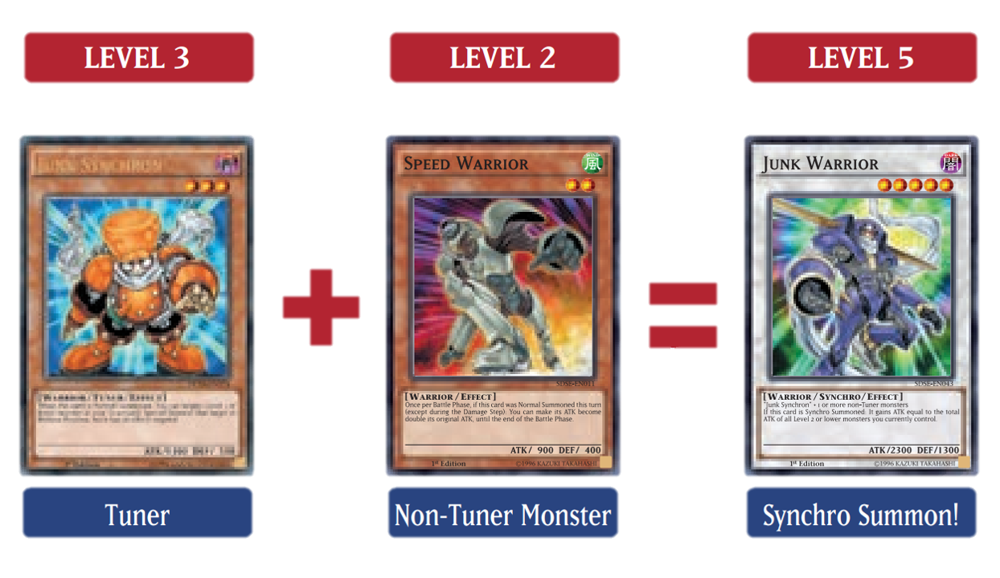
Example: For the materials of a "Baxia, Brightness of the Yang Zing" that says "1 Tuner + 1 or more non-Tuner Wyrm-Type monsters", all non-Tuner monsters must be Wyrm-Type monsters. |
|
- Official rulebook pages 20-21
- OCG Perfect Rulebook 2017 page 71
- OCG Perfect Rulebook 2017 page 59
- OCG Perfect Rulebook 2017 page 91
Monsters sent to the Graveyard for a Synchro Summon are Synchro Materials.
- Synchro Materials are sent to the Graveyard before the Synchro Monster is placed on the field. Even if the Synchro Summon is negated, the monsters that became Synchro Materials are still sent to the Graveyard. However, in that case, those monsters are not treated as Synchro Materials.
- Even if an effect like "Macro Cosmos" is being applied, so that monsters sent to the Graveyard are banished, you can still Synchro Summon. In that case, the monsters used as Materials are not sent to the Graveyard and are banished instead.
- Token Monsters can also be used as Synchro Materials. In that case, the Token Monsters are not sent to the Graveyard and are removed from the Duel.
- Since Xyz and Link Monsters do not have a Level, they cannot be used as Synchro Materials.
- Trap Cards treated as monsters on the field can also be used as Synchro Materials. In that case, the Trap Cards used as Materials are sent to the Graveyard.
-
If Synchro Materials are Special Summoned to the field or are otherwise temporarily moved to a different location, they are no longer treated as Synchro Materials.
Example: After a "Junk Synchron" that was sent to the Graveyard is Special Summoned by "Monster Reborn" or similar, if it is destroyed and sent once again to the Graveyard, it cannot be Special Summoned by the effect of "De-Synchro". -
If a Synchro Monster is destroyed or is otherwise moved to a different location, the Synchro Materials that were used for that monster are not treated as being Synchro Materials for that monster. However, effects that temporarily banish the monster like "Interdimensional Matter Transporter" are an exception.
Example: If a "Junk Warrior" that used "Junk Synchron" as a Material is destroyed by battle, then is Special Summoned again by "Monster Reborn", “"Junk Synchron" cannot be Special Summoned by "De-Synchro".

|
Xyz Monsters (pronounced "ikseez") can be Xyz Summoned whenever you control monsters that are the same Level. Xyz Monsters start in your Extra Deck, not in your Main Deck, and wait for you to call them into action[1].
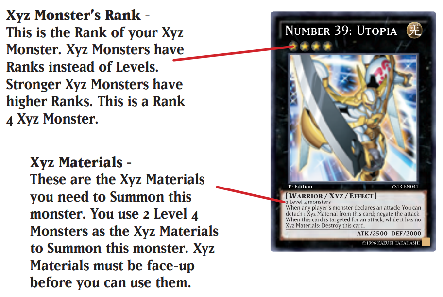 When an Xyz Monster tells you to "detach" a material, take one of the stacked Xyz Material cards beneath your Xyz Monster and put it in the Graveyard[1]. If an Xyz Monster that is banished, on the field, or in the Graveyard would be returned to the hand or Deck by a card effect, that monster is returned to the owner’s Extra Deck instead[2]. Xyz Monsters do not have a Level and have a Rank[2]. After a properly Xyz Summoned Xyz Monster is sent to the Graveyard or banished, if it is Special Summoned from the Graveyard or from being Banished, it can be placed in any of your available Main Monster Zones[3]. |
|
How to Xyz Summon[1]
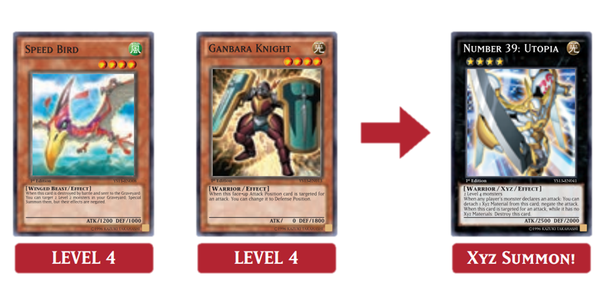
|
|
Monsters that are used to Xyz Summon are called "Xyz Materials", and are placed underneath the Xyz Monster, to show that they are attached to it[1].
- Monsters that have become Xyz Materials are not treated as cards on the field[1].
- If the Xyz Summon is negated, the monsters that became Xyz Materials are sent to the Graveyard. Also, in that case, they are not treated as being sent from the field to the Graveyard[2].
- When an Xyz Monster leaves the field, all of the Xyz Materials attached to it are sent to the Graveyard[1].
-
If Xyz Materials are sent to the Graveyard, they are not treated as being sent from the field to the Graveyard. Also, the card is not treated as leaving the field[2].
Example: If a "Plaguespreader Zombie" Special Summoned by its own effect becomes an Xyz Material and is later sent to the Graveyard, since it is not treated as a card being sent from the field, the clause that says "banish it when it leaves the field" is not applied. - If an Xyz Monster is flipped face-down, or becomes controlled by the opponent, the Xyz Materials are not sent to the Graveyard. They remain attached to the Xyz Monster[1].
- Xyz Materials cannot be targeted for effects[2].
- Monster Tokens cannot be used as Xyz Materials[2].
- Since Link Monsters do not have a Level or Rank, they cannot be used as Xyz Materials for an Xyz Summon[2].
- Trap Cards treated as monsters on the field can also be used as Xyz Materials.[2]

|
Pendulum Monster Cards are a unique kind of card that blurs the line between Monsters and Spells! They can be Summoned as monsters to attack or defend, or you can activate them as Spell Cards in your Pendulum Zones to activate extra special abilities and allow you to Pendulum Summon[1].
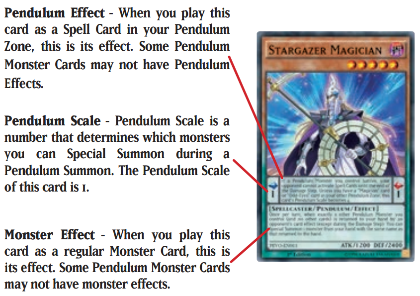 Whenever one of your Pendulum Monster Cards on the field (regardless of which Zone it is in, or even if it is a monster or not) would be sent to the Graveyard, place it face-up on your Extra Deck instead. You can Pendulum Summon it back to the field later! Monsters Pendulum Summoned from the Extra Deck must be Summoned to the Extra Monster Zone or your Main Monster Zone pointed to by a Link Monster[1]. Pendulum Monsters that have Monster Effects are Effect Monsters, and Pendulum Monsters that do not have Monster Effects written in their Monster Information are Normal Monsters. Even if Pendulum Monsters that do not have a Monster Effect have a Pendulum Effect, they are treated as Normal Monsters[2]. |
|
How to Pendulum Summon[1]
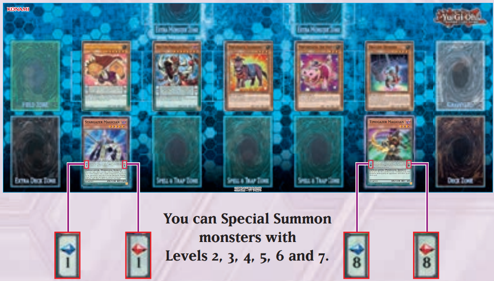
Pendulum Summons can only be performed once per turn[3]. If the Pendulum Summon is negated, all monsters that would have been Special Summoned are sent to the Graveyard. In that case, they are not treated as being sent from the hand, field, or Extra Deck to the Graveyard[3]. A Pendulum Summon is a method that Special Summons any number of monsters in a single timing[3]. Examples:
|
|
Pendulum Monsters activated in a Pendulum Zone or that are placed in the Pendulum Zone by an effect that places cards in the Pendulum Zone are treated as Spell Cards.
- Pendulum Effects can only be activated or applied while placed in the Pendulum Zone.
- Pendulum Effects are treated as the effects of Spell Cards.
- Pendulum Monsters treated as Spell Cards in the Pendulum Zone are not treated as Normal, Continuous, Field, Equip, Quick-Play or Ritual Spells.
- Activating a Pendulum Monster in a Pendulum Zone is treated as the activation of a Spell Card. As a result, the activation can be negated by effects that negate the activations of Spell Cards like "Magic Jammer". If a Pendulum Monster has its activation as a Spell Card negated, that Pendulum Monster is sent to the Graveyard normally, providing no particular effect is being applied.
- Activating a Pendulum Monster in a Pendulum Zone is only treated as the activation of a Spell Card, and its effects cannot be activated at that time.
- Pendulum Monsters cannot be Set face-down in a Pendulum Zone.
- Among Pendulum Effects, there are effects that are applied while they exist in a Pendulum Zone, and there are effects that can be activated when certain requirements are met. In that case, they are treated as activating the effect of a card and not as the activation of a Spell Card.
- Pendulum Effects that activate are of Spell Speed 1. As a result, they cannot be activated in a chain to the activation of cards or effects.
- Pendulum Effects are invalidated immediately when they leave the field. Also, if a Pendulum Effect is activated, and that Pendulum Monster is destroyed by a card effect activated in a chain, the Pendulum Effect does not resolve.
A Fusion/Synchro/Xyz Pendulum monster:
- is not included in the Main Deck while building it and are included in the owner's Extra Deck instead[1].
- if it is face-up in the Extra Deck it cannot be Fusion, Synchro or Xyz Summoned[2].
- if it is face-down in the Extra Deck it cannot be Pendulum Summoned[2].
- if on the field or Graveyard or that is banished would be returned to the hand or Deck by a card effect, that monster is returned to the owner's Extra Deck[1].
- if would be sent from the field (Pendulum Zone, Monster Zone, Spell & Trap Zone) to the Graveyard, it is added to the Extra Deck face-up instead as long as no particular effect is being applied[1].
- if placed in a Pendulum Zone it is treated as Spell Cards[1].
- if the Fusion/Synchro/Xyz Summon or Pendulum Summon is negated, it is sent to the Graveyard[2][3].
| Summoning Method | Extra Deck status | ||||||||
| Face-down | Face-up after proper Summon | Face-up after improper Summon | |||||||
| Respective Extra Deck Summon | ✔️ | ✔️ | ✔️ | ❌[2] | ❌[3] | ❌[4] | ❌[2] | ❌[3] | ❌[4] |
| Pendulum Summon | ❌[2] | ❌[3] | ❌[4] | ✔️ | ✔️[3] | ✔️[4] | ❌[2] | ❌[3] | ❌[4] |
| Special Summon by a card effect | ✔️ | ✔️[3] | ✔️[4] | ✔️ | ✔️[3] | ✔️[4] | ❌ | ❌[3] | ❌[4] |
| Special Summon by a card effect treated as respective Extra Deck Summon | ✔️ | ✔️[3] | ✔️[4] | ❌ | ❌[3] | ❌[4] | ❌ | ❌[3] | ❌[4] |
| Effects that Special Summon Pendulum Monsters that are face-up in the Extra Deck | ❌ | ❌[3] | ❌[4] | ✔️ | ✔️[3] | ✔️[4] | ❌ | ❌[3] | ❌[4] |
- OCG Perfect Rulebook 2017 pages 70-71
- OCG Perfect Rulebook 2017 page 75
- OCG Perfect Rulebook 2017 page 93
- OCG Perfect Rulebook 2017 page 96
If Pendulum Monsters are placed in the Pendulum Zone, this is treated as the activation of a Spell Card. If their activation is negated by the effect of a card that negates the activation of Spells, since they are not treated as being sent from the field to the Graveyard, they are sent to the Graveyard like any other card
References:Pendulum Monsters sent from outside the field to the Graveyard are sent to the Graveyard normally. For example, if at the time you would Normal Summon a Pendulum Monster from the hand that itself is negated by "Solemn Judgment", the Pendulum Monster that is not treated as being sent from the field to the Graveyard is not added to the Extra Deck, and is sent to the Graveyard.
References:If an effect that says "Any monster sent to the Graveyard is banished instead." is being applied when a Pendulum Monster placed in the Pendulum Zone is destroyed, since it exists on the field as a Spell Card, it is not banished and it is added to the Extra Deck
If an effect like "Macro Cosmos" is being applied, so that (all kinds of) cards that would be sent to the Graveyard are banished, the effect text takes precedence and Pendulum Monsters are not added to the Extra Deck and are banished instead.
References:

|
A Link Monster are monsters with the ability to increase the number of monsters you can Summon from your Extra Deck for other Link monsters and Pendulum monsters. In addition to the 1 Extra Monster Zone you can usually use, you can also Summon Link and Pendulum monsters from the Extra Deck to any of your Main Monster Zones that has a Link Monster's red arrow pointing to it[1].
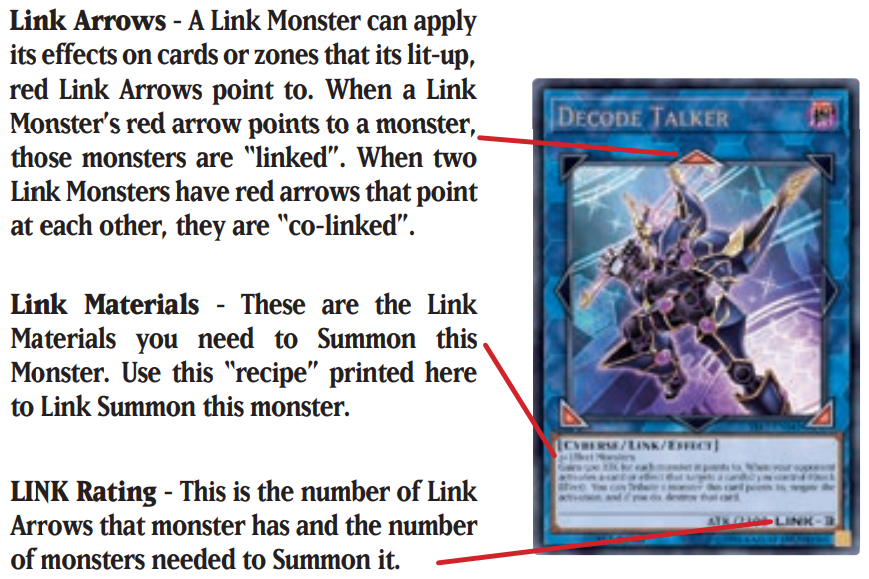 If 2 Extra Monster Zones are available, you can choose either one to Summon your monster. If there is a Link Monster already on the field, you can Link Summon a monster in one of your Zones it points to[1]. |
|
How to Link Summon[1]
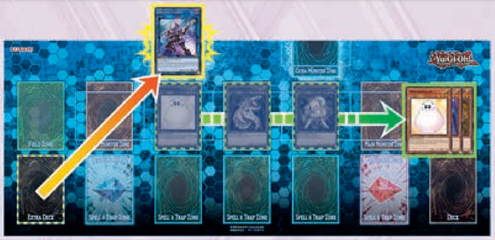
After a properly Link Summoned Link Monster is sent to the Graveyard or banished, if it is Special Summoned from the Graveyard or from being Banished, it can be placed in any of your available Main Monster Zones[2]. |
|
Link Monsters have no DEF and cannot ever be in Defense Position. They can't be changed to Defense Position by a card effect. They can't even be flipped into face-down Defense Position.
References:Link and Pendulum Monsters Summoned from the Extra Deck normally have to go in the Extra Monster Zone. But Link Monsters open up more Zones for you to use, because every Main Monster Zone that a Link Monster points to can also be used to Summon Link and Pendulum monsters from your Extra Deck. Link and Pendulum Monsters that started in the Extra Deck, but later end up in the Graveyard (or are banished) and are Summoned from there, also go in the Main Monster Zones (and don't need a Link Monster to point to them).
References:Monsters sent to the Graveyard for a Link Summon are called Link Materials[1].
- Link Materials are sent to the Graveyard before the Link Monster is placed on the field. Even if the Link Summon is negated, the monsters that were sent to the Graveyard as Link Materials remain in the Graveyard. In that case, they are not treated as Link Materials[1].
- Even if an effect like "Macro Cosmos" is being applied, it is possible to Link Summon even if the monsters that would be sent to the Graveyard would be banished. In that case, the monsters used as materials are not sent to the Graveyard and are banished instead[1].
- Token Monsters on the field can also be used as Link Materials. In that case, the Tokens are not sent to the Graveyard and they are removed from the Duel[2].
- Trap Cards treated as monsters on the field can also be used as Link Materials. In that case, the Trap Cards used as Materials are sent to the Graveyard[2].
- If Link Materials are Special Summoned to the field or are otherwise temporarily moved to a different location, they are no longer treated as Link Materials[1].
- If a Link Monster is destroyed or is otherwise moved to a different location, the Link Materials that were used for that monster are not treated as being Link Materials for that monster[1]. However, effects that temporarily banish the monster like "Interdimensional Matter Transporter" are an exception[1].
Some common terms to know when dealing with Link Monsters:
- Link Arrows: these are the big red triangles surrounding the picture of the monster. Only the red ones are Link Arrows.
- Link Rating: the number in the lower right hand corner of a Link Monster where the DEF would normally be located. This is the number of Link Arrows the monster has, and also the number of Link Materials you need to use to Link Summon it.
- Link Material: these are the face-up monsters on your side of the field that you use to Link Summon.
-
points to: the Monster Zones and/or monsters that are directly adjacent to the tip of a Link Arrow are the zones and/or monsters that Link Monster "points to".
- A "Decode Talker" placed in an Extra Monster Zone, for example, points to the Main Monster Zone directly above it, as well as the Main Monster Zones diagonally downwards to the left and right.
- A "Decode Talker" placed in the center Main Monster Zone does not point to anything, as there are no Monster Zones directly adjacent to the tip of its Link Arrows.
-
linked: a monster is "linked" if one or both of the following is true:
- A Link Arrow is pointing to this monster.
- This monster is a Link Monster and one of its Link Arrows is pointing to another monster.
- co-linked: only Link Monsters can be "co-linked". Two Link Monsters are "co-linked" if they have Link Arrows that point at each other. In the following formation, "Firewall Dragon" is "co-linked" to 2 monsters: "Link Spider" and "Honeybot".
- Official KONAMI's article, archived from the original
In addition to being linked or co-linked, there's a special type of "linked" state that a monster can be in: "Extra Linked". Only Link Monsters can be Extra Linked, and this state only occurs when a series of co-linked Link Monsters is built that connects a Link Monster in an Extra Monster Zone to a Link Monster in the other Extra Monster Zone. Each monster in the series must be co-linked to each other monster it is linked to in the series.
In the example below, we've placed a series of co-linked monsters from the right-hand Extra Monster Zone over to the left-hand Extra Monster Zone where the opponent has Link Summoned "Decode Talker". Each of our Link Monsters is co-linked to each other Link Monster it's linked to in the series, so when we Link Summon the final monster in the series, each monster in the series becomes Extra Linked in addition to being co-linked and linked, including the opponent's "Decode Talker". Any Link Monster that is co-linked to one of the monsters in this series is also Extra Linked, even if it's not contributing towards making the monsters Extra Linked. For example, an extra "Honeybot" to the left or right of one of the "Firewall Dragon" would also be Extra Linked.
Under normal circumstances you cannot occupy both Extra Monster Zones with monsters from your Extra Deck. There is one, and only one, exception to this rule: If Link Summoning to the second Extra Monster Zone would create a complete series of Extra Linked Link Monsters, you may Link Summon a monster to that Extra Monster Zone to complete that series. So in the example below, you are allowed to Link Summon a monster to the left-hand Extra Monster Zone if and only if that monster would be co-linked to the left-hand "Firewall Dragon", causing all of the monsters to become Extra Linked.
Link Monsters can be co-linked on diagonals, an Extra Link with only three monsters is then possible as well.
References:- Official KONAMI's article, archived from the original
If you take control of your opponent's monster in the Extra Monster Zone, it moves to your Main Monster Zone. When it goes back to your opponent, it goes to their Main Monster Zone, not the Extra Monster Zone.
References:There are several ways to play monsters onto the field. These ways can be categorized into 2 groups: actions that can be done only once per turn, and actions that can be done multiple times per turn:
-
You can do one of these once per turn:
- Normal Summon
- Normal Set
- Tribute Summon
-
You can do as many of these during a turn as you want:
- Flip Summon
- Special Summon
- Special Summon with a Card's Effect
This is the most common way to Summon a monster. Simply play a Monster Card from your hand onto the field in face-up Attack Position. All Normal Monsters, and most Effect Monsters (unless they have a specific restriction), can be Summoned in this way[1].
If a Normal Summon is performed, a card that "negates the Normal Summon" can be used in response to that Normal Summon. Even if the Normal Summon is negated, in most cases you cannot perform another Normal Summon/Set[2]:
- A monster that has its Normal Summon/Set negated is sent to the Graveyard providing no particular effect is being applied. In that case, that monster is not treated as being sent from the hand or field to the Graveyard[2].
- When a monster that does not have its Normal Summon/Set negated is placed on the field, this is called a "successful Normal Summon(/Set)"[2].
To play a Monster Card from your hand in face-down Defense Position is called a Normal Set[1].
- A monster Normal Set on the field is NOT considered Summoned. It has been Normal Set, and can be Summoned with a Flip Summon or flipped face-up by an attack or card effect[1].
- You can only Normal Summon OR Normal Set (Normal Summon/Set, in short), once per turn, so if you Normal Set a monster you cannot also Normal Summon a monster that turn[1].
-
You cannot play a monster from your hand onto the field in face-up Defense Position.
As an exception, if the effect of "Light of Intervention" that says "If a Monster Card would be Set, it must be Normal Summoned in face-up Defense Position" is being applied, a Normal Summon/Set can be performed in face-up Defense Position. This Normal Summon/Set is not treated as a Set[2]. - There are some cards like "The Shallow Grave" that "Set in face-down Defense Position" while resolving their card effect. In that case, the monsters are treated as being Special Summoned in face-down Defense Position[2].
- There are some cards like "Elemental HERO Chaos Neos" with effects that "Set" face-up monsters while resolving their card effect. In that case, those face-up monsters are changed to face-down Defense Position, and this is treated as a Set[2].
For monsters that are Level 5 or higher, you must Tribute at least 1 monster you control before the Normal Summon/Set. This is called a Tribute Summon. Monsters that are Level 5 or 6 require 1 Tribute and Monsters that are Level 7 or higher require 2 Tributes[1].
| Level 5,6 | Level 7 or higher |
| 1 Tribute | 2 Tributes |
- If you Tribute Summon in face-down Defense Position, it is called a Tribute Set. A monster Tribute Set on the field is NOT considered Summoned[1].
- When a card explains a special method to Tribute Summon a monster, you can also Tribute Set the monster by the same method[1].
- A Tribute Summon that Tributes 1 or more monsters can be performed by Tributing monsters even if there are no Main Monster Zones available[2].
- There are monsters like "Beast King Barbaros" or "Slifer the Sky Dragon" that can be Tribute Summoned by Tributing the amount of monsters written in their texts. If a monster like "Beast King Barbaros" that says "You can Normal Summon/Set this card without Tributing" is Normal Summoned/Set without a Tribute, this is not treated as a Tribute Summon[2].
- If monsters are Tributed for a Tribute Summon, the Normal Summon of the monster is performed afterwards. For that reason, optional Trigger Effects that read "when it is sent to the Graveyard, you can[...]" that can be activated in that timing cannot be activated during that procedure[2].
Sending monsters on the field to the Graveyard for a Tribute Summon is called Tributing.
- Face-down monsters on the field can also be Tributed.
- The Tributes are performed at the time the Tribute Summon is declared, before the monster that would be Normal Summoned/Set is placed on the field. Even if the Tribute Summon is negated, the Tributed monsters are sent to the Graveyard normally.
- You can only Tribute monsters you control.
- Monster Tokens on the field can also be Tributed. In this case, the tokens are not sent to the Graveyard and they are removed from the Duel.
- Trap Cards treated as monsters on the field can also be Tributed. In that case, that Tributed Trap Card is sent to the Graveyard, providing no particular effect is being applied.
- If "Mask of Restrict" has been activated, so that monsters cannot be Tributed, a Tribute Summon cannot be performed.
- Monsters that you control in the Extra Monster Zones can also be used as tributes for a Tribute Summon.
- Even if "Macro Cosmos" or something similar is being applied, so that monsters that would be sent to the Graveyard are banished, monsters can still be Tributed. In that case, the Tributed monsters are not sent to the Graveyard and are banished instead.
You can change a face-down Defense Position monster into face-up Attack Position, without using a card effect. This is called a Flip Summon.
- When you Flip Summon, you cannot change the monster to face-up Defense Position, only to face-up Attack Position.
- A Monster Card cannot be Flip Summoned in the same turn that it was Set onto the field.
- You cannot use most monsters' effects until they are face-up
Some monsters can be played onto the field without being Normal Summoned or Set. This is called a Special Summon[1].
- Link Summons, Pendulum Summons, Xyz Summons, Synchro Summons, Fusion Summons and Ritual Summons are all Special Summons[1].
- Some Effect Monsters also have specific conditions that allow you to Special Summon them[1].
- Unless otherwise specified, a Special Summoned monster is played onto the field in your choice of face-up Attack Position or face-up Defense Position[1].
- Aside from Pendulum Summoning, Special Summons can be performed any number of times per turn[2].
- A Special Summon cannot be performed if there are no available Monster Zones. However, if monsters leave the field in order to meet the requirements for the Special Summon, the procedure or resolution for the Special Summon can be conducted even if there are no available Monster Zones in most cases[2].
- The player can choose any available Main Monster Zone in which to place the monster that would be Special Summoned[2].
- If the Special Summon is not negated, placing the monster on the field constitutes a "successful Special Summon"[2].
During their Main Phase, once the turn player has priority and they do not wish to activate or resolve an effect, the turn player can Special Summon a monster by meeting the requirements written in that monster’s Effect Text.
- If a Special Summon is performed by meeting requirements, a card that "negates Special Summons" can be activated in response to that Special Summon.
- A monster that has its Special Summon negated is sent to the Graveyard providing no particular effect is being applied. In that case, the monster that was sent to the Graveyard is not considered to be sent from the hand, field, or Extra Deck to the Graveyard.
- Performing a Special Summon by meeting requirements does not start a chain.
- Cards that are Tributed or sent to the Graveyard in order to meet requirements are moved to a different place for the procedure of the Special Summon and are not treated as being moved by a card effect.
-
If monsters are Tributed or sent to the Graveyard to meet requirements, the Special Summon of the monster is performed afterwards. For that reason, optional Trigger Effects that read "when it is sent to the Graveyard, you can[...]" that can be activated in that timing cannot be activated during that procedure. Some examples:
- Example: When "Gusto Falco" is used as a Material for a Synchro Summon, that "Gusto Falco" is sent to the Graveyard as a Material, but since the Special Summon of the Synchro Monster is performed afterwards, its effect that says "When this face-up card on the field is sent to the Graveyard, except by battle: You can Special Summon 1 "Gusto" monster from your Deck in face-down Defense Position." cannot be activated.
- Example: If "The Tricky" (1) is Special Summoned by sending "Archfiend of Gilfer" (2) from the hand to the Graveyard, when the (2) is sent to the Graveyard to perform the Special Summon of (1), (2)'s effect that says "You can target 1 face-up monster on the field; equip that target with this card." cannot be activated.
Special Summon Monsters (Main Deck Monsters that cannot be Normal Summoned/Set, Ritual and Extra Deck Monsters) can be Special Summoned when specific requirements are met[1].
- Special Summoning Special Summon monsters by their requirements is not treated as the resolution of an effect. However, in order to properly Special Summon Fusion Monsters and Ritual Monsters, they are treated as being Special Summoned by the resolution of an activated card[1].
- Special Summon monsters that say "cannot be Special Summoned by other ways" in their Summoning requirements can only be Special Summoned by that method, and cannot be Special Summoned by the effects of other cards[1].
- Special Summon monsters cannot be Special Summoned by other card effects unless they are previously Special Summoned by the method described in their texts. However, Fusion, Synchro, Xyz and Link Monsters can be Special Summoned by effects that say "Special Summon from the Extra Deck" in most cases[1].
- If a monster Special Summoned by the proper procedure that is later added to the Deck, hand, or other private location, that monster is no longer treated as being Special Summoned by the proper procedure[1].
-
Cards with effects that say "ignoring its Summoning conditions" can Special Summon Special Summon monsters from the Deck or hand without Special Summoning them by the proper procedure[1].
Example: "Infernoid Onuncu" can be Special Summoned from the Deck by the effect of "A Wild Monster Appears!". - Even if the Flip Summon of a properly summoned Special Summon Monster is negated, that monster will still be treated as having been properly summoned[2].
- OCG Perfect Rulebook 2017 page 84
- YGOrg Database of Official OCG Rulings: "Chaos Sorcerer", "Solemn Judgment"
Monsters can also be Special Summoned onto the field through the effect of another card. This is different from "Special Summon Monsters"[1].
-
You cannot use a card effect to Special Summon those monsters from your hand, Deck, Graveyard[1], Spell/Trap Zone[2] unless it was properly Special Summoned first.
For example, if a Synchro Monster is sent from your Extra Deck to the Graveyard without being Synchro Summoned, you cannot use a Spell Card to Special Summon it from the Graveyard, because Synchro Monsters have to be properly Special Summoned first, before they can be Special Summoned by another card's effect. -
When a Special Summon is performed as a result of the resolution of an activated effect that started a chain, if the activation of the activated effect that started a chain is not negated, the resolution that performs the Special Summon cannot be negated[3].
Example: After the effect of "Raidraptor - Avenge Vulture" that says "If you take damage: You can Special Summon this card from your hand" was activated, cards like "Solemn Judgment" cannot be activated to negate the Special Summon when the effect is resolving. Afterwards, cards that respond to when a Special Summon is successful can be activated when the Special Summon is successful. - Monsters that have effects to Special Summon themselves that activate are mostly written as ":/; Special Summon this card from your [...]". Also, those effects are Ignition Effects or Trigger Effects in most cases[3].
- Effects of Spells, Traps and Monsters that Special Summon other cards are effects that activate and start a chain in most cases[3].
- Official rulebook page 25
- YGOrg Database of Official OCG Rulings: "Meklord Emperor Granel"
- OCG Perfect Rulebook 2017 pages 101-102
If you Special Summon monsters to the opponent's field such as by activating "Ojama Trio", the Main Monster Zones in which they would be Special Summoned is chosen by the player who activated the effect in most cases.
However, even if you activate an effect like "Gilasaurus" in which the opponent performs the Special Summon, the opponent is the one who chooses the Main Monster Zone in which the monster would be Special Summoned.
References:If an effect that Summon states "Immediately after this effect resolves", it instructs a player to perform a Synchro, Xyz, Pendulum, or Link Summon at the resolution of the Chain Link[1].
- A monster summoned by such effects is not considered to have been "Special Summoned by an activated Monster/Spell/Trap effect"[1]
- The effect or the activation can be negated by cards that are able to negate "effects that include an effect that Special Summons a monster(s)"[2]
- The Summon of that monster(s) can be negated if the effect resolves as Chain Link 1[3]
- YGOrg Database of Official OCG Rulings: "I:P Masquerena", "Granguignol the Dusk Dragon"
- YGOrg Database of Official OCG Rulings: "Tearlaments Rulkallos", "Urgent Tuning"
- YGOrg Database of Official OCG Rulings: "Tenpai Dragon Chundra", "Sauravis, the Ancient and Ascended"
The restriction of "you cannot Normal or Special Summon the turn you activate this card" only refers to monsters that were successfully Summoned (summon not negated). Same for "you can only Special Summon X once per turn" restrictions.
References:A card (1) with the restriction of "you cannot Normal or Special Summon except [...] monsters the turn you activate this card" applies its restrictions for the entire duration of the turn. Normally, if you Summon a monster (2) which violates the restriction of (1), then (1) cannot be activated. Similarly, if you activate (1) first (2) cannot be Summoned. But if:
- A card (3) has an effect that applies to (2) such that when (2) is Summoned it does not violate the restriction of (1), then (1) can be activated after (2) has been Summoned.
- A card (3) has an effect that applies to (2) such that when (2) is Summoned it does not violate the restriction of (1), but you activate (1) before (2) is Summoned, then (2) cannot be Summoned anymore.
- YGOrg Database of Official OCG Rulings: "Mozarta the Melodious Maestra", "DNA Transplant"
Remember, cards with the same name are considered to be the same card, and you can only have up to 3 copies of the same card in your Main Deck and Side Deck combined.
2. TypeInstead of having an Attribute symbol like Monster Cards, a Spell Card has the "SPELL 魔" symbol and a Trap Card has the "TRAP 罠" symbol.
3. IconThere are 6 types of icons that represent special properties a Spell or Trap Card may have. Spell and Trap Cards without an icon are called Normal Spell Cards or Normal Trap Cards.
4. Card DescriptionEach card's activation conditions and effects are provided here.
5. Card NumberA card's identification number is found here. This number is useful for collecting, and for sorting your collection.
Spell Cards can normally be activated only during your Main Phase, and help you out with different effects. Spell Cards have many powerful effects, like destroying other cards or strengthening monsters. Save these cards in your hand until you can get the best results out of them.
References:Activating:
- Spell Cards other than Quick-Play Spell Cards can be activated by the turn player during their Main Phase, once the turn player has priority and they do not wish to activate or resolve an effect by placing them face-up.
- If a Spell Card is activated from the hand, it is placed face-up in 1 of the Spell & Trap Zones, with the exception of Field Spell Cards.
- If a set Spell Card is activated, it is changed from being face-down in a Spell & Trap Zone or Field Zone to being face-up.
- If there are no available zones in which to activate the Spell Card, it cannot be activated from the hand, with the exception of Field Spell Cards.
- Activating Spell Cards starts a chain. Spell Cards have a Spell Speed of 1, with the exception of Quick-Play Spell Cards.
- If a Spell Card is activated, cards that negate the activation of Spell Cards can be activated in a chain to that activation.
- Spell Cards that have their activations negated are sent to the Graveyard providing no particular effect is being applied. In that case, the Spell Card sent to the Graveyard is not treated as being sent from the hand or field to the Graveyard. The same applies if a set Field Spell Card has its activation negated.
- Activated Spells are treated as being face-up on the field.
- After resolving the effects of Spell Cards, they are sent to the Graveyard, with the exception of Continuous, Equip and Field Spells, as well as some Normal Spell Cards like "Swords of Revealing Light".
Setting:
- During their Main Phase, once the turn player has priority and they do not wish to activate or resolve an effect, the turn player can place Spell Cards from the hand face-down.
- Placing a Spell card face-down from the hand is called Setting.
- If there are no available Zones in which to place the Spell Card, they cannot be Set, with the exception of Field Spells.
- Set Spell Cards can be activated even during that turn, with the exception of Quick-Play Spell Cards.
- The information of face-down Spell Cards, including whether they are a Spell Card or a Trap Card or not, is private to the opponent. However, face-down Field Spell Cards in the Field Zone are treated as Field Spell Cards. The controller of face-down Spell or Traps can always verify them.
Normal Spell Cards have single-use effects. To use a Normal Spell Card, announce its activation to your opponent, placing it face-up on the field. If the activation succeeds, then you resolve the effect written on the card. After resolving the effect, send the card to the Graveyard.
References:These Spell Cards are used to perform Ritual Summons. Use these cards in the same way as you would use Normal Spell Cards.
These cards remain on the field once they are activated, and their effect continues while the card stays face-up on the field[1].
-
There are Continuous Spell Cards that have effects that can activate under certain conditions after their activation. In that case, this is treated as activating an effect and not as activating a Spell Card[2].
Example: If the effect of an already active "Ruins of the Divine Dragon Lords" that says "Once per turn: You can send 1 other face-up card you control to the Graveyard;" is activated, the activation of that effect cannot be negated by "Magic Jammer" that says "negate the activation, and if you do, destroy it.". - The activated effects of Continuous Spell Cards are of Spell Speed 1. As a result, they cannot be activated in a chain to the activation of cards or effects[2].
- The effects of Continuous Spell Cards are invalidated immediately when they leave the field. Also, if a Continuous Spell Card that has already been activated activates an effect, and that Continuous Spell Card is destroyed by a card effect activated in a chain, the effect of the Continuous Spell Card does not resolve[2].
These cards give an extra effect to 1 face-up monster of your choice (either your own or your opponent's, depending on the card). They remain on the field after they are activated. The Equip Spell Card still occupies one of your Spell & Trap Zones[1].
- Equip Spells are activated by targeting the monster that they will equip. That targeted monster can be a face-up monster on the field/a monster in the Graveyard/a banished monster depending on the Equip Spell Card[2].
- Equip Spells can also be equipped to the opponent's monsters unless it is stated that they can be equipped to your or the opponent's monsters[2].
- In most cases, a single monster can be equipped with many Equip Spells[2].
- If the activation of an Equip Spell is negated, it is not equipped, but if it has its effects negated, its effects are negated but it remains equipped[2].
-
If the equipped monster leaves the field or is flipped face-down, the equipped Equip Spells are destroyed and sent to the Graveyard[2]. The Equip Spells are not treated as being destroyed by a card effect[2].
This rule is also the same for equipped Traps, and monsters equipped to other monsters[3]. - If the equipped monster no longer meets the requirements to be equipped by those Equip Spells, those Equip Spells are destroyed and sent to the Graveyard. The Equip Spells are not treated as being destroyed by a card effect[2].
- If the equipped monster is unaffected by Spell Cards, it remains equipped while being unaffected by the effects[2].
-
After being equipped, if the card name or Type of the equipped monster changes so that the conditions for it to be equipped are no longer met, that Equip Card is destroyed[2].
Example: If a Warrior-Type monster equipped with "Magnum Shield" (1), which says "Equip only to a Warrior-Type monster", has its Type become Spellcaster-Type by the effect of "DNA Surgery" that says "All face-up monsters on the field become that Type.", (1) is destroyed. - There are Equip Spells that have effects that can activate under certain conditions after their activation. In that case, this is treated as activating an effect and not as activating a Spell Card[2].
- The effects of Equip Spell Cards that activate have a Spell Speed of 1[2].
- The effects of Equip Spells, other than their effects that activate in the Graveyard, stop applying immediately when they leave the field. Also, if an Equip Spell that has already been activated activates its effect, and that Equip Spell is destroyed by a card effect activated in a chain, the effect of the Equip Spell does not resolve[2].
These cards go in your Field Zone and stay there. Each player can have 1 Field Spell Card on their own side of the field. These cards may be placed facedown in the Field Zone, but are not active until flipped face-up[1].
- If there already is a Field Spell in your Field Zone, you can activate or Set a new Field Spell in the Field Zone by sending that card to the Graveyard. In that case, the card sent to the Graveyard is not destroyed and it is not treated as being sent to the Graveyard by a card effect[2].
- After activating a Field Spell, it remains in the Field Zone[2].
- Unless stated otherwise, Field Spells keep exerting their effects as long as they remain face-up in the Field Zone[2].
- There are Field Spells that have effects that can activate under certain conditions after their activation. In that case, this is treated as activating an effect and not as activating a Spell Card[2].
- In most cases, the effects of Field Spells that activate are of Spell Speed 1. As a result, they cannot be activated in a chain to the activation of a card or effect[2].
- The effects of Field Spells that apply on the field stop applying immediately when they leave the field. Also, if a Field Spell that has already been activated activates an effect, and that Field Spell is destroyed by a card effect activated in a chain, the effect of the Field Spell does not resolve[2].
These are special Spell Cards that can be activated during any Phase of your turn, not just your Main Phase. You can also activate them during your opponent's turn if you Set the card face-down first, but then you cannot activate the card in the same turn you Set it.
- Quick-Play Spells are of Spell Speed 2. As a result, they can also be activated in a chain to the activations of cards or effects, except Counter Trap Cards[2].
- Effects that activate in the Graveyard like "Karma of the Destruction Swordsman", or the effect of "Artifact Ignition" that activates when it is destroyed, are of Spell Speed 1[2].
- Quick-Play Spells in your hand can be activated when you have priority during your turn[2].
- Set Quick-Play Spells on the field can be activated during either player's turn when that player has priority[2].
- Quick-Play Spells cannot be activated during the turn in which they are Set[2].
- After activating a Quick-Play Spell and applying its effect, it is sent to the Graveyard[2].
Trap Cards will help you out with different effects, just like Spell Cards. The big difference between them is that you can activate Trap Cards during your opponent's turn. Before you can activate a Trap Card, you must Set it on the field first. You cannot activate a Trap in the same turn that you Set it, but you can activate it at any time after that-starting from the beginning of the next turn.
Spell Cards can be Set face-down on the field like Trap Cards. However, the rules for the two types of cards are different. Spell Cards can be activated during the Main Phases even in the same turn that you Set them (except for Quick-Play Spell Cards). Setting them does not allow you to use them on your opponent's turn; they still can only be activated during your Main Phase. You can Set a Spell Card face-down on the field to bluff your opponent into thinking you have a powerful Trap.
References:Activating:
- Activating Trap Cards starts a chain. With the exception of Counter Traps, they are of Spell Speed 2. Counter Traps are of Spell Speed 3.
- Trap Cards must be Set. However, if the effect of "Makyura the Destructor" that says "you can activate Trap Cards from your hand." is applied, you can activate Trap Cards during either player's turn when you have priority.
- Trap Cards Set on the field can be activated during either player's turn when that player has priority.
- Trap Cards cannot be activated during the turn in which they are Set. However, if the effect of "Temple of the Kings" that says "You can activate 1 Trap Card the turn it was Set." is being applied, they can be activated just like Trap Cards Set in previous turns.
- If a Set Trap Card is activated, it is changed from being face-down to face-up in the Spell & Trap Zone.
- If a Trap Card is activated, cards that negate the activation of Trap Cards can be activated in a chain.
- A Trap Card that had its activation negated is sent to the Graveyard, providing no particular effect is being applied. In that case, the Trap Card that is sent to the Graveyard is not treated as being sent from the hand or field to the Graveyard.
- Activated Trap Cards are treated as being face-up on the field.
- Trap Cards are sent to the Graveyard after applying their effects, with the exception of Continuous Traps and some Normal Traps.
Setting:
- During their Main Phase, once the turn player has priority and they do not wish to activate or resolve an effect, the turn player can place Trap Cards from their hand face-down.
- Placing Trap Cards face-down is called Setting them.
- The information of face-down Trap Cards, including whether they are a Spell or Trap Card or not, is private to the opponent. The controller of those face-down cards can always verify them.
- If there are no available Spell & Trap Zones, Trap Cards cannot be Set.
Before you can activate a Trap Card, you must Set it on the field first. You cannot activate a Trap in the same turn that you Set it, but you can activate it at any time after that - starting from the beginning of the next turn.
Normal Trap Cards have single-use effects and once their effects are resolved, they will be sent to the Graveyard, just like Normal Spell Cards. They are also similar to Normal Spell Cards because once activated, their effects are not likely to be stopped. However, your opponent can destroy your face-down Trap Cards on the turn they were Set, or before the time is right to activate them. Because of this, you must be smart about how you use your Trap Cards.
References:Just like Continuous Spell Cards, Continuous Trap Cards remain on the field once they are activated and their effects continue while they are face-up on the field. Some Continuous Trap Cards have abilities similar to the Ignition Effects or Trigger Effects that can be found on Effect Monster Cards[1].
- Unless stated otherwise, Continuous Trap keep exerting their effects as long as they remain face-up in a Spell & Trap Zone[2].
- There are Continuous Traps that have effects that can activate under certain conditions after their activation. In that case, this is treated as activating an effect and not as activating a Trap Card[2].
- The effects of face-up Continuous Traps that activate are of Spell Speed 2. As a result, they can be activated in a chain to the activation of cards or effects in most cases[2].
-
The effects of Continuous Traps can be resolved when that card is activated, provided the conditions to activate it are met when the card is activated[2].
Example: When "Dark Contract with the Witch" is activated from being face-down, its effect that says "You can send 1 "D/D" or "Dark Contract" card from your hand to the Graveyard, then target 1 card on the field; destroy it." can be applied. Also, in most cases, when a card is activated from being face-down, only its activation can be performed.-
As an exception, there are effects that cannot be activated when the card is activated[2].
Example: Since the effect of "Yang Zing Unleashed" (1) that says "During either player's Main Phase or Battle Phase: You can send this face-up card from your Spell & Trap Zone to the Graveyard; immediately after this effect resolves, Synchro Summon 1 Synchro Monster, using 1 or more "Yang Zing" monsters you control as Synchro Materials." needs to send (1) itself to the Graveyard, it cannot be applied when (1) is activated. It must be activated in a new chain after the activation of the card is finished.
-
As an exception, there are effects that cannot be activated when the card is activated[2].
- Effects of Continuous Traps stop applying immediately when they leave the field. Also, if a Continuous Trap that has already been activated activates an effect, and that Continuous Trap is destroyed by a card effect activated in a chain, the effect of the Continuous Trap does not resolve[2].
These Trap Cards are normally activated in response to the activation of other cards, and may have abilities like negating the effects of those cards. These types of Traps are effective against Normal Spell Cards or Normal Trap Cards, which are otherwise hard to stop, however many Counter Trap Cards require a cost to activate them[1].
- Counter Traps are of Spell Speed 3. As a result, they can be activated in a chain to all cards and effects[2].
- Counter Traps are activated on the timing when a monster is Normal/Flip/Special Summoned, cards are drawn, or when an attack is declared. Otherwise, they are activated in a chain to the activation of a card or effect[2].
-
Counter Traps that negate the activations of cards or effects must be activated in a chain to the activation of the card or effect that is to be negated[2].
Example: If "Dust Tornado" is activated in a chain to the activation of "Mystical Space Typhoon", "Magic Jammer" cannot be activated in a chain to negate the activation of "Mystical Space Typhoon".- As an exception, cards like "Vanity's Call" that have an effect that negates the activation of all previous cards in the chain also exist[2].
- Counter Traps are sent to the Graveyard after being activated and applying their effects[2].

|
Monster Tokens are monsters that appear on the field as the result of a card's effect, for example "Scapegoat"[1]. |
- They are not included in the Deck, and cannot be sent anywhere other than the field, such as the hand or Graveyard[1].
- When a Token is destroyed or returned to the hand or Deck, they are simply removed from the field instead[1]. If Monster Tokens leave the field, they do not go to the Graveyard and are removed from the Duel[2].
- Each Monster Token takes up 1 of your 5 Monster Zones[1].
- Their battle position is always either face-up Attack Position or faceup Defense Position[1]. Monster Tokens cannot be in face-down Defense Position[2].
- Monster Tokens cannot be sent to the Graveyard to activate effects[2].
- Monster Tokens can be used as Synchro Materials. In that case, they are not sent to the Graveyard and are removed from the Duel[2].
- Tokens cannot be used as an Xyz Material[1].
- Monster Tokens can be used as Link Materials. In that case, they are not sent to the Graveyard and are removed from the Duel[2].
-
Tokens on the field are treated as Normal Monsters[1]. If the activation or resolution of some effect is related to the Monster Token, those effects belong to the effect of the card that Special Summoned the Monster Token[2].
Example: The effect of an "Deus Token" summoned by the effect of "Darklord Asmodeus", which says ""Deus Token" cannot be destroyed by battle", is not applied as the effect of the "Deus Token", but rather as part of the effect of "Darklord Asmodeus".
If a Token's (1) properties (Attribute, Type, ATK, DEF and/or Level...) satisfy a certain card's (2) activation requirement and (2) requires to banish a Monster with those properties, (2) can be activated. If (1) is banished because of (2)'s cost, (2) resolves normally even if (1) original properties were not originally the one necessary to fulfil the activation of (2).
References:- YGOrg Database of Official OCG Rulings: "DNA Surgery", "Dragon's Rebirth"
| 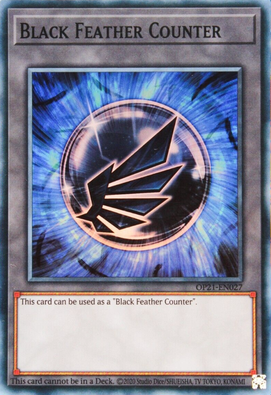 | A counter is a marker that may need to place on cards for some card effects[1]. |
- Counters themselves do not perform any effect[2].
- You cannot place counters unless a card effect allows it[1].
- Cards may have effects that change with the number of counters on them, or require you to remove counters as a cost[1].
- Some counters have specific names, such as "Spell Counter" or "Clock Counter." Other than their names, each individual counter itself does not have any effects[1].
- Counters cannot be placed on face-down cards. If a card that has counters placed on itself is flipped face-down, those counters are removed[2].
-
If counters that can only be placed on a particular card like itself are placed on a card that has its effects negated, those counters are removed[2].
Example: If a "Gateway to Chaos" that had Spell Counters placed on itself by its effect that says "Each time a Monster Card(s) is sent from the hand or field to the Graveyard, place 1 Spell Counter on this card for each of those cards" has its effects negated by an effect like "Silent Swordsman LV7", the Spell Counters are removed. -
If counters are placed on another card by an effect that places counters, even if the effects of that card are negated, the counters are not removed.
Example: Ice Counters placed by the effect of "Snowdust Giant" that says "reveal any number of WATER monsters from your hand, and place that many Ice Counters on face-up monsters on the field" are not removed if "Snowdust Giant" has its effects negated.
If there is a discrepancy between the basic rules and a card's effect, the card effect takes precedence. For example, a monster can only attack once per turn, but with a card effect, it is possible to attack twice.
References:Aside from Link Monsters, cards in the Monster Zones are placed on the field in either face-up Attack Position, face-up Defense Position, or face-down Defense Position.
- Link Monsters are always placed in face-up Attack Position in Monster Zones.
-
Unless stated otherwise, if an effect that says "change the battle position" is applied, the battle position is changed to one of the following battle positions:
- Face-up Attack Position ⇒ Face-up Defense Position
- Face-up Defense Position ⇒ Face-up Attack Position
- Face-down Defense Position ⇒ Face-up Attack Position (Flip Summon)
Monster Cards placed in a Monster Zone vertically and face-up are in face-up Attack Position.
- Monsters in face-up Attack Position can perform attack declarations during the Battle Step of the Battle Phase.
- If a face-up Attack Position monster battles, the ATK value of that monster is used to perform damage calculation.
Monster Cards placed in a Monster Zone horizontally and face-up are in face-up Defense Position.
- Face-up Defense Position monsters cannot perform attack declarations except in special occasions.
- If a face-up Defense Position monster battles, the DEF value of that monster is used to perform damage calculation.
Monsters placed on the field in a Monster Zone horizontally and face-down are in face-down Defense Position.
- The Monster Information of face-down Monsters like their card name/Level/Attribute/Type/Monster Type/Effect Text/etc. is private to the opponent. The controller of those cards can always verify face-down monsters.
- Face-down monsters are not affected by effects that change the card name, Type, Attribute, ATK/DEF, Level or Rank of monsters on the field.
- Face-down monsters cannot perform attack declarations.
- If a face-down Defense Position monster battles, it is changed to face-up Defense Position before damage calculation and the DEF value of that monster is used to perform damage calculation.
-
If a monster that needs to meet particular requirements must be sent to the Graveyard/returned to the hand/returned to the Deck/etc. in order to activate or resolve an effect like "send 1 [...]-Type monster to the Graveyard;", face-down monsters cannot be chosen as it is not possible for both players to verify that those conditions are met. However, if monsters that need to meet particular requirements must be Tributed for a Tribute Summon or to activate/resolve an effect, the controller of those face-down monsters can Tribute them.
Example: A face-down Plant-Type monster cannot be sent to the Graveyard as a cost to activate the effect of "Orea, the Sylvan High Arbiter" that says "You can send 1 Plant-Type monster from your hand or face-up from your side of the field to the Graveyard;". However, a face-down monster can be Tributed as a cost to activate the effect of "Pollinosis" that says "Tribute 1 Plant-Type monster;". -
Face-down monsters cannot be affected by the effects of cards that must target a monster that meets particular requirements like "target 1 [...]-Type monster".
Example: A face-down "Decoy Dragon" cannot be targeted to activate the effect of "Dragon's Rebirth" that says "Target 1 Dragon-Type monster you control;".
- During their Main Phase, once the turn player has priority and they do not wish to activate or resolve an effect, the turn player can choose to change the battle position of a monster on the field.
- You can change the battle positions of monsters any number of times per turn, but a single monster can only have its battle position changed once per turn. However, the number of times the battle position is changed by a card effect is not counted.
- A monster that performed an attack declaration cannot have its battle position changed during that turn.
-
The battle position of a monster is changed to one of the following battle positions depending on its previous battle position.
- Face-up Attack Position ⇒ Face-up Defense Position
- Face-up Defense Position ⇒ Face-up Attack Position
- Face-down Defense Position ⇒ Face-up Attack Position (Flip Summon)
| Examples | |

|
Pentestag
2 Effect Monsters |

|
Ookazi
Inflict 800 damage to your opponent. |

|
Dimension Wall
Activate only when an opponent's monster declares an attack. Instead of you, your opponent takes the Battle Damage you would have taken from this battle. |
- If damage is taken by an effect, that player's LP is reduced by that amount.
-
If LP is paid for a cost or LP is lost by an effect, this is not treated as taking damage.
Example: When you lose LP by the clause of "Soul Charge" that says "Special Summon them, and if you do, you lose 1000 LP for each monster Special Summoned by this effect.", the effect of "D/D/D Rebel King Leonidas" that says "You take no effect damage." cannot be applied. - an effect reads "inflict battle damage" like effects that say "when it attacks a Defense Position monster, inflict piercing battle damage to your opponent", that damage is treated as battle damage.
- For effects that make the opponent take the battle damage you would take, the battle damage that is exchanged is treated as battle damage.
Damage inflicted to the LP as a result of monsters battling is called battle damage. To reiterate:
- The damage taken by a player from a Defense Position monster is also battle damage.
- The damage from effects that say "inflict battle damage" is not treated as effect damage, and it is treated as battle damage.
The controller of a card is the player who is using that card.
For effects of cards, the player who activates that effect is the controller. When an effect resolves, "you/the opponent" is seen from the point of view of the controller of that effect.
Example: Even if you activate the effect of "Raiden, Hand of the Lightsworn" (1) that says " You can send the top 2 cards of your Deck to the GY" and the opponent activates "Enemy Controller" in a chain, taking control of (1), it is you, the player who activated the effect of (1), that resolves it.
- Cards you "control" are the cards in your Monster Zone, Spell & Trap Zone, Field Zone, and Pendulum Zone.
- Cards in your "possession" include all cards you control, plus the cards in your hand, Deck, Extra Deck, Graveyard, your banished cards, cards in the middle of being Summoned to your side of the field, and Xyz Materials attached to monsters you control.
If a player takes control of a card from their opponent, move it to the new controller's side of the field. If sent to the Graveyard, or returned to the hand or Deck, it is always returned to the Graveyard/hand/Deck of the original owner.
References:The number of cards in a player's hand and Decks, the cards in their Graveyards, and each player's current LP are all public knowledge and both players can verify these things at any time. If asked, you must answer these things to your opponent truthfully.
- You are allowed to pick up and verify the cards in your opponent's Graveyard but you must ask their permission first.
- You may not change the order of the cards when verifying their Graveyard.
If LP or ATK/DEF are halved by some effect, so that the result has decimal values, the calculation is rounded up.
Example: If you have 525 LP and you activate "Solemn Judgment" by paying half your LP, your remaining LP becomes 263.
If the ATK or DEF values are reduced by some effect and the final result would be equal or lower to 0, the value becomes 0. Also, if the reduced value would be referenced, the actual value that was modified is referenced.
Example: If a 1000 ATK monster would have its ATK reduced by 1400 by the effect of "Black-Winged Dragon" that says "that target loses 700 ATK for each Black Feather Counter you removed, and if it does, inflict damage to your opponent equal to the ATK lost by this effect.", the ATK of that monster becomes 0 as a result, and 1000 damage is inflicted to the opponent as a result.
References:To activate is to use a card or effect in a way that makes a Chain Link[1].
- Activating a card: when the card is placed face-up on the field[1].
- Activating an effect: when the effect of a card that is already face-up is activated[1].
Chains are a way to order the resolution of multiple card effects. They are used when the effects of more than 1 card are activated at once, or when a player wants to use an effect after a card has been played, but BEFORE that card has an effect on the game[2].
If a card's effect is activated, the opponent is always given a chance to respond with a card effect of their own, creating a Chain. If your opponent responds with an effect, then you can choose to respond and add another effect to the Chain. If your opponent does not respond, you may activate a second effect and create a Chain to your own card's activation. Both players continue to add effects to the Chain until they both wish to add nothing else, then you resolve the outcome in reverse order - starting with the last card that was activated[2].
As shown in the diagram, the first effect activated is Chain Link 1. The next effect is Chain Link 2, and so on. Every time a new Chain Link is made, they are stacked up in the order that the cards are activated. Once the Chain is completed, the outcome is resolved starting with the most recent card to be activated at the top of the Chain and proceeding down to Chain Link 1[2].
References:Every type of card effect has a Spell Speed between 1 and 3. If you want to respond to a card effect in a Chain, you have to use an effect with Spell Speed 2 or higher, and it cannot have a lower Spell Speed than the effect you are responding to. Spell, Trap, and Effect Monster effects have different Spell Speeds. There are Spell Speeds from 1 to 3. You can only respond with an effect if it is Spell Speed 2 or higher, and has an equal or greater Spell Speed than the effect on the Chain Link before it.
| Spell Speed 1 |
Includes:
|
| Spell Speed 2 |
Includes:
|
| Spell Speed 3 |
Includes:
|
You can only create a Chain by responding to the activation of a card or effect. Summoning a monster, Tributing, changing a monster's battle position and paying costs are not effect activations and therefore you cannot respond to those actions using a Chain.
References:Fast effects are card activations and effects with a Spell Speed of 2 or higher, including monster Quick Effects, Quick-Play Spell Cards, and Trap Cards (which includes both activating Trap Cards, and activating the effects of things like Continuous Trap Cards).
Fast effects can be activated by either player - even during their opponent's turn, as long as the conditions are appropriate. When both players want to activate fast effects at the same time, they are placed on a Chain.
Sometimes, it can make a big difference WHO places their fast effect on the Chain first: this can determine who "goes next".
- Usually, the turn player has the chance to "go next" and activate the next fast effect.
- However, during a Chain, the chance to go next passes back and forth between players.
- Also, if the turn player doesn't wish to take any actions, and instead wants to move along in the turn (for example, to the next Step or Phase), the opponent has an opportunity to go next, and activate a fast effect, before the turn proceeds.
Follow the chart to see which player can "go next" regarding fast effects.
References:Each Phase and Step starts with the turn player in box A of the chart listed below. This is when the game state is "open", meaning the turn player has complete freedom of action.
Many actions can ONLY be performed when the game state is open (when you're in box A). Examples:
- Normal Summon (including Tribute Summon)
- Set a card
- Perform a Special Summon that does not start a Chain (including Xyz Summon, Synchro Summon)
- Change a monster's Battle Position
- Attempt to move to the next Phase/Step
- Draw a card for your normal draw during the Draw Phase
- Declare an attack
- Activate an Ignition Effect
- Activate a Spell Speed 1 Spell Card
If the game state is "open", the turn player may perform any of the above actions that is appropriate. They can also choose to activate a fast effect, if they wish.
Whenever either player performs an action, the game state is no longer open, but "closed". If the game state is "closed", then only fast effects can be activated, dependent on Fast Effect Timing rules.
When nothing is going on, and neither player wishes to do anything, the game state goes back to being "open". Technically, this means:
- IF the Turn Player has the chance to activate the next fast effect
- AND the turn player passes to the opponent
- AND the opponent then passes back
- AND no Chain is currently being formed then the game state is open again.
If the game state is open, and the turn player chooses not to do anything, and the opponent waives the chance to activate a fast effect, and both players agree to have the turn proceed, then you move to the next Phase or Step.
| Status | Are we now in a Chain? | Who "goes next"? | Where are we on the chart? | |
| The game state is open. The turn player gets to take the next action, and can take any action that is appropriate for that phase/step. | No | Turn Player | A | |
|
After an action that does NOT start a Chain (Normal Summon/Set of a monster, Set a Card, Special Summon that does not start a Chain, declare an attack, change battle position, etc). |
If there is an effect that is triggered. | Yes | The player who did NOT activate the last effect on the Chain. | D |
| If there is no effect that can be triggered. | No | Turn Player | B | |
| If the Turn Player passes. | No | Opponent | C | |
|
Turn player activates a card or card effect (Spells, Traps, Spell/Trap effects, or Monster Card effects - of any Spell Speed) |
Yes | The player who did NOT activate the effect. | D | |
| After a Chain resolves | If there is an effect that is triggered. | Yes | The player who did NOT activate the last effect on the Chain. | D |
| If there is no effect that can be triggered. | No | Turn Player | B | |
| If the Turn Player passes. | No | Opponent | C | |
| Turn player passes | No | Opponent | E | |
The turn player always starts with Priority, or the choice to activate a card first, in each phase or step of their turn. As long as the turn player has Priority, the opponent cannot activate cards or effects, except for effects that activate automatically, like Trigger or Flip effects. The turn player can either:
- Use Priority to play a card or activate an effect
- Pass Priority to the opponent so they can activate an effect.
A player must pass Priority to the opponent when moving on to the next phase or step. Strictly speaking, you would always declare that you're passing Priority before the end of every phase and step, and ask your opponent if they wish to play a card. However, for ease of play, announcing the end of your phases or steps implies giving up Priority. Therefore, when announcing the end of a phase, your opponent can just say "Before the end of your phase, I activate this card" and use a card.
- The turn player starts with Priority to activate a card or effect first
- After a card's activation, and at the end of each phase or step, Priority passes to the opponent.
For cases like "Each player targets 1 monster," where both players resolve an effect simultaneously, the turn player resolves the effect first. In this example, after the turn player makes their selection, the other player makes theirs.
References:If effects of Spell Speed 1 cards (like Trigger Effects) are activated at the same time, they will be resolved in a special Chain. This Chain is made starting with the turn player's mandatory effects. If there is only 1 effect, that will be Chain Link 1[1].
If there are 2 or more effects:
- The turn player builds the Chain starting with their mandatory effects, in any order[1].
- Then the opponent continues the Chain with their mandatory effects in any order[1]. If the turn player has a mandatory quick effect, it is placed in the Chain immediately as the next Chain Link[2].
- Afterwards, the turn player adds their optional effects in any order[1].
- And finally the opponent adds their optional effects in any order[1].
- Official rulebook page 50
- YGOrg Database of Official OCG Rulings: "Light and Darkness Dragon", "Sangan", "Dandylion"
Normally, your Deck (including Extra Deck and Side Deck) can contain up to 3 copies of a card that has the same name. However, certain cards have specific quantity restrictions that further limit the number that can be included in a Deck. There are 3 types of restrictions:
- Limited cards are restricted to 1 copy in a Deck
- Semi-Limited cards are restricted to 2 copies in a Deck
- Forbidden cards are not allowed to be included at all
The list of Forbidden and Limited cards is updated regularly and is posted on the Yu-Gi-Oh! TCG Official Website. This list is applied to official tournaments so please check it before participating. Official Website: www.yugioh-card.com
References:A single game is called a Duel, and a Duel ends when one player wins or the game ends in a draw. Duels are played in sets of 3 called a Match, and the winner of best 2-out-of-3 wins the Match.
A Duel progresses in a series of turns which are divided into phases
Each player starts a Duel with 8000 LP (Life Points)[1]. You win a Duel if:
- You reduce your opponent's LP to 0.[1]
-
If your opponent is unable to draw a card[1].
Even if an effect that makes the player add cards from the Deck to the hand, or send cards from the Deck to the Graveyard, or something similar is activated when there are no cards left in the Deck, this only causes the effect to become unable to resolve but the player is not defeated[2] - If a card's special effect says you win (alternate victory conditions)[1].
Both players have 8000 LP when the Duel begins.
- LP is reduced through taking damage by battles or card effects.
- When the respective opponent of a player has their LP become 0 by battle damage or effects, that player wins the Duel.
- If you take damage by battle or card effects, or if you lose LP by an effect so that your LP is lower than 0, the LP do not become negative and they become 0.
- If LP is paid to activate a card or effect, you cannot pay more LP than your remaining LP. If the LP becomes exactly 0, the cost can be paid.
- If the LP becomes 0 during the resolution of an effect or a chain, even if it is known that there is an effect that would restore LP or something similar that would make the LP become 1 or higher, the player loses at the time the LP becomes 0.
Text that directly affects the state of the game like "you win the Duel" or "you win the Match" is text that is not an effect[1].
-
Even if those conditions are met during the resolution of an effect, if those conditions are not met after all the parts of the effect finish resolving, a victory cannot be declared[1].
Example: If the condition for "Exodia the Forbidden One" that says "If you have "Right Leg of the Forbidden One", "Left Leg of the Forbidden One", "Right Arm of the Forbidden One" and "Left Arm of the Forbidden One" in addition to this card in your hand, you win the Duel" is met when cards are drawn by the effect of "Graceful Charity" that says "Draw 3 cards, then discard 2 cards", if the condition is not met after resolving the effect of "Graceful Charity" that says "then discard 2 cards", a victory cannot be declared[2]. -
If those conditions are met during the resolution of a chain, a victory can be declared after each resolution[1][3].
Example: If you meet the Victory Condition of "Exodia the Forbidden One" by activating the effect of "Jar of Greed" that says "Draw 1 card" in a chain to the activation of the opponent's "Mind Crush", the effect of "Mind Crush" is not applied afterwards and you win the Duel[1].
- OCG Perfect Rulebook 2017 page 179
- YGOrg Database of Official OCG Rulings: "Exodia the Forbidden One", "Graceful Charity"
- YGOrg Database of Official OCG Rulings: "Exodia the Forbidden One", "Graceful Charity", "Magical Thorn"
The Duel is declared a draw if:
- If you and your opponent both reach 0 LP at the same time[1]
- Both players resolve a single effect that makes them draw when neither player has cards in the Deck[2]
This is the first phase.
- The turn player must draw 1 card from the top of their Main Deck at the beginning of the Draw Phase[1]. This is called the normal draw[2].
- The player who goes first cannot perform their normal draw during the Draw Phase of their first turn[1].
- Neither player can activate cards before the turn player draws a card during the Draw Phase. As a result, no effects can be activated can be activated until a card is drawn, except for effects that have already been applied. As an exception, effects that say they resolve "instead of your normal draw", or say they are activated or resolved "before drawing", can be activated or resolved[2].
- After the turn player draws a card, if a player wants to activate a card, the turn player can activate cards first[2].
- If there are no cards in the Deck and the player must draw but is unable to, that player loses[1].
- If both players pass the priority to activate cards, the Draw Phase ends, and afterwards, the Standby Phase begins[2].
Some cards have effects that activate, or costs you must pay, in the Standby Phase[1].
- If a player wishes to activate cards, the turn player can activate cards first[2].
- If effects activate or apply in the Standby Phase, in most cases they resolve starting from the turn player. Furthermore, if a player wants to activate a card or effect that has no specific activation timing like "Mystical Space Typhoon", they can also be activated or resolved in any order[2].
- If both players pass the priority to activate cards, the Standby Phase ends and Main Phase 1 begins[2].
- If a Trigger Effect that activates in the Standby Phase has its activation negated, it cannot be activated again afterwards[2].
This is when you play most of your cards: you can Normal Summon, Set, or change the battle position of a monster, activate a card's effect, and Set Spell and Trap Cards. These actions can be done in any order you want, but some actions have restrictions[1]. The turn player:
- Can activate cards or effects that say "at the start of Main Phase 1" when the Main Phase 2 begins. These cards or effects can only be activated as the first activation of the turn player in Main Phase 1[2].
- Can Summon or Set a monster. There is no limit to the number of times you can Flip Summon or Special Summon during a turn, but you can only Normal Summon or Set a monster (including a Tribute Summon) once per turn[1].
- Can change their Monster's Battle Position. This includes Flip Summoning a monster, or changing the position of a face-up monster to face-up Attack or Defense Position[1]. You can change the position of each monster you control, except in three cases:
- Can Activate a Card or Effect. You can activate Spell and Trap Cards, or the effects of Spell, Trap, or Effect Monster Cards as many times as you want during this phase, as long as you can keep paying any costs involved[1].
- Can Set Spell and Trap Cards. You can Set Spell and Trap Cards face-down in your Spell & Trap Zone during this phase, as long as you have space[1].
- After both players pass the priority to activate cards and the Main Phase ends, the turn player can choose to conduct the Battle Phase or to conduct the End Phase[2].
Now it's time to battle with your Monster Cards!
- You do not have to conduct a Battle Phase every turn, even if you have a monster on the field.
- The player who goes first cannot conduct their Battle Phase on their first turn.
- The Battle Phase is split into 4 steps and is conducted in the order shown in the diagram. The Battle Step and Damage Step are repeated each time you attack with a monster.
This step starts the Battle Phase. The turn player should announce "I'm entering the Battle Phase." Remember, the player who goes first cannot conduct a Battle Phase in their very first turn.
References:Select 1 monster on your side of the field to attack with, and 1 of your opponent's monsters as your attack target, and then declare the attack. If your opponent does not have any monsters on the field, you can attack directly. Play then proceeds to the Damage Step. Afterwards, the attacking player returns to the Battle Step, and repeats this procedure[1].
- Each face-up Attack Position monster you control is allowed 1 attack per turn[1]. If the attack was negated, the monster cannot perform another attack in the same turn, in most cases[2].
- You do not have to attack with a monster if you don't want to[1].
An attack declaration is performed in the following sequence:
-
Choose 1 of your face-up Attack Position monsters to perform an attack.
- If the opponent controls monsters, choose a monster as an Attack Target.
- If the opponent does not control any monsters, declare a direct attack on the opponent.
- After declaring an attack, the effects that activate/apply when an attack is declared or when a monster is targeted for an attack are activated and resolved starting from the turn player. After all cards are resolved, if a player wishes to activate an effect, the turn player can activate effects first.
-
Cards that say they can be activated "when an attack is declared" can only be activated at the timing in which an attack is declared. Multiple effects that activate "when an attack is declaraed" can be activated providing they form a chain.
Example: If a "Sakuretsu Armor" activated when an opponent's monster declared an attack would be negated by "Dark Bribe" or similar, if the chain that responds to the attack declaration and its effects finish resolving, cards that activate "when an attack is declared" like "Sakuretsu Armor" or "Mirror Force" cannot be activated afterwards. - If no more attacks are performed by monsters, conduct the End Step.
- After an attack is declared and both players pass the priority to activate cards, the Battle Step ends and the Damage Step begins. However, if after attack declaration the attack is negated, or the attacking monster is changed to Defense Position during the Battle Step, so that it is not possible to continue with the battle, the Damage Step does not begin and damage calculation is not performed.
After you've announced your attacking monster and the attack target monster during a Battle Step, the attack target might be removed from the field, or a new monster may be played onto the opponent's side of the field before the Damage Step, due to a card's effect. This causes a "Replay". When this occurs, you can choose to attack with the same monster again, or choose to attack with a different monster, or choose not to attack at all[1].
Note that if you attack with a different monster, the first monster is still considered to have declared an attack, and it cannot attack again this turn[1].
- Even if 1 monster leaves the field by the resolution of an effect and then 1 monster is Special Summoned, or something similar, so that the number of monsters does not increase or decrease, this is still treated as the number of monsters changing[2].
- If the number of monsters that the player who performed the attack declaration controls increases or decreases, a replay is not triggered[2].
- If a replay is triggered, an attack target is chosen to be attacked with that attacking monster[2].
- At the timing an attack target is chosen, is is possible to choose none and stop the attack. Even in that case, the monster is treated as performing an attack declaration and it cannot attack during the same Battle Phase[2].
-
If a replay is triggered, when an attack target is chosen, this is not treated as "when an attack is declared".
Example: After a monster you control performs an attack declaration, the opponent activated "Call of the Haunted" and Special Summoned a monster. You choose to attack the Special Summoned monster as a result of the replay, but at that time, the opponent cannot activate cards that activate "when an attack is declared" like "Mirror Force". - After a monster that can declare a direct attack by a card effect declares a direct attack, if that monster becomes unable to declare a direct attack during that Battle Step by the effect of another card, a replay is triggered[2].
-
After performing an attack declaration on a monster, if it becomes impossible to attack that monster during the Battle Step, a replay is triggered[2].
Example: If an attack is performed on an opponent's face-up monster while the effect of "Ghostrick Mansion" that says "Monsters cannot attack face-down Defense Position monsters, but can attack directly if all monsters their opponent controls are face-down Defense Position" is being applied, if "Book of Moon" is activated so that the opponent's monster that was targeted for an attack is changed to face-down Defense Position, a replay is triggered, and if the opponent does not control any other face-up monsters, you can choose to perform a direct attack or stop the attack. -
If the number of monster changes during the resolution of an effect or chain, a replay is triggered after all those effects finish resolving[2].
Example: If, at the time you declare an attack, the opponent activates "Sakuretsu Armor" (1) and activates "Call of the Haunted" (2) in a chain, a monster is Special Summoned to the opponent's side of the field by (2), but since the chain is still resolving, (1) resolves before triggering a replay. As a result, your monster is destroyed by (1) and a replay is not triggered. - If there are effects that activate when a monster is Normal or Special Summoned, a replay is triggered after those effects finish resolving[2].
- Replays can only be triggered during the Battle Step. If the number of monsters changes during the Damage Step, a replay is not triggered[2].
In this step, the players calculate the result of the battle and whatever damage is done. After finishing the Damage Step, return to the Battle Step[1].
Even if the number of monsters the opponent controls changes during the Damage Step, a replay is not triggered[2].
References:You calculate battle damage based on the battle position of the monster you are attacking. If you attack an Attack Position monster, compare ATK vs. ATK. If you attack a Defense Position monster, compare your monster's ATK vs. the attacked monster's DEF.
| ATK. of the attacking Monster VS. ATK of Opponent's Monster | |
| WIN | When your attacking monster's ATK is higher than the ATK of the opponent's monster, the attacking monster destroys the opponent's monster and sends it to the Graveyard. The amount that your attacking monster's ATK exceeds the ATK of your opponent's monster is subtracted from your opponent's LP as battle damage. |
| TIE |
When your attacking monster's ATK is equal to the ATK of the opponent's monster, the result is considered a tie, and both monsters are destroyed. Neither player takes any battle damage.
Monsters with 0 ATK cannot destroy anything by battle. If two Attack Position monsters with 0 ATK battle each other, neither monster is destroyed. (Official rulebook page 50) |
| LOSE | When your attacking monster's ATK is lower than the ATK of the opponent's monster, the attacking monster is destroyed and sent to the Graveyard. The amount that the opponent's monster's ATK exceeds the ATK of your attacking monster is subtracted from your LP as battle damage. |
| ATK. of the attacking Monster VS. DEF of Opponent's Monster | |
| WIN | When your attacking monster's ATK is higher than the DEF of the opponent's monster, the attacking monster destroys the opponent's monster and sends it to the Graveyard. Neither player takes any battle damage. |
| TIE | When your attacking monster's ATK is equal to the DEF of the opponent's monster, neither monster is destroyed. Neither player takes any battle damage. |
| LOSE | When your attacking monster's ATK is lower than the DEF of the opponent's monster, neither monster is destroyed. The amount that the opponent's monster's DEF exceeds the ATK of your attacking monster is subtracted from your LP as battle damage. |
If there are no monsters on your opponent's side of the field, you can attack directly. The full amount of your attacking monster's ATK is subtracted from the opponent's LP as battle damage.
References:There are five distinct timings within the Damage Step.
- Start of the Damage Step
- Before damage calculatin
- Damage calculation
- After damage calculation
- End of the Damage Step
| Sequence | What happens | What can/cannot activate | What can/cannot apply |
| Start of the Damage Step |
✔️ "at the start of the Damage Step" ("without applying damage calculation" old texts)[1] ✔️ Spell/Trap Cards and Quick/Quick-like Effects that directly alter the ATK/DEF[2][3] |
✔️ "during the Damage Step (only)"[1] | |
| Before damage calculation |
|
✔️ "before damage calculation"[1] ✔️ Spell/Trap Cards and Quick/Quick-like Effects that directly alter the ATK/DEF[2][3] ❌ Effects that activate when a monsters is flipped face-up: won't activate as well after damage calculation if the flipped monster itself leaves the Monster Zone before then ("Drillroid" will destroy without triggering Flip effects)[2][3] |
✔️ If a monster is flipped face-up and it has a Continuous Effect, then typically that Continuous Effect is applied immediately, such as the effects of monsters like "Star Boy" and "Jinzo"[4][5] ❌ Continuous Effect that would prevent the flipped monster from being targeted for attacks are not relevant at this time, since the monster has already been targeted as an attack target[6]. If the monster survives the Damage Step, its effect will prevent itself from being targeted by any future attacks ❌ Continuous Effects that would prevent the flipped monster from being attacked or the attacking monster from attacking (such as the effects of "Machina Sniper" and "Big-Tusked Mammoth") do not apply at this time, since the Battle Step is already over[7][8]. If the monster survives the Damage Step, its effect will protect itself from any future attacks ❌ Continuous Effect that destroys itself under certain conditions that are currently met (such as "Giant Kozaky", "Zombie Mammoth", etc)., the monster is not destroyed yet and the Damage Step proceeds normally, until after damage calculation[9][10]. The same applies if "Rivalry of Warlords" or "Gozen Match", or if there is an active 'Unclassified Effect' (belonging either to the flipped monster or another face-up monster) that states "You can only control 1 [...]" or "There can only be 1 [...] on the field"; the appropriate actions are determined and performed after damage calculation[11][12] |
| Perform damage calculation |
|
✔️ "during damage calculation"[1] ❌ Effects that activate when a monsters is flipped face-up: won't activate after damage calculation if the flipped monster itself leaves the Monster Zone before then ("Drillroid" will destroy without triggering FLIP effects) ❌ Spell/Trap Cards and Quick/Quick-like Effects that directly alter the ATK/DEF[2][3]. In general, they can no longer be activated at this point or for the rest of this Damage Step |
✔️ "during damage calculation (only)", applied immediately |
| After damage calculation |
|
✔️ "after damage calculation"[1][3] ✔️ "this card battles" or "attacks or is attacked"[1] ✔️ If a player takes battle damage such as "Don Zaloog"[1] ✔️ If a monster is flipped face-up (including Flip effects)[1] |
✔️ If a monster with a Continuous Effect that destroys itself under certain conditions ("Giant Kozaky", "Zombie Mammoth", etc). survives damage calculation without being determined to be "destroyed by battle", that Continuous Effect will immediately apply at this point and destroy that monster if those conditions are still met[9] ✔️ If a monster was flipped face-up during the Damage Step and "Rivalry of Warlords"/"Gozen Match" is still active, if that monster has a Attribute/Type that conflicts with another monster already face-up on the field, the flipped monster will immediately be sent to the Graveyard at this point[12] ✔️ If a monster was flipped face-up during the Damage Step and its name conflicts with another monster that is already face-up on the field, as defined by an 'Unclassified Effect' that states "You can only control 1 [...]" or "There can only be 1 [...] on the field" (belonging either to the flipped monster or another face-up monster), the flipped monster will be immediately destroyed[11] |
| End of the Damage Step |
|
✔️ "at the end of the Damage Step"[1] ✔️ When/if a monster is destroyed by battle[1] ✔️ When/if a monster destroys another monster by battle[1] |
- Official KONAMI's damage step rules
- Official rulebook Version 10
- OCG Perfect Rulebook 2017 pages 188-193
- "Goblin King" ruling, archived from the original
- "Embodiment of Apophis" ruling, archived from the original
- "Morphtronic Magnen" ruling, archived from the original
- "Big-Tusked Mammoth", ruling, archived from the original
- "Machina Sniper" ruling, archived from the original
- "Giant Kozaky" ruling, archived from the original
- "Zombie Mammoth" ruling, archived from the original
- "Amazoness Tiger" ruling, archived from the original
- "Rivalry of Warlords" and "Gozen Match" rulings, archived from the original
- "Dark Cat with White Tail" ruling, archived from the original
- "Kangaroo Champ" ruling, archived from the original
- "Ancient Gear Golem" ruling, archived from the original
- "Infernoid Devyaty" ruling
- "Wall of Illusion" ruling, archived from the original
- "Wattsquirrel" ruling, archived from the original
- "Blackwing - Boreas the Sharp" ruling, archived from the original
- "Ally of Justice Unknown Crusher" ruling, archived from the original
- "Red Dragon Archfiend" ruling, archived from the original
- "Stardust Dragon" ruling, archived from the original
- "Doomcaliber Knight" ruling, archived from the original
- Yugipedia
✔️ Mandatory effects[3]
✔️ Fast effects that negate the activation of a card(s), or negate the activation of an effect(s)[3][4][5]
✔️ Spell/Trap Cards and Quick/Quick-like Effects that directly alter the ATK/DEF of a monster(s), but only up until damage calculation. During damage calculation or afterwards in the Damage Step, they cannot be activated[2][3]
✔️ These cards and effects do not have to affect a battling monster; they can be used during the Damage Step to affect the ATK/DEF of a monster(s) that is not currently battling[6]
❌ Optional Spell/Trap Cards and Quick/Quick-like Effects that can indirectly change the ATK/DEF of a monster (such as "Reverse Trap" or "Skill Drain") cannot be activated during the Damage Step for that reason alone[7][8]
✔️ Trap Cards that equip themselves to monsters and have Continuous-like Effects that directly alter the ATK/DEF of the equipped monster, such as "Horn of the Phantom Beast", can be activated during the Damage Step for that reason alone[9]
❌ Cards like "Half or Nothing", which might not alter ATK/DEF at resolution, cannot be activated during the Damage Step for that reason alone[10]
❌ Cards such as "Powerful Rebirth" and "Reverse of Neos", which Special Summon a monster and exclusively modify the ATK/DEF of that Summoned monster, cannot be activated during the Damage Step for that reason alone[11]
✔️ If a Set Continuous Trap Card has an optional Quick-like Effect that directly alters the ATK/DEF of a monster(s) (such as "Attack of the Cornered Rat"), that Trap Card can be activated during the Damage Step until damage calculation, but only if that Quick-like Effect is activated and resolved in the same Chain Link as the activation of the Trap Card itself[12]
✔️ Continuous Trap Cards with Continuous-like Effects that directly alter the ATK/DEF of a monster(s), such as "Fire Formation - Kaiyo", can be activated during the Damage Step until damage calculation[13]
✔️ Such Trap Cards can be activated even if their relevant Continuous-like Effect would not affect any monsters, such as activating "Dark Contract with the Witch" during your own turn or while you control no Fiend-Type monsters, or activating "Unpossessed" when a monster other than a "Familiar-Possessed" monster is attacking
✔️ Such Trap Cards can be activated even if their relevant Continuous-like Effect only applies an ATK/DEF change under particular conditions and those conditions are not currently met (such as activating "Chosen of Zefra" while there are fewer than 3 "Zefra" monsters face-up in your Extra Deck), unless that condition could never be met during the Damage Step (such as "Swift Samurai Storm!")[14]
❌ Even if a Continuous Trap Card can be activated during the Damage Step due to having a Continuous-like Effect that alters ATK/DEF, if it also has a Quick-like Effect that can be activated in the same Chain Link as the activation of the Trap Card itself (such as "Dark Contract with the Witch"), that Quick-like Effect cannot be activated at the same time as the Trap Card's activation during the Damage Step, unless it has another valid reason allowing it to be activated during the Damage Step[15]
❌ Unique exceptions are "Evil Blast"[16], "Scrap Sheen"[17] (TCG only), "Zero Force"[18], "Curse of Anubis"[19], and the Quick-like Effect of "Rocket Hand"[20], which have rulings stating that they cannot be activated during the Damage Step.
❌ Unlike Quick/Quick-like Effects, having the effect of directly altering the ATK/DEF of a monster(s) does not permit optional Trigger/Trigger-like Effects to be activated during the Damage Step, with examples being "Morpho Butterspy"[21]and "Performapal Turn Toad"
✔️ Optional Trigger and Trigger-like Effects (if that effect activates in response to the card itself being moved to a different location including leaving the field, being flipped face-up including Flip effects, or having its battle position changed[3][22]) can be activated during the Damage Step, unless the effect performs a Normal[23]or Fusion Summon[24]
❌ In general, other optional Trigger and Trigger-like Effects that have activation conditions that can be met both during and outside the Damage Step cannot be activated. For cards that have Problem-Solving Card Text, these normally state "(except during the Damage Step)" (for example "Fallen of Albaz") in their activation conditions. Otherwise, these effects are associated with activation conditions that involve actions regarding other cards, such as "When/If a ... is destroyed", "When/If a ... is added from ... to your hand", "When/If a ... monster is Special Summoned", etc. of cards like "Revival Rose", "Ambulanceroid", and "Cyber Dinosaur". This includes Trigger Effects of monsters that can activate in response to actions involving itself and/or other cards (but not just itself or other cards), such as "Madolche Chickolates"; they cannot be activated during the Damage Step.
✔️ Any effect that specifically mentions an activation timing that is unique to the Damage Step
✔️ This is indicated by phrases in the text such as "During damage calculation", "At the end of the Damage Step", "If/When you take battle damage", etc. (this includes cards and effects that activate in response to damage, without specifying battle damage, like "Blackfeather Darkrage Dragon", "Attack and Receive", and "Numinous Healer")
✔️ If a Set Continuous Trap Card has an optional Trigger-like or optional Quick-like Effect with an activation timing at least partially specific to the Damage Step (such as "Yang Zing Creation" and "Damage = Reptile"), that Trap Card can be activated during the Damage Step if that Trigger-like/Quick-like Effect is also activated in the same Chain Link as the activation of the Trap Card itself[25]
❌ In contrast, if a Set Continuous Trap Card has a mandatory Trigger-like Effect with an activation timing at least partially specific to the Damage Step, the Trap Card itself cannot be activated, even if its controller intended on activating that Trigger-like Effect in the same Chain Link as the activation of the Trap Card itself[26]
A card only needs to meet one of the above requirements to be activated during the Damage Step. As long as it does not explicitly specify (except during the Damage Step), even if it fails to satisfy one of the above requirements, if it satisfies another one it can be activated during the Damage Step. For example, "Rope of Life" Special Summons a monster and exclusively changes the ATK of the Summoned monster (like "Reverse of Neos"); cards with such effects cannot be activated during the Damage Step for that reason alone, but since "Rope of Life" also has an activation timing that is unique to the Damage Step ("When a monster(s) is destroyed by battle and sent to your Graveyard:"), it can be activated during the Damage Step[27].
References:- Official KONAMI's damage step rules
- Official rulebook Version 10
- OCG Perfect Rulebook 2017 pages 188-193
- "Legendary Six Samurai - Shi En" ruling, archived from the original
- "Stardust Dragon" ruling, archived from the original
- "Blackwing - Bombardment" ruling, archived from the original
- "Reverse Trap" ruling, archived from the original
- "Skill Drain", archived from the original
- "Horn of the Phantom Beast" ruling, archived from the original
- "Half or Nothing" ruling, archived from the original
- "Infernal Dragon" and "Reverse of Neos" rulings, archived from the original
- "Attack of the Cornered Rat" ruling, archived from the original
- "Token Stampede" ruling, archived from the original
- "Swift Samurai Storm!" ruling, archived from the original
- "Dark Contract with the Witch" ruling
- "Evil Blast" ruling, archived from the original
- "Scrap Sheen" ruling, archived from the original
- "Zero Force" ruling, archived from the original
- "Curse of Anubis" ruling
- "Rocket Hand" ruling
- "Morpho Butterspy" ruling
- "Yubel" ruling, archived from the original
- "Proof of Pruflas" ruling
- "Fall of Albaz" ruling
- "Desperate Tag" ruling, archived from the original
- "Howl of the Wild" ruling, archived from the original
- Yugipedia
8.5.3.4 End of the Damage Step still occurs even if damage calculation was never conducted: "having attacked"
A card whose effect reads "at the end of the Damage Step" can be activated even if damage calculation has not been conducted and Before Damage Calculation has been reached[1].
Also if an attack progresses until the Damage Step, that attacking monster is treated as "having attacked"[2].
Example: An attack was declared with "Dante, Traveler of the Burning Abyss" on an opponent's monster and the attack progressed until the Damage Step. Afterwards, even if the opponent's monster disappears and damage calculation is not performed, the effect that says "If this card attacks, it is changed to Defense Position at the end of the Battle Phase" is applied at the end of the Battle Phase.
- YGOrg Database of Official OCG Rulings: "Number C5: Chaos Chimera Dragon", "Reflect Bounder", "Divine Wrath"
- OCG Perfect Rulebook 2017 page 188
A card whose effect reads "if (1) you control would be destroyed by battle, you can do (2)" can be applied when performing damage calculation:
- If you choose to apply the effect, immediately after damage calculation do (2), which can be banishing a card, detach a material for effect...
- If you choose not to apply the effect, you can now use any effects that can be activated after damage calculation.
- YGOrg Database of Official OCG Rulings: "Bujintei Kagutsuchi", "Zoodiac Whiptail"
After you've resolved all your battles by repeating the Battle and Damage Steps, and you have no more monsters you want to attack with, announce to your opponent that you are ending your Battle Phase[1].
- This step is the end of the Battle Phase[2].
- If an effect is applied "at the end of the Battle Phase", the End Step begins[2].
- If players want to activate a card, the turn player can activate cards first[2].
- If effects are activated or applied in the End Step, in most cases they are resolved by the turn player first. Furthermore, if a player wants to activate a card or effect that has no specific activation timing like "Mystical Space Typhoon", they can also be activated or resolved in any order[2].
- Effects that are applied "until the end of the Battle Phase" or "during the Battle Phase" are applied until both players pass the priority to activate cards during the End Step and after all cards finish resolving[2].
- If both players pass the priority to activate cards, the End Step ends, and then Main Phase 2 begins[2].
If you conducted your Battle Phase, your turn moves to Main Phase 2 afterwards[1].
- Main Phase 2 can only be conducted after the Battle Phase ends[1][2].
- The same actions that can be conducted in Main Phase 1 can be conducted in Main Phase 2[1][2].
- If an action that can only be conducted once per turn like Normal Summoning/Setting or Pendulum Summoning has been performed during Main Phase 1, it cannot be performed during Main Phase 2[1][2].
- If both players pass the priority to activate cards, the Main Phase 2 ends and the End Phase begins[2].
Announce the end of your turn, and if there are any cards on the field which say "...during the End Phase..." in their text, resolve those effects in this phase. If you have more than 6 cards in your hand at the end of this phase, select and discard cards to the Graveyard until you only have 6 cards in your hand[1].
- In most cases, effects that activate or apply during the End Phase can be resolved first by the turn player. Furthermore, if a player wants to activate a card or effect that has no specific activation timing like "Mystical Space Typhoon", they can also be activated or resolved in any order[2].
-
If both players pass the priority to activate cards, the turn player must activate and resolve effects that activate mandatorily or that must be resolved during the End Phase first[2][3].
Example: You took control of an opponent's "Orichalcos Shunoros" (1) that was Special Summoned during their turn by "A Wild Monster Appears!" (2) by activating "Creature Swap", and then you activated "Limiter Removal" (3) to double its ATK. During the End Phase of that turn, first, the turn player can choose to apply the effect of (3) that says "During the End Phase, destroy those monsters". If it is applied, (1) is destroyed and the effect of (2) that says "also shuffle it into the Deck during your opponent's next End Phase" is not applied. Otherwise, if the turn player does not apply the effect of (3), the opponent can choose to apply the effect of (2). If it is applied, (1) is returned to the owner's Deck, but if it is not applied, the effect of (3) is applied mandatorily and (1) is destroyed as a result. - Trigger Effects that activated during the End Phase that have their activation negated cannot be activated again afterwards[2].
-
Once both players pass the priority to activate cards and all cards have finished resolving, if the turn player has 7 or more cards in their hand, they choose and discard cards from their hand until they have 6 cards in their hand. Cards discarded at this time are treated as being "discarded from the hand" and "sent from the hand to the Garveyard". However, they are not treated as being "discarded by an effect" or "sent to the Graveyard by an effect"[2].
Example: If the turn player has 7 cards in their hand during the End Phase and they discard "Grapha, Dragon Lord of Dark World" to reduce the hand size to 6 cards, the effect that says "If this card is discarded to the Graveyard by a card effect" does not activate. Also, if "Gem-Knight Obsidian" is discarded, its effect that says "If this card is sent from the hand to your Graveyard" activates. - Effects that say "until the end of the turn" are applied until both players have passed the priority to activate cards, have finished adjusting the hand size, and finished all the resolutions during the End Phase[2].
- After the End Phase is over, the Draw Phase of the opponent's turn begins[2].
- Official rulebook page 40
- OCG Perfect Rulebook 2017 pages 195-196
- YGOrg Database of Official OCG Rulings: "Mystic Mine", "Winged Dragon of Ra - Sphere Mode"
In most cases, card texts break down the requirements to resolve the effect like costs and the effect that is applied during the resolution.
Example: For "Puppet Master", "When this card is Tribute Summoned:" is the activation timing, "You can pay 2000 Life Points" is the activation cost, "2 Fiend-Type monsters in your Graveyard" are the targets, and "Special Summon those targets. They cannot attack this turn." is the effect resolution.
| Requirements | Resolution |
| Timing: When this card is Tribute Summoned | Special Summon those targets. They cannot attack this turn |
| Cost: You can pay 2000 Life Points | |
| Targets: 2 Fiend-Type monsters in your Graveyard |
Problem-Solving Card Text (often abbreviated PSCT) is a method of writing card text used for prints released from July 8, 2011 onward. The purpose of Problem-Solving Card Text is to specify card effects to the point that most situations can be resolved by logically interpreting the card text[1].
Problem-Solving Card Text uses specific words with very particular meanings in the context of gameplay. How to interpret the text is important to understanding how to apply card text to the game.
This interpretation can only be applied for cards that use Problem-Solving Card Text. Cards that were printed with earlier text may use some of the same terms or structures, but this does not necessarily mean that they work as if they were Problem-Solving Card Text.
-
All card effects that make a Chain Link include a colon ":" or a semicolon ";" somewhere in their text (possibly both). If a card effect does not use either, it does not make a Chain Link[3].
- The activation of a Spell or Trap Card always makes a Chain Link, but its effect that resolves with the card itself (if any) does not necessarily use a colon or semicolon[3]. This effect is usually the first effect listed in the card's text.
-
Text before the colon ":" describes activation conditions (limits on when or how often a card or effect can be activated[3][7]). These conditions only need to be met when the card is activated[4].
- Conditions other than target requirements that have to be met during both activation and resolution are specifically noted in a separate sentence after the effect sentence (e.g. "Zombie Master", "Treeborn Frog")[4].
- Text before the semicolon ";" (but after the colon, if any) describes anything that happens when that card or effect is activated (such as costs and targeting[3][7]).
- Built-In Special Summons (other than Synchro, Xyz, Pendulum, or Link) are denoted by parentheses "()" stating the location from which the monster can be Special Summoned[5].
-
Cards with bulleted effects (●) that resolve in the same Chain Link specify whether they resolve simultaneously or sequentially (if sequentially, effects are applied in the order they are listed). In these cases, each effect activated resolves independent of the success of the other(s).
- The text "in sequence" indicates that the bulleted effects are applied sequentially (e.g. "Gravekeeper's Oracle", "Advance Zone").
- The text "(simultaneously)" indicates that the bulleted effects are applied simultaneously (e.g. "Ryko, Lightsworn Hunter", "Kunai with Chain").
- If neither is specified, the effects each make separate Chain Links (e.g. "Metaphys Horus").
- "Problem-Solving Card Text, Part 1: Reading the Card's of Tomorrow", archived from the original
- "Problem-Solving Card Text, Part 2: New Words & Phrases", archived from the original
- "Problem-Solving Card Text, Part 3: Conditions, Activations, and Effects", archived from the original
- "Problem-Solving Card Text, Part 4: The Clues on Your Cards", archived from the original
- "Problem-Solving Card Text, Part 5: Special Summons", archived from the original
- "Problem-Solving Card Text, Part 7: 2012 Update - Conjunction Functions", archived from the original
- Official rulebook Version 10
- Yugipedia
The conjunctives "and", "and if you do", "also", and "then" have specific meanings[1]:
- In "Do A, then do B", B happens after A. These things happen in sequence, not simultaneously. A is required for B, but NOT vice-versa: if A does not happen, then stop; even if B cannot happen, you still do A[1].
- In "Do A and B", both A and B happen simultaneously. BOTH A and B are required. If you cannot do both, you do nothing[1].
- In "Do A, and if you do, do B", both A and B happen simultaneously. A is required for B, but NOT vice-versa: if A does not happen, then stop; even if B cannot happen, you still do A[1].
- In "Do A, also do B", both A and B happen simultaneously. Neither is required for the other to occur[1].
- In "Do A, also, after that, do B", B happens after A. These things happen in sequence, not simultaneously. Neither is required for the other to occur (This conjunctive was never discussed in the Problem-Solving Card Text articles, as it was not introduced until 2014).
There is no conjunctive that indicates both parts of the effect are required while also indicating that the parts are not simultaneous. While this relationship is rare, it does occur for some effects - in particular, Fusion Summoning and Ritual Summoning effects, which normally text structures unique to that Summoning method, which do not use conjunctives at all for that part of their text. The card "Luminous Dragon Ritual" uniquely indicates this relationship with the conjunctive "and" followed by "after that" at the end of the second part of the effect[2].
| Neither required | A required | Both required | |
| Sequentially | also, after that | then | |
| Simultaneously | also | and if you do | and |
- "Problem-Solving Card Text, Part 7: 2012 Update - Conjunction Functions", archived from the original
- Yugipedia
If a Token's (1) properties (Attribute, Type, ATK, DEF and/or Level...) satisfy a certain card's (2) activation requirement and (2) requires to banish a Monster with those properties, (2) can be activated. If (1) is banished because of (2)'s cost, (2) resolves normally even if (1) original properties were not originally the one necessary to fulfil the activation of (2).
References:- YGOrg Database of Official OCG Rulings: "DNA Surgery", "Dragon's Rebirth"
A card's (1) effect which lowers a stat of a monster with action A and then does an action B, if action A applies to a monster (2) whose stat is lower than 1000 (even 0), then B will apply (even if (2)'s ATK is already 0, B will apply even if A is required such as "if you do" conjunctive).
References:- YGOrg Database of Official OCG Rulings: "Predaplant Chimerafflesia"
There are card effects that activate and start a chain, and effects that are applied immediately without starting a chain if some requirements are met.
- When a Spell or Trap Card is placed face-up on the field, they always start a chain. This is called activating a card.
- Effects that keep being applied as long as the card remains face-up on the field (Continuous Effects of monsters; Continuous Spells; Field Spells; Equip Spells; Pendulum Effects of Pendulum Monsters; effects of Continuous Traps) are applied without starting a chain in most cases.
There are effects of Spell and Trap Cards that activate and start a chain in the Graveyard or field, other than when the card is activated by placing it face-up on the field. This is called activating an effect.
- The Ignition Effects/Trigger Effects/Quick Effects of monsters start a chain and constitute activating an effect.
- Activating the effects of Spells and Traps cannot be negated by effects that negate the activation of cards.
The following effects are examples of cards with effects that activate.
- Effects that activate on the field after the activation of the card concludes.
- Effects that can be activated while the card is in the Graveyard or when it is sent to the Graveyard.
An activation condition, also known as its activation requirement, is the set of conditions that must be met in order to activate a card or effect[1].
On cards with Problem-Solving Card Text, the activation condition is written before a colon ":", at the start of a card effect[1].
-
If some effect would be activated, and the resolution of that effect cannot be performed completely, it cannot be activated[2].
Example: If the opponent does not control any face-up monsters, "Smashing Ground", which has an effect that reads "Destroy the 1 face-up monster your opponent controls that has the highest DEF (your choice, if tied).", cannot be activated. - Unless otherwise specified, the activation conditions only need to be satisfied when the card is activated, not when it resolves.
In order to activate a card (1) with a cost to pay and targets another card (2) for its effect (for example target (2) and Summon it from the Graveyard), a correct target (2) must be present (on the field, in the Graveyard, ...) before attempting (1)'s activation. Even if a valid target would be created after paying (1)'s cost, (1) cannot be activated.
References:- Insert from Rise of the True Dragons Structure Deck
- YGOrg Database of Official OCG Rulings: "Lumina, Lightsworn Summoner"
A card's (1) effect which involves adding a card (2) with a certain property and then discarding/sending a card (3) with (2)'s same property, (1) can be activated even if there are no cards of with (2)'s property in your hand at the moment of (1)'s activation.
References:- YGOrg Database of Official OCG Rulings: "Dragunity Knight - Gae Dearg"
A card's (1) effect which involves reducing a Monster's (2) ATK/DEF can affect/target (2) even if (2)'s ATK/DEF is already 0, and (1) will resolve successfully.
References:- YGOrg Database of Official OCG Rulings: "Malacoda, Netherlord of the Burning Abyss"
A cost is an action that must be performed in order to activate a card or effect, to perform another action, or to keep a card on the field. This is distinct from activation requirements, which are requirements that must be met in order to activate a card or effect[1].
On cards with Problem-Solving Card Text, the cost is written before a semicolon ";", at the start of a card effect or after the activation condition[1].
- Costs must be performed at the time the card is activated, and even if the activation or effect of the card is negated, they are not refunded[2].
- If the player cannot suffice the costs, they cannot activate the card[2].
- Costs are not treated as card effects[2].
- Unless stated otherwise, costs can only be paid with cards in your possession[2].
- Even if a card's effect is being negated (such as by "Skill Drain"), it is still possible to activate its effects (which would require paying the cost)[1].
In order to activate effects that read "Tribute [...];", those monsters need to be Tributed. The Tributed monsters are sent to the Graveyard.
- The Tributed monsters are not treated as being destroyed. As a result, they are treated as being sent to the Graveyard.
-
Even if the monsters that would be Tributed need to meet certain requirements, face-down monsters on the field can be sent to the Graveyard.
Example: A face-down "Master Pendulum, the Dracoslayer" can be Tributed as a cost to activate the effect of "Dracocension", which reads "You can Tribute 1 Dragon-Type monster that has a Level; Special Summon, from your Deck, 1 Wyrm-Type monster with the same Level as the Tributed monster's original Level, and if you do, any monster destroyed by battle with that monster is shuffled into the Deck instead of going to the Graveyard.". - if "Macro Cosmos" or something similar is being applied, so that monsters that would be sent to the Graveyard are banished, you can still Tribute monsters. In that case, the Tributed monsters are not sent to the Graveyard and are banished instead.
For costs that read "discard a card(s)", cards from the hand must be discarded from the hand in order to activate the effects. Cards that are discarded are treated as being discarded from the hand and as being sent to the Graveyard as a result.
-
When paying costs that say "discard to the Graveyard", if "Macro Cosmos" or something similar is being applied, so that cards that would be sent to the Graveyard are banished, the activation of cards that discard to the Graveyard as a cost cannot be performed. Costs that simply say "discard" can be paid. In that case, the cards are not sent to the Graveyard and are banished as a result.
Example: While the effect of "Macro Cosmos" is being applied, the effect of "Hecatrice" that says "You can discard this card to the Graveyard to add 1 "Valhalla, Hall of the Fallen" from your Deck to your hand." cannot be activated, but the effect of "Ghost Reaper & Winter Cherries" that says "During either player's turn, if your opponent controls more monsters than you do: You can discard this card;" can be activated.
For costs that read "send to the Graveyard;", those monsters must be sent to the Graveyard in order to activate the effect.
- The monsters sent to the Graveyard are not treated as being destroyed.
- Cards sent from the hand to the Graveyard are not treated as being discarded from the hand.
-
If a monster that would be sent to the Graveyard as a cost needs to meet certain requirements, a face-down monster on the field cannot be sent to the Graveyard.
Example: A face-down Plant-Type monster cannot be sent to the Graveyard to activate the cost of the effect of "Orea, the Sylvan High Arbiter", which reads "You can send 1 Plant-Type monster from your hand or face-up from your side of the field to the Graveyard;". - If "Macro Cosmos" or similar is being applied, so that the cards that would be sent to the Graveyard are banished instead and so that it is not possible to send cards to the Graveyard, activations that send cards to the Graveyard as a cost cannot be performed.
- Since Token Monsters are removed from the duel when they leave the field, they cannot be sent to the Graveyard for texts that say "send to the Graveyard;".
A maintenance cost is a cost required to keep a card on the field. They are typically paid during a player's Standby Phase or End Phase. If a player does not, or cannot, pay the maintenance cost of a card, then it will destroy itself (with the exception of "Gaia Plate the Earth Giant" and "Aerial Recharge", which simply send themselves to the Graveyard).
- Maintenance costs are not effects, so they cannot be negated and do not activate or start a Chain Link; even if a card like "Skill Drain"" or "Jinzo" is on the field and negating the card's effects, its maintenance cost still needs to be paid.
- Cards such as "Card Guard" and "Field Barrier" cannot protect these cards from destroying themselves due to not paying their maintenance cost, since it is not treated as being destroyed by a card effect.
For mandatory maintenance costs (such as "Imperial Order", "Degenerate Circuit", "Number 41: Bagooska the Terribly Tired Tapir"), the player does not have the option of choosing not to pay the cost and letting the card be destroyed.
- If a mandatory maintenance cost requires LP and the player has exactly the specified amount left, since they must pay, they lose the Duel when the cost comes up due to reaching 0 LP (e.g. when the controller of "Imperial Order" happens to have 700 LP during the Standby Phase).
Targeting is the action of designating which specific cards are affected or used by card effects at the activation of a card effect[1].
In Problem-Solving Card Text, cards and effects that target always explicitly state that they target: a card targets if and only if it uses the word "target"[1].
- Cards can be targeted if they are on the field, in the Graveyard, or banished[1]. Cards in the hand[1], Main Deck[1], Extra Deck[3], or attached as Xyz Material[1] cannot be targeted.
- You cannot choose to use a card or effect that targets unless there is a card for it to target[5].
- Targets are selected when the effect is activated. Even if the effect is negated, it is not forgotten that they have been targeted. However, if the activation of that effect is negated, the cards are no longer targeted[2].
- If a card was targeted by a card or effect, but when the effect resolves that target has changed location, the target is no longer valid and cannot be affected as the target. The player does not get to change their target or select another target at resolution[2].
-
If an effect is activated targeting 2 or more cards, and afterwards (before the resolution) 1 of them has been moved to a different location, the effect is applied, except if some particular requirement must be met[2].
Example: "Icarus Attack" was activated targeting 2 cards on the field. If 1 of the targeted cards is sent to the Graveyard by another card effect in a chain, the effect of "Icarus Attack" that says "destroy them." is applied on the remaining card. -
Cards that have an effect that says they cannot be targeted for effects cannot be targeted to activate effects that target. After a card has been targeted to activate an effect, if that card is affected by an effect that makes it unable to be targeted, since it has already been targeted, the effect is still applied afterwards[2].
Example: When the opponent activates "Compulsory Evacuation Device", which says "Target 1 monster on the field; return that target to the hand." targeting a monster, if you activate "Forbidden Dress" targeting the same monster, that monster is affected by the effect of "Forbidden Dress" that says "until the end of this turn, that target loses 600 ATK, but cannot be targeted or destroyed by other card effects.", but since it has already been targeted for the effect of "Compulsory Evacuation Device", the effect resolves afterwards and it is returned to the hand. - Equip Spell Cards always target, but activating an effect that equips does not implicitly target[4].
- Yugipedia
- OCG Perfect Rulebook 2017 pages 136-137
- YGOrg Database of Official OCG Rulings: "Level Resist Wall"
- YGOrg Database of Official OCG Rulings: "Ohime the Manifested Mikanko"
- Insert from Rise of the True Dragons Structure Deck
In order to activate a card (1) with a cost to pay and targets another card (2) for its effect (for example target (2) and Summon it from the Graveyard), a correct target (2) must be present (on the field, in the Graveyard, ...) before attempting (1)'s activation. Even if a valid target would be created after paying (1)'s cost, (1) cannot be activated.
References:- Insert from Rise of the True Dragons Structure Deck
- YGOrg Database of Official OCG Rulings: "Lumina, Lightsworn Summoner"
The terms "that target" or "those targets" and "it" or "they/them" have specific meanings in the resolution of the effect.
- "That target" and "those targets" indicate that targets must still meet the target requirements at resolution to be affected. "Both (those) targets" and "all three targets" indicate that all targets must still meet the target requirements at resolution for any of them to be affected.
- "It" and "they/them" indicate that the targets do not need to meet the target requirements at resolution, only when targeted.
- Yugipedia
- "Problem-Solving Card Text, Part 4: The Clues on Your Cards", archived from the original
- In most cases, when the rules and the written resolution of the effects are in contradiction, the written card text takes precedence[1].
- If the effect of a card is activated and that card is destroyed or otherwise moved to a different location, in most cases the effect resolves[1].
- If there are multiple parts of an effect for a single effect of a card, they are resolved in the order in which they are written. Also, in most cases, if 1 of the parts of the effect cannot resolve, none of the latter parts are resolved (see conjuctives)[1].
-
It is not possible to make choices that would cause an activated effect to be unable to be resolved[1].
Example: When the effect of "Lunalight Reincarnation Dance" that says "Add up to 2 "Lunalight" monsters from your Deck to your hand." it is not possible to choose to resolve the effect by adding 0 cards. -
If (at the time of the resolution of a single effect) both players need to resolve that effect simultaneously, the turn player performs the resolution first[1].
Example: When the effect of "Hand Destruction" that says "Each player sends 2 cards from their hand to the Graveyard, then each player draws 2 cards." resolves, first, the turn player sends 2 cards from their hand to the Graveyard, then the opposite player sends 2 cards from their own hand to the Graveyard. Then, the turn player draws 2 cards, and finally the opposite player draws 2 cards. - The effects of other cards cannot be activated during the resolution of an effect. If the activation timing for a mandatory effect is met during the resolution of an effect, it is activated after that effect finishes resolving[1].
- At the time an effect resolves, if the targets for that effect or the cards that it would affect no longer exist, the effect does not resolve[2].
-
There are cases in which if an effect that needs to meet requirements at activation or that affects only some particular cards is activated, and later the card that activated, the targets for the effect, or the cards that it would affect no longer meet some particular requirements, that effect is not applied[2]. Examples:
- For the effect of "Zombie Master" that says "Once per turn: You can send 1 monster from your hand to the Graveyard, then target 1 Level 4 or lower Zombie-Type monster in either player’s Graveyard; Special Summon that target. This card must be face-up on the field to activate and to resolve this effect.", if "Zombie Master" is no longer face-up as a result of a card effect being activated in a chain or something similar, the Special Summoning effect does not resolve.
- For the effect of "High Tide on Fire Island" that says "Apply the appropriate effects, in sequence, depending on the Attributes of monsters you control at that time.", if there are no WATER or FIRE monsters as a result of a card effect being activated in a chain or something similar, the effect does not resolve.
- Even if an effect fails to resolve properly, the activation timing is treated as if the resolution is performed. As a result, effects cannot be activated during the time in which that failed resolution is performed[1].
9.2.7 If vs When: Effects that Meet Their Activation Requirements in the Middle of the Resolution of an Effect or Chain
If the Trigger Effect of a monster, or the effects of Spell/Trap Cards that activate with a specific timing, meet their timing during the resolution of a card or a chain, whether they can activate or not varies depending on 3 cases if they say "activate", "if [...] you can" or "when [...] you can"[1].
-
Effects that say "activate if/when [...]" must activate (mandatory effect). As a result, if a chain or another card effect is resolving at the particular timing in which they activate, they activate after those resolutions are over[1].
Example: If "Felgrand Dragon" is Special Summoned by a "Call of the Haunted" activated in a chain to a Normal Spell Card, the effect of the Normal Spell Card resolves immediately after the Special Summon. Afterwards, the effect of "Felgrand Dragon" that says "Target 1 monster in your Graveyard; this card gains ATK equal to that monster’s Level x 200." activates mandatorily. -
Effects that say "if [...] you can" can be activated if their meet their activation requirements during the resolution of other cards. If an "if [...] you can" effect meets its activation timing during the resolution of an effect/chain, you can choose to activate them after all those effects/chains finish resolving[1].
Example: If "Divine Dragon Lord Felgrand" is Special Summoned by a "Call of the Haunted" activated in a chain to a Normal Spell Card, the effect of the Normal Spell Card resolves immediately after the Special Summon. Afterwards, the effect of "Divine Dragon Lord Felgrand" that says "If this card is Special Summoned from the Graveyard: You can target 1 monster your opponent controls or in their Graveyard; banish it ..." can be activated. -
Effects that say "when [...] you can" (optional effect) can only be activated during that timing[1]. They must activate their effects immediately when that something occurs. If they cannot, or something happens between the time the condition is met and the next time cards or effects can be activated, then you miss your chance to use them[2]. Examples and scenarios:
- If "Magma Dragon" is Special Summoned by a "Call of the Haunted" activated in a chain to a Normal Spell Card (the activated Trap is Chain Link 2 or higher), since the effect of the Normal Spell Card resolves immediately after the Special Summon, the effect of "Magma Dragon" that says "When this card is Special Summoned: You can target 1 Wyrm-Type monster in your Graveyard, except "Magma Dragon"; Special Summon it in Defense Position, but its effects are negated." cannot be activated[1].
-
If monsters are Tributed (for a Tribute[4] or Ritual[5] Summon) or sent to the Graveyard to meet a Special Summon monster's summoning requirements (including Fusion[6], Synchro, Link), the Special Summon of the monster is performed afterwards. For that reason, optional Trigger Effects that read "when it is sent to the Graveyard, you can[...]" that can be activated in that timing cannot be activated during that procedure[3]. Some examples:
- Example: When "Gusto Falco" is used as a Material for a Synchro Summon, that "Gusto Falco" is sent to the Graveyard as a Material, but since the Special Summon of the Synchro Monster is performed afterwards, its effect that says "When this face-up card on the field is sent to the Graveyard, except by battle: You can Special Summon 1 "Gusto" monster from your Deck in face-down Defense Position." cannot be activated[3].
- Example: If "The Tricky" (1) is Special Summoned by sending "Archfiend of Gilfer" (2) from the hand to the Graveyard, when the (2) is sent to the Graveyard to perform the Special Summon of (1), (2)'s effect that says "You can target 1 face-up monster on the field; equip that target with this card." cannot be activated[3].
- Even if the effect of an activated card is negated, that effect is negated but its resolution is still treated as being performed so for example while the effect of "Royal Decree" that says "Negate all other Trap Card effects on the field." is being applied, if "Raigeki Break" is activated by discarding "Archfiend of Gilfer" as a cost, the effect of "Raigeki Break" is negated, but since the timing is treated as that effect being resolved, the effect of the discarded "Archfiend of Gilfer" that says "When this card is sent to the Graveyard: You can target 1 face-up monster on the field; equip that target with this card." cannot be activated[8].
- OCG Perfect Rulebook 2017 pages 134-136
- Insert from Saga of Blue-Eyes White Dragon Structure Deck
- OCG Perfect Rulebook 2017 page 81-82
- OCG Perfect Rulebook 2017 page 77
- OCG Perfect Rulebook 2017 page 86
- OCG Perfect Rulebook 2017 page 88
- OCG Perfect Rulebook 2017 page 155
There are some parts of the Effect Text of cards that are not treated as an effect.
- The text that is not an effect of a card is not negated if the effects of the card are negated.
-
The text that is not an effect is applied regardless of the circumstances in which the card is. Examples:
- Since the text of "Putrid Pudding Body Buddies" that says "Cannot be used as a Fusion, Synchro, or Xyz Material for a Summon." is not treated as an effect, a face-down "Putrid Pudding Body Buddies" cannot be used as a Fusion Material either.
- If "Legendary Knight Hermos" gains the effects of "Koa'ki Meiru Overload", the text that says "During each of your End Phases, destroy this card unless you send 1 "Iron Core of Koa'ki Meiru" from your hand to the Graveyard or reveal 1 Rock-Type monster in your hand." is not applied.
-
The following are examples of text that is not treated as an effect:
- The requirements of Special Summon Monsters to Special Summon themselves.
- Text that says "otherwise, if you do not do either, destroy this card" or something similar in order to maintain that card (maintainance cost).
- Text that specifies the activation requirements for that effect like "the effect of [...] can only be used once per turn".
- Text that specifies the type of Material that the card cannot be used as, like "cannot be used as a Synchro Material". Also, the text that designates the other Materials to be used.
Text that specifies the activation requirements for that effect, like "the effect of [...] can only be used once per turn", is text that is not an effect.
Activate:
- If an activation is not negated, but later the effect is negated or is unable to resolve, the effect still counts as having been activated.
-
If "can only be activated once per turn" is written in a Spell or Trap Card, if the activation of that card is negated, another card with the same name can be activated again in the same turn.
Example: If the activation of "Pot of Duality" is negated by "Magic Jammer", if you have another copy of "Pot of Duality" in your hand, it can be activated again in the same turn. - "the effect(s) of this card can only be activated once per turn" or simply "once per turn:" is written (different from "the effect of [card name] can only be activated/used once per turn"), if that card is flipped face-down or leaves the field and it later appears on the field face-up once again, the same effect of cards with the same name can be activated. However, if control switches to the opponent, the effect cannot be activated.
Use:
- If "can only be used once per turn" is written in a Monster Card, if the activation is negated, that effect cannot be activated again in the same turn.
- If "can only be used once per turn" is written in a Spell or Trap Card that is already face-up, if that effect has its activation negated, it cannot be activated again during the same turn.
-
If "the effect of [card name] can only be used once per turn" is written with a particular card name, if that card leaves the field and returns to the field in the same turn, that card or cards with the same name cannot activate that effect in that turn.
- The same applies if "can only be used once per Duel" is written.
- However, if control switches to the opponent, monsters with the same name that the opponent controls can activate that effect.
- For cards like "Fire King Avatar Yaksha" that say "You can only use this effect of "Fire King Avatar Yaksha" once per turn", the text that says "this effect" only refers to the previous effect. The other effects of that card can still be activated.
For example, text that indicates that a monster cannot be a Synchro Material, or that indicates the Synchro Monster that can be Synchro Summoned using it, is text that is not an effect[1]. More examples:
- "Cannot be used as a Synchro Material" is text that indicates that the monster iself cannot be used as a Material[1]. However, if the requirement also says "as long as this card is face-up" in cards like "Blackwing - Vayu the Emblem of Honor", that is a Continuous Effect[2].
- "If this card is used as a Synchro Material, the other monsters must be [...]" is text that indicates the other Synchro Materials[1].
- "This card cannot be used as an Xyz Material for an Xyz Summon, except for the Xyz Summon of a DARK monster." is text that indicates the monster that would be Xyz Summoned[1].
- "You can use monsters in your hand as non-Tuner Synchro Materials" is text that indicates the Synchro Materials in the hand[1].
- OCG Perfect Rulebook 2017 page 178
- YGOrg Database of Official OCG Rulings: "Blackwing - Vayu the Emblem of Honor"
Text that directly affects the state of the game like "you win the Duel" or "you win the Match" is text that is not an effect[1].
-
Even if those conditions are met during the resolution of an effect, if those conditions are not met after all the parts of the effect finish resolving, a victory cannot be declared[1].
Example: If the condition for "Exodia the Forbidden One" that says "If you have "Right Leg of the Forbidden One", "Left Leg of the Forbidden One", "Right Arm of the Forbidden One" and "Left Arm of the Forbidden One" in addition to this card in your hand, you win the Duel" is met when cards are drawn by the effect of "Graceful Charity" that says "Draw 3 cards, then discard 2 cards", if the condition is not met after resolving the effect of "Graceful Charity" that says "then discard 2 cards", a victory cannot be declared[2]. -
If those conditions are met during the resolution of a chain, a victory can be declared after each resolution[1][3].
Example: If you meet the Victory Condition of "Exodia the Forbidden One" by activating the effect of "Jar of Greed" that says "Draw 1 card" in a chain to the activation of the opponent's "Mind Crush", the effect of "Mind Crush" is not applied afterwards and you win the Duel[1].
- OCG Perfect Rulebook 2017 page 179
- YGOrg Database of Official OCG Rulings: "Exodia the Forbidden One", "Graceful Charity"
- YGOrg Database of Official OCG Rulings: "Exodia the Forbidden One", "Graceful Charity", "Magical Thorn"
This section presents specific terms/phrases that can be encountered in cards' effects, explaining their meaning and complex rulings regarding them.
-
Cards that state "You can only activate this card once per turn/Duel" can be activated again in the same turn/Duel if their activation is negated.
- For example: "Silver's Cry" (which can only be activated once per turn) and "The Seal of Orichalcos" (which can only be activated once per Duel) can be activated again during the same turn or Duel if another copy had its activation negated (such as by "Magic Jammer"), but not if only its effect was negated (such as by "Number 38: Hope Harbinger Dragon Titanic Galaxy").
-
Effects that state "You can only use this effect once per turn/Duel" cannot be activated again in the same turn/Duel, even if their activation is negated.
- For example: "Souleating Oviraptor" can only use each of its effects once per turn, while "Dotscaper" can only use each of its effects once per Duel, even if these monsters' effects are negated by a card such as "Solemn Strike".
| Examples | |||

|
Rush Recklessly
Target 1 face-up monster on the field; it gains 700 ATK until the end of this turn. |

|
United We Stand
The equipped monster gains 800 ATK/DEF for each face-up monster you control. |

|
Half Shut
Target 1 face-up monster on the field; it cannot be destroyed by battle this turn, also its ATK is halved until the end of this turn. |

|
Megamorph
While your LP is lower than your opponent's, the equipped monster's ATK becomes double its original ATK. While your LP is higher, the equipped monster's ATK becomes half its original ATK. |

|
Shrink
Target 1 face-up monster on the field; its original ATK becomes halved until the end of this turn. |

|
Unstable Evolution
While your LP is lower than your opponent's, the equipped monster's original ATK becomes 2400. While your LP is higher, the equipped monster's original ATK becomes 1000. |
- The original ATK/DEF are the values written in a Monster Card. The original values of a face-up monster on the field can also be modified by card effects[1].
-
If the ATK or DEF of a monster is changed by its own Ignition or Trigger Monster Effect, and later the monster affected by that applied effect has its effects negated, the effect that modified the ATK and DEF is no longer applied after that resolution[1].
Example: After resolving the effect of "D/D/D Dragon King Pendragon" (1) that says "Once per turn: You can discard 1 card; this card gains 500 ATK" resolves, if the effects of (1) are negated by the effect of "Breakthrough Skill" that says "negate the effects of that opponent's face-up monster, until the end of this turn", the ATK of (1) returns to its original value. - The ATK and DEF that results from effects that increase/decrease the ATK and DEF are not treated as original values[1].
- If multiple effects that increase or decrease the ATK and DEF are applied, those effects are accumulated[1]. Note that a monster's ATK/DEF cannot be lower than 0. Decreases are still applied to a monster's ATK/DEF even if they would become lower than 0, but will be cut off at 0. The leftover amount is still "store", so that it needs to be taken into account when you further increase a monster's ATK/DEF[3][4].
- There are effects that say they make "the original ATK (or DEF) become [...]", which change the original value of the card. Effects that simply say "the ATK (or DEF) becomes [...]" do not modify the original values[2].
-
If an effect that doubles the ATK or DEF is applied on a monster with ? ATK, the original ATK value is treated as 0[2].
Example: If a "Gogogo Golem - Golden Form" that had its ATK become 4000 is targeted to activate "Shrink", since the original ATK of "Gogogo Golem - Golden Form" is ?, its ATK becomes 0.
- OCG Perfect Rulebook 2017 page 156
- OCG Perfect Rulebook 2017 page 160
- YGOrg's article (unofficial resource)
- YGOrg Database of Official OCG Rulings: "Malacoda, Netherlord of the Burning Abyss"
Any given modifier can fall under one of the following different categories[1]:
-
Activated/Lingering effect modifier that increases/decreases the current ATK/DEF.
-
Non-activated/Continuous effect modifier that increases/decreases the current ATK/DEF.
-
Activated/Lingering effect modifier that sets current ATK/DEF to determined value.
-
Non-activated/Continuous effect modifier that sets current ATK/DEF to determined value.
-
Activated/Lingering effect modifier that sets original ATK/DEF to determined value.
-
Non-activated/Continuous effect modifier that sets original ATK/DEF to determined value.
Possible outcomes:
-
(x) are always applied successfully/Apply (x) after previous (5,6)
-
Remove previous (y) when applying (x): apply (x) then when (x) stops applying the value will forget/won't apply anymore about (y)
(y) are not reapplied until (x) stops applying
Apply (x) and reapply (y) afterwards
-
Apply new (x): overwrites previous (y) of the same kind, if (x) stops applying then (y) will return to apply
In the examples, the two cards on the left are the "Prev", the card on the right separated by the previous two is the "New": "→" signifies the value after the "New" effect is applied, "⇒" signifies the value after the "New" effect has stopped applying
|
New
\
Prev
|
+/- | Set current | Set original | ||||
| (1) & (2) | (3) | (4) | (5) | (6) | |||
| L & C | L | C | L | C | |||
| +/- | (1) | L |
Remove previous (1,3) when applying (3)[2]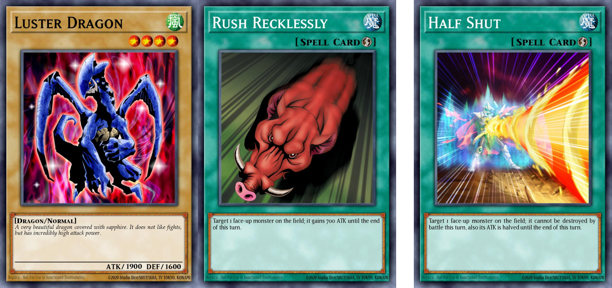(1900+700)/2 → 1300 ⇒ 1900 |
Apply (5,6) and reapply (1,2) afterwards[2][3][7][9][14]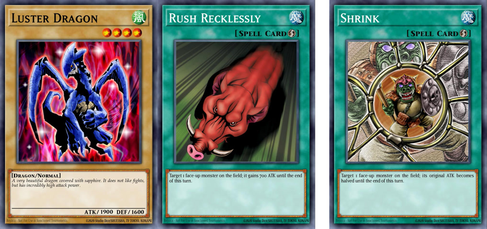(1900+700) halve original → 950+700=1650 ⇒ 1900[2][7][9][14] 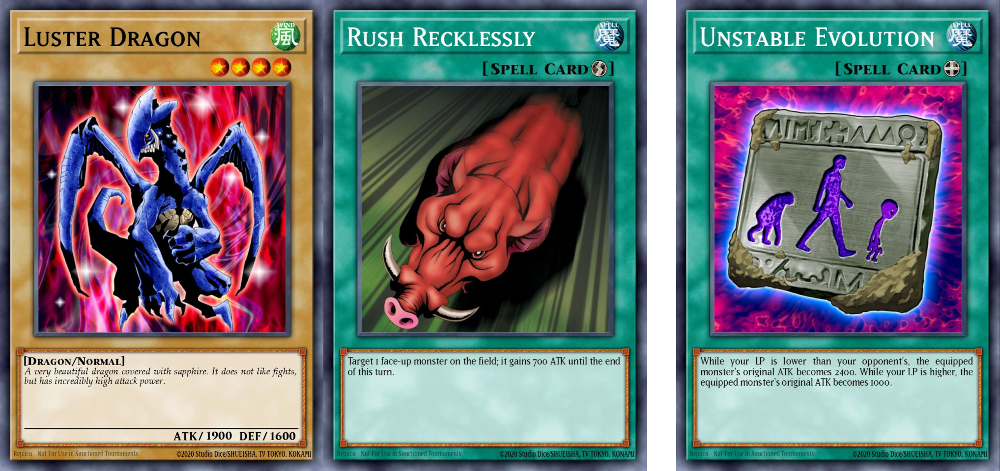(1900+700) set original to 2400 → 2400+700=3100 ⇒ 2600[2][7] 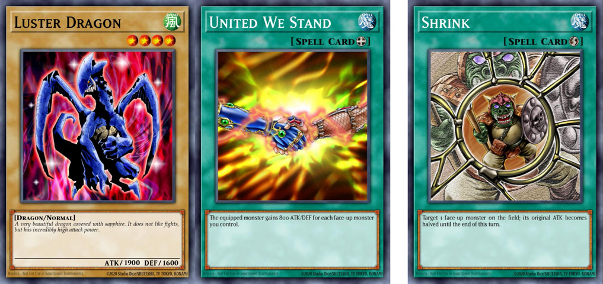(1900+800) halve original → 950+800=1750 ⇒ 2700[3] 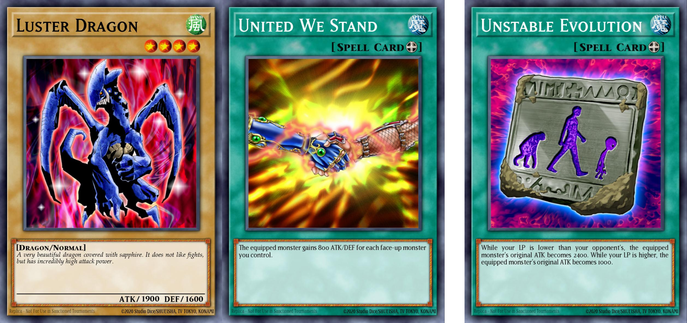(1900+800) set original to 2400 → 2400+800=3200 ⇒ 2700[3] |
|||
| (2) | C | ||||||
| Set current | (3) | L |
Remove previous (1,3) when applying (3)[4]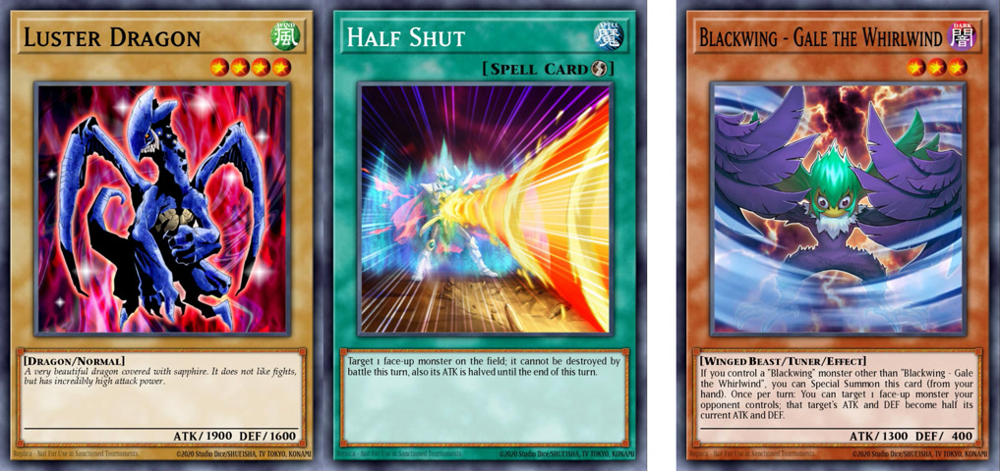(1900/2)/2 → 475 ⇒ 1900 |
(1,3,5) are not reapplied until (4) stops applying[5]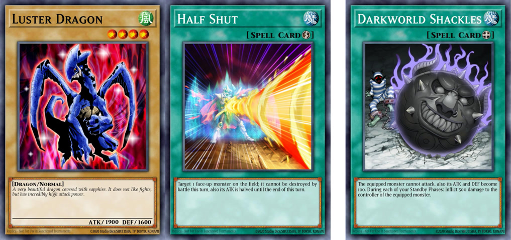(1900/2) set to 100 → 100 ⇒ 950 |
Remove previous (3,5) when applying (5) | (3,5) are not reapplied until (6) stops applying | |
| (4) | C |
(2,4) are not reapplied until (3) stops applying[6]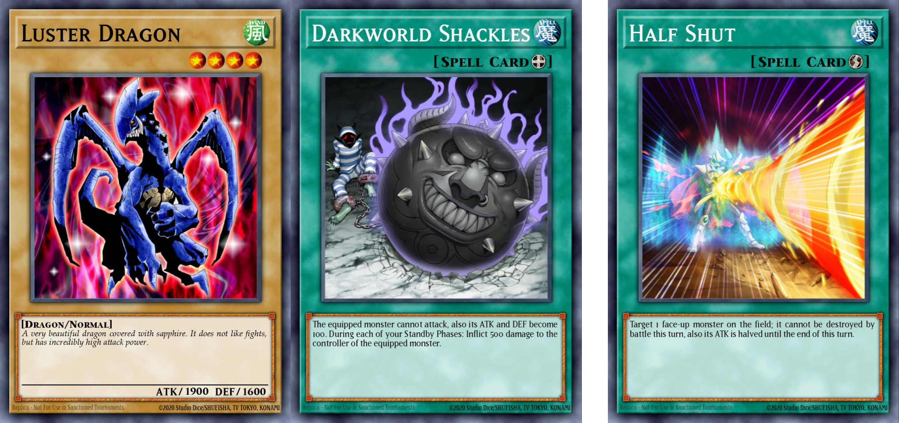(1900 set to 100)/2 → 50 ⇒ 100 |
Apply new (4)[4]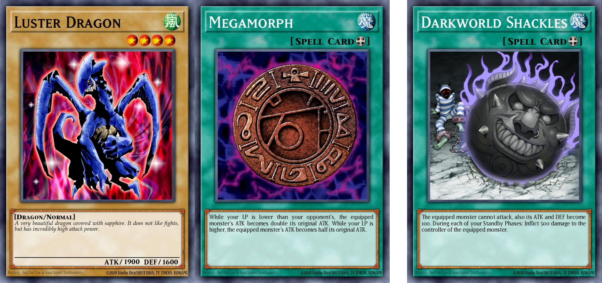(1900x2) set to 100 → 100 ⇒ 3800 |
||||
| Set original | (5) | L |
Apply (3) after previous (5,6)[10]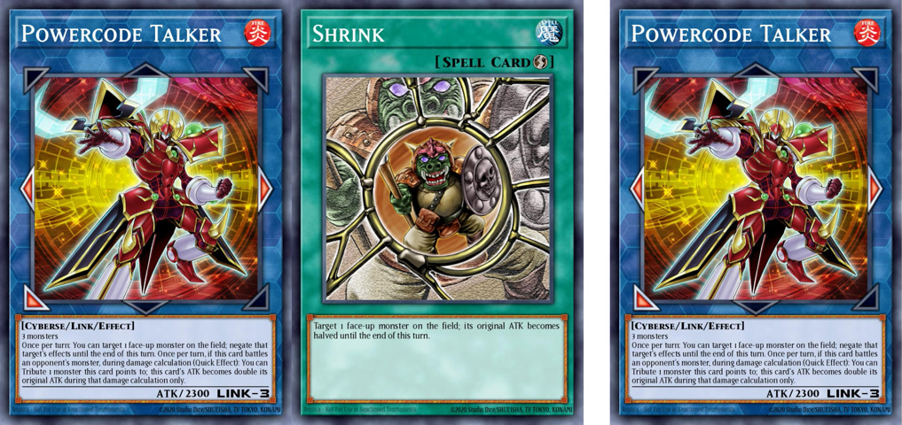(2300 halve original)x2 → 2300 ⇒ 1150 |
(1,3,5) are not reapplied until (4) stops applying |
Remove previous (3,5) when applying (5)[12]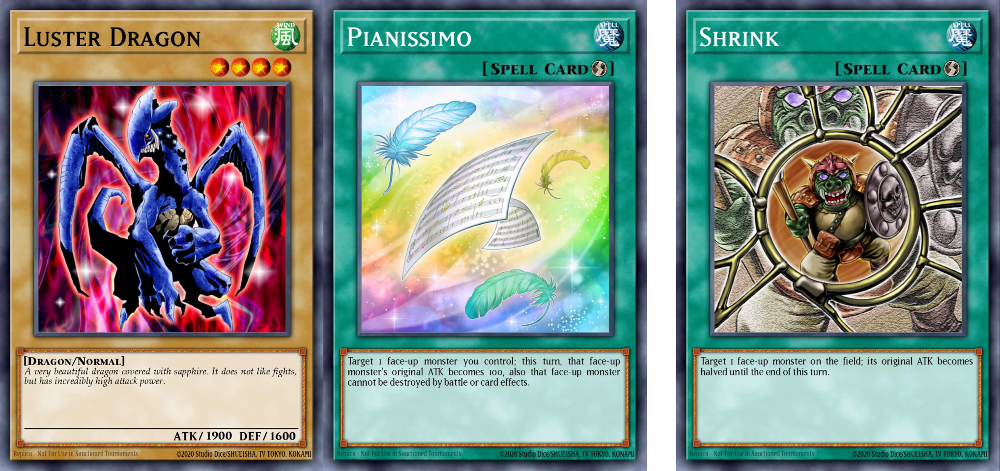(1900 set original to 100) halve original → 50 ⇒ 1900 |
(3,5) are not reapplied until (6) stops applying | |
| (6) | C | Apply (6) and reapply (4) afterwards | (6) are not reapplied until (5) stops applying | Apply new (6) | |||
- OCG Perfect Rulebook 2017 page 156: ATK/DEF Modifications
- OCG Perfect Rulebook 2017 pages 157-158: ATK or DEF is Increased or Decreased by an Effect that Activates
- OCG Perfect Rulebook 2017 pages 159-160: ATK or DEF is Increased or Decreased by a Continuously Applied Effect
- OCG Perfect Rulebook 2017 pages 160: values become a determined value
- OCG Perfect Rulebook 2017 page 161: ATK or DEF Become a Determined Value by an Activated Effect
- OCG Perfect Rulebook 2017 page 162: Continuously Applied Effect that Makes the ATK or DEF Become a Determined Value is Applied
- OCG Perfect Rulebook 2017 page 163: Effect that Makes the Original ATK or DEF Become a Determined Value is Applied
- YGOrg's article (unofficial resource)
- YGOrg Database of Official OCG Rulings: "Blackwing - Gale the Whirlwind", "Tragoedia" etc.
- YGOrg Database of Official OCG Rulings: Lingering Original Set -> Lingering Current Set
- YGOrg Database of Official OCG Rulings: Continuous Current Addition -> Continuous Current Set
- YGOrg Database of Official OCG Rulings: Lingering Original Set -> Lingering Original Set
- YGOrg Database of Official OCG Rulings: Continuous Current Set -> Lingering Original Set
- YGOrg Database of Official OCG Rulings: Lingering Current Addition -> Lingering Original Set
- Pazim's Resources (unofficial resource)
Certain effects that set a monster's current ATK/DEF continuously are always reapplied last as new modifiers are introduced, breaking some of the rules established above. Even though they can be described in the same way (non-activated effects that set ATK/DEF to a determined value) it is not always clear why they work differently.
For these special cases, no matter what the effects currently in play are, they are always applied last[2].
- If a new effect is applied, reapply those effects right afterwards[2].
- When those effects stop applying, reapply everything, including lingering effects (1,3,5)[2].
| Examples | |

|
Super Crashbug
"Number 17: Leviathan Dragon" (1) and "Super Crashbug" (2) are on the field. The effect of (2) switches the ATK/DEF of (1), to be 0/2000. If the effect of (1) is activated, its ATK is recalculated with the effect of (2) being applied last. The ATK/DEF become 0/2500, not 500/2000. If (2) leaves the field, the ATK/DEF of (1) becomes 2500/0[1]. |

|
The Wicked Dreadroot
"Red-Eyes Black Dragon" (1) is equipped with "Megamorph", and The "The Wicked Dreadroot" (2) is on the field, which halves the current ATK/DEF of all other monsters on the field. The ATK of (1) is either 600 or 2400, while its DEF is 1000 [1]. "Black Garden" (1) and The "The Wicked Dreadroot" (2) are on the field. If "Aleister the Invoker" (3) is Normal Summoned, the effect of (2) is immediately applied, so the ATK/DEF of (3) become 500/900. The effect of (1) then activates, and halves the ATK of (3) to 250. Now, the effect of The (2) is reapplied to the newly-determined value, and halves it further to 125. (The DEF remains 900). If (2) leaves the field, the ATK of (3) becomes 250 again [1]. |

|
The Wicked Avatar
"The Wicked Avatar" (1) The "The Wicked Avatar" (1) and "Salamangreat Heatleo" (2) are on the field, and the ATK/DEF of (1) are each 2400. If the effect of (2) is activated, targeting a "Knightmare Phoenix" in the Graveyard and (1) on the field, the ATK of (1) becomes 1900, but immediately reverts to 2400. During this turn, if the effects of (1) are negated, its ATK will become 1900 again and its DEF becomes 0[1][3]. |

|
Water Dragon
"Water Dragon" (1), "Apple Magician Girl" (2), and "Chocolate Magician Girl" are all on the field, and the ATK of (2) is 0 due to the effect of (1). If "Magicians Unite" is activated, targeting (2), its ATK becomes 3000, but the effect of (1) is immediately reapplied and makes the ATK become 0 again. If (1) is destroyed this turn, the ATK of (2) becomes 3000 again[1]. |

|
Clear Vice Dragon
If "Clear Vice Dragon" (1) attacks "Red-Eyes Black Dragon", (1) will have 4800 ATK during damage calculation. If "TA.I. Strike" is activated during damage calculation, the ATK of (1) becomes 2400, but the effect is reapplied and becomes 4800 again[1] . |

|
Victory Viper XX03
"Victory Viper XX03" (1) and an "Option Token" (2) summoned by (1) are on the field. The Pendulum Effect of "Performapal Turn Toad" is applied to the (2), which switches its ATK/DEF from 1200/1000 to 1000/1200. However, its ATK/DEF immediately readjust to be the same as (1), so they become 1200/1000 again[1]. |

|
Mirror Wall
Injection Fairy Lily attacks while "Mirror Wall" (1) is on the field. Once the attack is declared, the ATK of Injection "Fairy Lily" (2) is halved to 200. During damage calculation, if the effect of (2) is activated, its ATK is recalculated. After its effect resolves, its ATK becomes 1700 due to (1), which is 3400 halved[1]. The effect of "Mirror Wall" (1) is applied to a "Cybernetic Magician" (2) that attacked, so its ATK becomes 1200. If the effect of (2) is then activated, applying to itself, its ATK becomes 2000, but the effect of (1) immediately reapplies and halves that amount, so the ATK actually becomes 1000[1]. |
| More examples | ||||

Fusion Devourer[2] |

Gaia Plate the Earth Giant[2] |

Gradius' Option[4] |

Palladium Oracle Mahad[1] |

Salamangreat Violet Chimera[5] |
- YGOrg's article (unofficial resource)
- Pazim's Resources (unofficial resource)
- YGOrg Database of Official OCG Rulings: "The Wicked Avatar"
- YGOrg Database of Official OCG Rulings: "Gradius' Option"
- YGOrg Database of Official OCG Rulings: "Salamangreat Violet Chimera"
A monster's effect that sets its own current or original ATK/DEF upon being Summoned is generally considered a Continuous Effect, because it does not activate. However, these effects behave more like activated effects with respect to the interaction rules covered above. They are only applied once when the Summon is successful, and are not continuously-applying thereafter. "Naturia Beetle" is similar as well, although its effect is not applied upon being Summoned[1].
- A monster (1) whose effect reads "The ATK of this card becomes the combined original ATK of the Tributed monsters", if it is Summoned by tributing a monster (2) on the field whose original ATK was set by another card (3), (1)'s ATK will be (2)'s printed ATK even though (2)'s original ATK differs from its printed ATK due to (3)[2].
| Examples | |

|
Apollousa, Bow of the Goddess
"Apollousa, Bow of the Goddess" (1) has an original ATK of 3200 by its own effect, and has used its effect to decrease its ATK by 800 twice, for a total decrease of 1600 ATK. If the effect of "Shrink" is applied to (1), its original ATK becomes 1600, and the decrease of 1600 by its own effect is reapplied, making its current ATK 0. At the end of the turn, the original ATK of (1) becomes 0[1][3]. |

|
Naturia Beetle
"Naturia Beetle" (1) has its ATK/DEF halved by the effect of "Blackwing - Gale the Whirlwind" (2), so its ATK/DEF are 200/900. If a Spell Card is activated, the effect of (1) is applied and its original ATK/DEF switch. Its current ATK/DEF will be 1800/400, meaning the effect of (2) is no longer applied[1]. |
- YGOrg's article (unofficial resource)
- YGOrg Database of Official OCG Rulings: "Beast King Barbaros", "Fog King"
- YGOrg Database of Official OCG Rulings: "Apollousa, Bow of the Goddess", "Shrink"
Conversely, there are activated effects that behave like non-activated effects, such as "Spiritual Beast Apelio" and "Aroma Garden". The activated effect's resolution is to begin applying a non-activated effect, which then takes effect for a certain amount of time. These cards have effects that activate and resolve, but the applied increase functions like a non-activated effect.[1].
| Examples | |

|
Spiritual Beast Apelio
The effect of your "Spiritual Beast Apelio" (1) has activated and resolved. Your "Ritual Beast Ulti-Gaiapelio" (2) with 3700 ATK attacks an opponent's Defense Position "Kazejin" (3), and during damage calculation the effect of (3) is activated. The ATK of (2) becomes 0, and damage calculation occurs with that value. After damage calculation concludes, the effect of (3) stops applying and the effect of (1) reapplies, so the ATK of (2) becomes 3700.[1]. |
| Examples | |

|
Heraldic Beast Twin-Headed Eagle
You can banish this card from your Graveyard to target 1 face-up Xyz Monster you control with no Xyz Materials and 2 "Heraldic Beast" monsters in your Graveyard; attach those monsters from the Graveyard to that face-up Xyz Monster, as Xyz Materials. You can only use the effect of "Heraldic Beast Twin-Headed Eagle" once per turn. |

|
Overlay Regen
Target 1 face-up Xyz Monster on the field; attach this card to it as material. |

|
Cipher Bit
Target 1 "Galaxy-Eyes" or "Cipher" Xyz Monster you control; attach this card to it as an Xyz Material, and if you do, the next time it would be destroyed by battle or card effect this turn, it is not destroyed. |
If an effect (1) that involves attaching a card (2) as an Xyz Material to a Xyz Monster on the field (3) is activated, if (3) is unaffected by cards' effects, then (1) resolves without attaching (2) to (3).
References:- YGOrg Database of Official OCG Rulings: "Overlay Regen", "Forbidden Lance"
| Examples | |

|
Ultimate Conductor Tyranno
Cannot be Normal Summoned/Set. Must first be Special Summoned (from your hand) by banishing 2 Dinosaur monsters from your GY. Once per turn, during the Main Phase (Quick Effect): You can destroy 1 monster in your hand or field, and if you do, change all face-up monsters your opponent controls to face-down Defense Position. This card can attack all monsters your opponent controls, once each. At the start of the Damage Step, if this card attacks a Defense Position monster: You can inflict 1000 damage to your opponent, and if you do, send that Defense Position monster to the GY. |

|
ZW - Asura Strike
You can target 1 "Utopia" monster you control; equip this monster from your hand or your side of the field to that target. It gains 1000 ATK. While this card is equipped to a monster, that monster can attack all monsters your opponent controls once each. You can only control 1 "ZW - Asura Strike". |

|
Crusadia Revival
All "Crusadia" Link Monsters on the field gain 500 ATK. Once per turn: You can target 1 "Crusadia" Link Monster you control; this turn (even if this card leaves the field), it can attack all monsters your opponent controls once each, also other monsters you control cannot attack. |
If a monster (1) can attack all opponent's monsters once each, if it attacks a monster (2) but then its attack is redirected to another monster (3), (1) cannot attack again (2). Furthermore, (3) which has been made the attack target instead of (2), if (3) has not been destroyed by battle after the attack redirection, (1) cannot attack again (3).
References:- YGOrg Database of Official OCG Rulings: "ZW - Asura Strike", "Construction Train Signal Red"
| Examples | |

|
Dimension Shifter
If you have no cards in your GY (Quick Effect): You can send this card from your hand to the GY; until the end of the next turn, any card sent to the GY is banished instead. |

|
Dimensional Fissure
Any monster sent to the GY is banished instead. |

|
Macro Cosmos
When this card is activated: You can Special Summon 1 "Helios - The Primordial Sun" from your hand or Deck. While this card is face-up on the field, any card sent to the GY is banished instead. |
If an effect that says "Any monster sent to the Graveyard is banished instead." is being applied when a Pendulum Monster placed in the Pendulum Zone is destroyed, since it exists on the field as a Spell Card, it is not banished and it is added to the Extra Deck
If an effect like "Macro Cosmos" is being applied, so that (all kinds of) cards that would be sent to the Graveyard are banished, the effect text takes precedence and Pendulum Monsters are not added to the Extra Deck and are banished instead.
References:-
When paying costs that say "discard to the Graveyard", if "Macro Cosmos" or something similar is being applied, so that cards that would be sent to the Graveyard are banished, the activation of cards that discard to the Graveyard as a cost cannot be performed. Costs that simply say "discard" can be paid. In that case, the cards are not sent to the Graveyard and are banished as a result.
Example: While the effect of "Macro Cosmos" is being applied, the effect of "Hecatrice" that says "You can discard this card to the Graveyard to add 1 "Valhalla, Hall of the Fallen" from your Deck to your hand." cannot be activated, but the effect of "Ghost Reaper & Winter Cherries" that says "During either player's turn, if your opponent controls more monsters than you do: You can discard this card;" can be activated. - For costs that read "send to the Graveyard;", those monsters must be sent to the Graveyard in order to activate the effect. If "Macro Cosmos" or similar is being applied, so that the cards that would be sent to the Graveyard are banished instead and so that it is not possible to send cards to the Graveyard, activations that send cards to the Graveyard as a cost cannot be performed.
When the effect "any Monster sent to the GY is banished instead" is applying you:
- Cannot activate a card or effect that requires you to send a Monster to the Graveyard as a cost[1].
- Cannot activate a card or effect that send cards from the top of your Deck to the Graveyard as cost as there may be monster cards among them[1].
- Can activate a card or effect that requires you to send a Monster Card not treated as a Monster (for example treated as an Equip Spell Card) to the Graveyard as a cost[2].
- YGOrg Database of Official OCG Rulings: "Charge of the Light Brigade", "Card Trooper", "Dimensional Fissure"
- YGOrg Database of Official OCG Rulings: "Dimensional Fissure", "Guardian Eatos"
| Examples | |

|
Farfa, Malebranche of the Burning Abyss
If you control a monster that is not a "Burning Abyss" monster, destroy this card. You can only use 1 of these effects of "Farfa, Malebranche of the Burning Abyss" per turn, and only once that turn. |

|
World Legacy Clash
Banish 1 face-up monster you control (until the End Phase), then target 1 face-up monster your opponent controls; that target loses ATK/DEF equal to the original ATK/DEF of that banished monster. |

|
Interdimensional Matter Transporter
Target 1 face-up monster you control; banish that target until the End Phase. |
- If a monster banished by an effect for a time determined by those cards returns to the field, this is not treated as a Special Summon. As a result, Special Summon Monsters that have not been properly Special Summoned can also be returned.
- In most cases, cards that are banished temporarily do not start a chain when they are returned to the field.
- When cards that have been banished temporarily are returned to the field, they are returned in the battle position they were in before being banished. Similarly, if their controller had changed, they are returned to the side of the field of the controller they had before being banished. Also, if cards are banished face-down, they are returned face-down.
- If a monster that has been temporarily banished from the Extra Monster Zone is returned to the field, it is returned to a Main Monster Zone of its previous controller in the battle position they were in before being banished. At that time, there are no available Main Monster Zones, that monster is not returned to the field and it is sent to the Graveyard.
- When a monster that has been banished temporarily would be returned to the field, if there are no available Main Monster Zones, that monster is not returned to the field and it is sent to the Graveyard.
-
If a card that has been banished temporarily is Special Summoned or sent to the Graveyard by the effect of other cards, it is not returned to the field at the timing it would be returned to the field.
Example: After a monster banished by the effect of "Interdimensional Matter Transporter" that says "banish that target until the End Phase." is Special Summoned by the effect of "D.D.R. - Different Dimension Reincarnation" that says "Special Summon it in face-up Attack Position, and equip it with this card", if it is banished once again, that monster is not returned to the field during the End Phase. - If a card that is banished temporarily is returned to the field, in most cases it is not affected by the effects that were affecting it before it was banished.
A monster "battles" (and is "battling") starting from when it attacks or is attacked. This includes both monsters attacking other monsters, and monsters attacking a player's Life Points directly.
When a card requires a monster to have "battled" (past tense), the attack had to have reached the damage calculation portion of the Damage Step in order for the monster to have "battled". If the attack stops before damage calculation, the monster did not "battle". (Note that an attack was still declared, however, so in most cases the attacking monster cannot declare another attack).
References:10.7.1 End of the Damage Step still occurs even if damage calculation was never conducted: "having attacked"
A card whose effect reads "at the end of the Damage Step" can be activated even if damage calculation has not been conducted and Before Damage Calculation has been reached[1].
Also if an attack progresses until the Damage Step, that attacking monster is treated as "having attacked"[2].
Example: An attack was declared with "Dante, Traveler of the Burning Abyss" on an opponent's monster and the attack progressed until the Damage Step. Afterwards, even if the opponent's monster disappears and damage calculation is not performed, the effect that says "If this card attacks, it is changed to Defense Position at the end of the Battle Phase" is applied at the end of the Battle Phase.
- YGOrg Database of Official OCG Rulings: "Number C5: Chaos Chimera Dragon", "Reflect Bounder", "Divine Wrath"
- OCG Perfect Rulebook 2017 page 188
| Examples | |

|
Ocean Dragon Lord - Kairyu-Shin
While "Umi" is on the field, each player can only control 1 face-up non-WATER monster. (If a player controls 2 or more, they must send some to the GY so they only control 1.) During your Main Phase: You can add from your Deck to your hand 1 "Umi", 1 "Kairyu-Shin" Spell/Trap, or 1 "Sea Stealth" Spell/Trap. You can only use this effect of "Ocean Dragon Lord - Kairyu-Shin" once per turn. |

|
Rivalry of Warlords
Each player can only control 1 Type of monster. Send all other face-up monsters they control to the GY. |

|
There Can Be Only One
Each player can only control 1 monster of each Type. If a player controls 2 or more monsters of the same Type, they must send some to the GY so they control no more than 1 monster of that Type. |
Taking as examples "Rivalry of Warlords" and "Gozen Match", these are Continuous Trap Cards that make it so you can only control face-up monsters of 1 Type (for Rivalry) or 1 Attribute (for Gozen).
When this Trap Card's activation resolves, look at the face-up monsters you control. If they all have the same Type/Attribute, you don't have to do anything else. If there are different Types/Attributes, you choose 1 Type/Attribute to keep, and send your face-up monsters that aren't that Type/Attribute to the Graveyard.
References:Monsters which violate this kind of effects are sent to the graveyard and are not considered as destroyed by card effects.
References:- YGOrg Database of Official OCG Rulings: "Gravekeeper's Chief", "Archfiend Zombie-Skull"
While Rivalry/Gozen is active and you have a face-up monster, you cannot Summon monsters that are a different Type/Attribute from the monster(s) you already control.
So you can't do any of the following to put a monster with the wrong Type/Attribute on your side of the field:
- Normal Summon
- Tribute Summon
- Flip Summon
- Xyz Summon
- Synchro Summon
- Fusion Summon
- Special Summon with a monster's own effect.
- Activate a card or effect that would have to Special Summon a monster of the wrong Type/Attribute (including effects that could theoretically Summon anything, but currently cannot, such as "Monster Reborn" when you control Spellcasters but the only monsters in the Graveyard are Zombies).
While Rivalry/Gozen is active, you can still Set monsters of any Type/Attribute, and you can Special Summon monsters of the wrong Type/Attribute face-down. But you can't Flip Summon them afterwards, and they're sent to the Graveyard after damage calculation if your opponent attacks them. (Also, in that case, you won't get the effects of cards that need to be destroyed by battle and sent to the Graveyard, because they're sent to the Graveyard by the Trap Card's effect instead. But Flip Effects will still activate).
References:- You can activate cards and effects that would Summon the same Type/Attribute monster as you have on the field.
-
You can also activate cards that would Summon more than one Type/Attribute of monster. The results depend on what you have on the field:
- If you DON'T control any monsters: You can activate cards that would Summon monsters with more than one Type/Attribute. All of them are Summoned, but you must immediately pick one Type/Attribute and send all others to the Graveyard.
- If you already DO control a monster: First of all, if the Summoning effect targets, you can only target monsters with the right Type/Attribute. If the Summoning effect does NOT target, you can activate it as long as it is possible to resolve the effect using only monsters with the right Type/Attribute. In this case, only the right monsters are Summoned to the field.
The same rule applies to the "Gladiator Beast" monsters and similar effects. You can return a Gladiator Beast to your Deck and activate its effect as long as there is another Gladiator Beast in your Deck that you COULD Summon that is the same Type/Attribute as the one you returned. However, if you have no face-up monsters when the effect resolves, you can Summon any Type/Attribute of monster.
References:You can take control of an opponent's monster that's the wrong Type/Attribute with a card like "Mind Control". If you do, it's sent to the Graveyard immediately after you gain control of it.
References:| Examples | |

|
Fossil Dyna Pachycephalo
If this card is flipped face-up: Destroy all Special Summoned monsters on the field. Neither player can Special Summon monsters. |

|
Mystic Mine
If your opponent controls more monsters than you do, your opponent cannot activate monster effects or declare an attack. If you control more monsters than your opponent does, you cannot activate monster effects or declare an attack. Once per turn, during the End Phase, if both players control the same number of monsters: Destroy this card. |

|
Imperial Iron Wall
Neither player can banish cards. |
If a part of an effect asks to perform an action, and the effect of another card says that same action cannot be performed, in most cases the effect that says "cannot" takes precedence[1].
For example, if the two effects "any card sent to the GY is banished instead" and "neither player can banish cards" are applying both simultaneously, cards sent to the Graveyard will not be banished and are sent to the Graveyard normally[2].
References:- OCG Perfect Rulebook 2017 page 144
- YGOrg Database of Official OCG Rulings: "Imperial Iron Wall", "Macro Cosmos"
Currently, only these two cards have this kind of effect:

|
Psi-Blocker
Once per turn: You can declare 1 card name; cards with that name, and their effects, cannot be used until the End of your opponent's next turn. |

|
Prohibition
Activate by declaring 1 card name. Cards with that name, and their effects, cannot be used. Cards already on the field are not affected (including face-down cards). |
-
"Using" a card means the following actions:
- Activating a Spell or Trap Card, Setting them from the hand or Deck, activating or applying the effects of Spells or Traps.
- Normal Summoning/Setting monsters, Special Summoning Special Summon Monsters by their requirements, activating the effects of monsters, using a monster as a Fusion/Synchro/Xyz/Link Material, declaring an attack/changing its battle position.
- Activating a Pendulum Monster as a Spell Card. Also, activating or applying Pendulum Effects.
- A prohibited monster cannot be Special Summoned by the effects of other cards.
- If a Fusion Monster or Ritual Monster is prohibited, since Fusion Summons and Ritual Summons are treated as using the card, they cannot be performed.
What you can do:
- Sending a prohibited card to the Graveyard or Tributing it as a cost is not treated as using it.
- Targeting a prohibited card or affecting it with the effects of another card is not treated as using it.
- Applying written clauses in the Effect Text that are not Monster Effects is not treated as using the card.
- If a prohibited Attack Position monster is attacked by the opponent, damage calculation is performed normally, and if the ATK of the opponent's monster is lower than the ATK of your monster, that monster is destroyed in battle.
| Examples | |

|
Construction Train Signal Red
When an opponent's monster declares an attack: You can Special Summon this card from your hand, and if you do, change the attack target to this card and proceed to damage calculation. This card cannot be destroyed by that battle. |

|
Eye of Illusion
If you control an Illusion or Spellcaster monster: Activate 1 of these effects; |

|
Attack Guidance Armor
When a monster declares an attack: Activate 1 of these effects; |
If a monster (1) can attack all opponent's monsters once each, if it attacks a monster (2) but then its attack is redirected to another monster (3), (1) cannot attack again (2). Furthermore, (3) which has been made the attack target instead of (2), if (3) has not been destroyed by battle after the attack redirection, (1) cannot attack again (3).
References:- YGOrg Database of Official OCG Rulings: "ZW - Asura Strike", "Construction Train Signal Red"
| Examples | |

|
Mimighoul Dragon
FLIP: If it is the Main Phase: Apply these effects in sequence. |

|
Mind Control
Target 1 monster your opponent controls; until the End Phase, take control of that target, but it cannot declare an attack or be Tributed. |

|
Switcheroroo
If you control the same number of monsters as your opponent, switch control of all those monsters. |
- Cards that switch control are treated as cards of their current controller. They can also be used to pay costs or for Special Summons like Fusion Summons, Synchro Summons, Xyz Summons or Link Summons.
- If a card on the field that has changed control later leaves the field, it is moved to the owner's location.
- If you have no available Main Monster Zones, you cannot activate an effect that would take control of an opponent's monster.
-
if you have 5 monsters in your Main Monster Zones before the resolution of an effect that switches control of a monster, the monster that would switch control is destroyed and sent to the Graveyard. In that case, it is not treated as being destroyed by a card effect.
Example: After you take control of an opponent's monster with the effect of "Enemy Controller" that says "take control of that target until the End Phase", if the opponent has no available Main Monster Zones, the monster whose control would return is destroyed and sent to the Graveyard. - If control of a monster in the Extra Monster Zone switches to the opponent, it is placed in an available Main Monster Zone of the opponent.
- If control of a monster that was stolen from the Extra Monster Zone is returned, it is not returned to the Extra Monster Zone of the owner, and is instead placed in an available Main Monster Zone of the previous controller. If there are no available Main Monster Zones, that monster is destroyed and sent to the Graveyard.
| Examples | |

|
Silvera, Wolf Tamer of the White Forest
1 Tuner + 1+ non-Tuner monsters |

|
Book of Moon
Target 1 face-up monster on the field; change that target to face-down Defense Position. |

|
Quaking Mirror Force
When an opponent's monster declares an attack: Change all your opponent's Attack Position monsters to face-down Defense Position. Monsters changed to face-down Defense Position by this effect cannot change their battle positions. |
-
When a face-up monster is flipped face-down, effects that were affecting it until that point no longer affect it.
Example: If a monster that had its ATK increased by the effect of "Rush Recklessly" (1) that says "Target 1 face-up monster on the field; it gains 700 ATK until the end of this turn" is flipped face-down by the effect of "Book of Moon", the effect of (1) is no longer applied. -
If a monster that has been targeted for an already-applying effect of a Continuous/Equip Spell or a Continuous Trap is flipped face-down, that monster is no longer targeted and that targeting effect is no longer applied.
Example: If a monster Special Summoned by the effect of "Call of the Haunted" (1) that says "Activate this card by targeting 1 monster in your Graveyard; Special Summon that target in Attack Position" is flipped face-down, even if (1) is destroyed afterwards, the effect that says "When this card leaves the field, destroy that target" is no longer applied. - If a monster that was Normal Summoned, Special Summoned, had its battle position changed, or performed an attack declaration is flipped face-down, it cannot be Flip Summoned that turn. Also, even if that monster is flipped face-up by the effect of another card later, its battle position cannot be changed.
- If a monster that performs an attack is flipped face-down and changed to face-up Attack Position during that Battle Phase, since that monster already performed an attack, it cannot attack.
- Link Monsters and Monster Tokens cannot be flipped face-down.
| Examples | |
|
|
Psi-Blocker
Once per turn: You can declare 1 card name; cards with that name, and their effects, cannot be used until the End of your opponent's next turn. |

|
Crossout Designator
Declare 1 card name; banish 1 of that declared card from your Main Deck, and if you do, negate its effects, as well as the activated effects and effects on the field of cards with the same original name, until the end of this turn. You can only activate 1 "Crossout Designator" per turn. |

|
Mind Crush
Declare 1 card name; if that card is in your opponent's hand, they must discard all copies of it, otherwise you discard 1 random card. |
When a card is activated or when a card name is declared for an effect, only card names that exist in the OCG can be declared. Also, cards that cannot be used in a sanctioned Duel cannot be declared.
References:| Examples | |

|
Dark Armed Dragon
Cannot be Normal Summoned/Set. Must be Special Summoned (from your hand) by having exactly 3 DARK monsters in your GY. You can banish 1 DARK monster from your GY, then target 1 card on the field; destroy that target. |

|
Raigeki
Destroy all monsters your opponent controls. |

|
Chain Destruction
When a monster(s) with 2000 or less ATK is Summoned: Target 1 of them; destroy all cards with that name in its controller's hand and Main Deck. |
A card is destroyed when it is sent to the Graveyard due to battle between monsters or by an effect that destroys a card. A card that is returned from the field to the hand or Deck, or, that is sent to the Graveyard as a cost or Tribute, is NOT considered "destroyed." always returned to the Graveyard/hand/Deck of the original owner[1].
- If "Macro Cosmos" or something similar is activated, so that cards that would be sent to the Graveyard are banished, cards that are destroyed are not sent to the Graveyard and are banished instead[2].
-
Cards in the Graveyard or that are banished cannot be destroyed[2].
Example: If the activation of the effect of "Glow-Up Bulb" that says "Special Summon this card banished by this effect" is negated by the effect of "Solemn Strike" that says "negate the Summon or activation, and if you do, destroy that card", the activation of the effect of that "Glow-Up Bulb" is negated, but it is not treated as being destroyed and it remains in the Graveyard. - Effects that say "destroy and sent to the Graveyard" or "destroy and banish", if they cannot destroy the card, the part of the effect that sends to the Graveyard or banishes is not performed either[2] ("and" conjuctive).
| Examples | |

|
Danger! Mothman!
You can reveal this card in your hand; your opponent randomly chooses 1 card from your entire hand, then you discard the chosen card. Then, if the discarded card was not "Danger! Mothman!", Special Summon 1 "Danger! Mothman!" from your hand, and if you do, draw 1 card. If this card is discarded: You can have both players draw 1 card, then both players discard 1 card. You can only use this effect of "Danger! Mothman!" once per turn. |

|
Dark World Dealings
Each player draws 1 card, then each player discards 1 card. |

|
Infernity Inferno
Discard up to 2 cards, and send the same number of "Infernity" cards from your Deck to the Graveyard. |
Discard means to send a card from your hand to the Graveyard. This can happen because of a card effect or by adjusting the number of cards in your hand during the End Phase[1].
- Cards that are discarded from the hand to the Graveyard are treated as cards that were discarded as well as cards that were sent from the hand to the Graveyard[2].
- Cards that are discarded are not treated as being destroyed[2].
- If "Macro Cosmos" or something similar is activated, so that cards that would be sent to the Graveyard are banished, discarded cards are not sent to the Graveyard and are banished instead[2].
| Examples | |

|
"Maxx "C""
During either player's turn: You can send this card from your hand to the Graveyard; this turn, each time your opponent Special Summons a monster(s), immediately draw 1 card. You can only use 1 "Maxx "C"" per turn. |

|
Pot of Greed
Draw 2 cards. |

|
Dark Bribe
When your opponent activates a Spell/Trap Card: Your opponent draws 1 card, also negate the Spell/Trap activation, and if you do, destroy it. |
Taking the top card(s) of the Main Deck and putting it/them to your hand is called drawing.
- If multiple cards are drawn, this is performed by taking cards in order from the top, but this is treated as drawing all cards simultaneously.
- Even if cards are drawn by a card effect during the Draw Phase, that drawing is not treated as the normal draw of the turn.
- If a player has 0 cards left in their Deck, that player cannot activate an optional effect that draws cards. Similarly, effects that draw multiple cards cannot be activated if it is not possible to draw that many cards. However, effects like "Reload" that draw cards after adding cards to the Deck can be activated even if there are no cards in the Deck.
- If cards are sent from the Deck to the Graveyard during the resolution of a card, so that the player becomes unable to draw cards but is forced to by a mandatorily activated effect, that player loses the Duel.
-
If cards from the Deck are added to the hand by an effect that does not draw cards but "adds them to the hand", this is not treated as drawing cards.
Example: If a card is added to the hand by the effect of "Pot of Duality" that says "Excavate the top 3 cards of your Deck, add 1 of them to your hand, also, after that, shuffle the rest back into your Deck.", this is not treated as drawing cards. - Cards that are drawn are treated as being added to the hand.
| Examples | |

|
A-Assault Core
Once per turn, you can either: Target 1 LIGHT Machine monster you control; equip this card to that target, OR: Unequip this card and Special Summon it. A monster equipped with this card is unaffected by your opponent's monster effects (except its own), also if the equipped monster would be destroyed by battle or card effect, destroy this card instead. If this card is sent from the field to the GY: You can add 1 other Union monster from your GY to your hand. |

|
Armory Arm
1 Tuner + 1+ non-Tuner monsters |

|
Rocket Hand
Target 1 Attack Position monster you control with 800 or more ATK; equip this card to that target. It gains 800 ATK. You can send this equipped card to the Graveyard, then target 1 face-up card on the field; destroy it, then change the ATK of the monster this card was equipped to, to 0, also its battle position cannot be changed. You can only use 1 "Rocket Hand" effect per turn, and only once that turn. |
In addition to Equip Spell Cards, sometimes Trap Cards or Monster Cards can become equipped to a monster.
- Equipped Traps remain Trap Cards
- Equipped monsters are considered to be Equip Spells.
The term "Equip Card" includes all 3 kinds (standard Equip Spells, equipped Traps, and monsters equipped to other monsters).
References:Monster Cards that are treated as Equip Cards are placed in the Spell & Trap Zone and are treated as Equip Spell Cards[1].
- If a Pendulum Monster has been placed in the left-most or right-most Spell & Trap Zone as an Equip Card, that Pendulum Monster is not treated as a card in a Pendulum Zone, its Pendulum Effects are not applied and a Pendulum Summon cannot be performed[1].
-
If a Monster Card that has become an Equip Card activates or applies an effect, that effect is treated as the effect of an Equip Spell Card[1].
Example: If a monster equipped "Gwenhwyfar, Queen of Noble Arms" (1), which has an effect that says "If the equipped monster battles an opponent’s monster, at the start of the Damage Step: You can destroy that monster, then destroy this card.", battles with a "First of the Dragons" (2) affected by its effect that says "This card cannot be destroyed by battle, except by battle with a Normal Monster, and is unaffected by other monsters’ effects.", since the effect of (1) is treated as the effect of an Equip Spell Card, (2) is destroyed. -
If a monster that has been equipped with Equip Cards by its effect has its effects negated, they are destroyed and sent to the Graveyard[1].
Example: While "Guardian of Felgrand" (1) has been equipped with a card by its effect that says "If this card is Normal or Special Summoned: You can equip 1 Level 7 or 8 Dragon-Type monster from your hand or Graveyard to this card.", if the effect of "Skill Drain" is applied, the effects of (1) are negated and the monster that was equipped is destroyed and sent to the Graveyard. - Equip Cards are treated as always targeting the equipped monster[1].
-
If the effects of an Equip Card equipped to a monster are negated, the effects are negated but it remains on the field equipped to the equipped monster[1].
Example: While the Union monster "Armored Cybern" (1) is equipped to a monster, if the effect of "Silent Swordsman LV7" that says "Negate all Spell effects on the field." is applied, the effects of (1) are negated but it stays equipped to the equipped monster. -
If a Monster Card is equipped to another monster, it remains equipped to that monster and cannot be moved to a different target, even by card effects that would normally be able to do so[2].
EXCEPTION: Union monsters equipped by their own effects can be moved by appropriate card effects[2].
Cards like "Rocket Hand" that equip themselves to a monster after activation are Normal Trap Cards that remain on the field after activation. After they become Equip Cards, they are also treated as Trap Cards. They have every other rule that Equip Spell Cards have.
References:| Examples | |

|
Absolute King Back Jack
During your opponent's turn (Quick Effect): You can banish this card from the GY; excavate the top card of your Deck, and if it is a Normal Trap, Set it to your field. Otherwise, send it to the GY. That Set card can be activated during this turn. If this card is sent to the GY: You can look at 3 cards from the top of your Deck, then place them on the top of the Deck in any order. You can only use each effect of "Absolute King Back Jack" once per turn. |

|
Pot of Duality
Excavate the top 3 cards of your Deck, add 1 of them to your hand, also, after that, shuffle the rest back into your Deck. You can only activate 1 "Pot of Duality" per turn. You cannot Special Summon during the turn you activate this card. |

|
Onikuji
Once per turn, during your Standby Phase: Your opponent declares 1 card type (Monster, Spell, or Trap). Excavate the top card of your Deck, then if it is that type of card, your opponent draws 1 card. Otherwise, discard 1 random card from their hand. Place the excavated card on the bottom of your Deck. |
When a card says to "excavate" cards from your Deck, you reveal those cards to both players. Then, before you do anything else, apply the instructions from the card effect that excavated them. Cards that are being excavated are still treated as being in the Deck until sent elsewhere by the card instructions
References:| Examples | |

|
Phantom of Chaos
Your opponent takes no battle damage from attacks involving this card. Once per turn: You can target 1 Effect Monster in your GY; banish that target, and if you do, until the End Phase, this card's name and original ATK become that monster's name and original ATK, and replace this effect with that monster's original effects. |

|
Emperor Charles the Great
1 Level 9 "Infernoble Knight Emperor Charles" equipped with an Equip Card(s) |

|
Pseudo Space
Once per turn: You can banish 1 Field Spell Card from your Graveyard; until the End Phase, this card's name becomes that card's original name, and replace this effect with that card's original effects. |
-
Effects that "gain the effects of [...]" for Monsters are only applied as long as the card remains face-up in a Monster Zone. Since the card that gained the gained effects loses them once it leaves the field, effects that activate in the Graveyard or something similar cannot be activated or applied. Examples:
- If a "Legendary Knight Hermos" that has gained the effects of "Dark Magician of Chaos" leaves the field, since it loses the gained effects, the effect of "Dark Magician of Chaos" that says "If this face-up card would leave the field, banish it instead" is not applied.
- If a "Phantom of Chaos" that has gained the effects of "Superheavy Samurai Soulclaw" activates the effect that says "You can target 1 "Superheavy Samurai" monster you control; equip this monster from your hand or your side of the field to that target.", when the effect finishes resolving, its effect is no longer applied and it is destroyed and sent to the Graveyard.
- If the effects of another monster are gained by an effect that gains effects, the requirements to use that effect like "can only activate the effect of [...] once per turn" are also applied.
-
If the effects of another monster are gained by an effect that gains effects, the effect to gain effects itself is lost. Other effects that the monster originally had are not lost.
Example: Even if "Phantom of Chaos" gains the effects of other monsters by its effect, the effect that says "Any Battle Damage your opponent takes from battles involving this card becomes 0" is still applied.
| Examples | |

|
Zoodiac Ratpier
If this card is Normal Summoned: You can send 1 "Zoodiac" card from your Deck to the Graveyard. An Xyz Monster whose original Type is Beast-Warrior and has this card as Xyz Material gains this effect. |

|
Greater Polymerization
Fusion Summon 1 Fusion Monster from your Extra Deck, using 3 or more monsters from your hand or field as Fusion Material, and if you do, it gains these effects. |

|
The Weather Thundery Canvas
"The Weather" Effect Monsters in your Main Monster Zones of this card's column and its adjacent columns gain this effect. |
If a monster that is not an Effect Monster gains an effect by the effect of another card that says "gains this effect […]", that monster is treated as an Effect Monster.
Example: Since a "Gem-Knight Pearl" Xyz Summoned by using "Gagaga Head" as Xyz Materials gains the effect that says "● If it is Xyz Summoned: Draw 1 card.", it is treated as an Effect Monster.
| Examples | |

|
Elemental HERO Absolute Zero
1 "HERO" monster + 1 WATER monster |

|
Prayers of the Voiceless Voice
This card can be used to Ritual Summon any LIGHT Ritual Monster. You must also Tribute LIGHT monsters from your hand or field whose total Levels equal or exceed the Level of the Ritual Monster. If a face-up LIGHT Ritual Monster(s) you control leaves the field by an opponent's card effect (except during the Damage Step): You can banish this card from your GY; Special Summon 1 "Sauravis, the Ancient and Ascended", "Saffira, Queen of Dragons", or "Skull Guardian, Protector of the Voiceless Voice" from your hand or Deck, ignoring its Summoning conditions. You can only use this effect of "Prayers of the Voiceless Voice" once per turn. |

|
Waking the Dragon
If this Set card in its owner's control has left the field because of an opponent's effect, and is now in the GY or banished: You can Special Summon 1 monster from your Deck or Extra Deck. |
Some cards have effects that activate when they or another card(s) "leave the field". For example, these effects activate when a monster is sent to the Graveyard, or is banished, or is returned to the hand or Extra Deck.
When a monster on the field is shuffled into the Deck, or becomes an Xyz Material, it is no longer a card on the field, however its effects that activate when it "leaves the field" will not activate. Deck includes both Main and Extra Deck.
References:| Examples | |

|
Cyber Harpie Lady
(This card's name is always treated as "Harpie Lady".) |

|
Gunkan Suship Shari Red
This card's name becomes "Gunkan Suship Shari" while in the hand, Deck, GY, or on the field. You can only use the following effect of "Gunkan Suship Shari Red" once per turn. You can reveal 1 other "Gunkan Suship Shari" in your hand; Special Summon this card from your hand, then you can apply this effect. |

|
Number 8: Heraldic King Genom-Heritage
2 Level 4 "Heraldic Beast" monsters |
-
Monsters that read "This card's name is always treated as [a particular card name]", have their name always treated as that name, even while in the Deck, hand, Graveyard, or otherwise outside of the field[2].
If cards with an effect that say "This card's name is always treated as [...]" are included in the Deck, the card is treated as having that card name, for example: since "Cyber Harpie Lady" says "(This card's name is always treated as "Harpie Lady".)", you can only include up to 3 copies in total of "Harpie Lady" and "Cyber Harpie Lady" in your Main Deck[1]. -
Up to 3 copies of cards that are treated as having a different name by an effect can be included separately from cards with the name that is provided by that effect[1]. Examples:
- You can include 3 copies of each "Blue-Eyes White Dragon" and "Blue-Eyes Alternative White Dragon" which has an effect that says "This card's name becomes "Blue-Eyes White Dragon" while it is on the field or in the Graveyard."[1]
- Even if "Gunkan Suship Shari" is used to build a Deck, you can also use up to 3 "Gunkan Suship Shari" which has an effect that says "This card's name becomes "Gunkan Suship Shari" while in the hand, Deck, GY, or on the field."[3]
- OCG Perfect Rulebook 2017 page 41
- OCG Perfect Rulebook 2017 page 55
- YGOrg Database of Official OCG Rulings: "Gunkan Suship Shari Red"
-
If a card whose name is treated as the name of a different card activates or applies its effects, that effect is treated as the effect of a card with the name it has at the moment.
Example: If a "Number 8: Heraldic King Genom-Heritage" treated as "Number 39: Utopia" activates its effect, that effect is activated as the effect of "Number 39: Utopia". -
If an effect reads "You can only use this effect of [a particular card name] once per turn" or "You can only use the effect of a card with this name once per turn", this is not influenced by changes to the card's name on the field.
Example: If the effect of "Giant Pairfish" that says "You can discard 1 monster; Special Summon 1 Level 4 or lower Wyrm-Type monster from your Deck. You can only use this effect of "Giant Pairfish" once per turn." is activated, and later its name changes by the effect of another card, the effect of the "Giant Pairfish" that had its name changed during that turn cannot be activated.
| Examples | |

|
Toadally Awesome
2 Level 2 Aqua monsters |

|
My Body as a Shield
When your opponent activates a Spell/Trap Card or monster effect that would destroy a monster(s) on the field: Pay 1500 LP; negate the activation, and if you do, destroy it. |

|
Seven Tools of the Bandit
When a Trap Card is activated: Pay 1000 LP; negate the activation, and if you do, destroy it. |
- If the activation of a card or effect is negated, the effect is not applied.
- If the activation of the card is negated, that card is sent to the Graveyard.
- Effects that negate the activations of Spell/Trap Cards can negate the activation of the card by activating when those cards that would be negated are placed face-up on the field.
- If the activation of the card is negated, its effect does not resolve.
-
Effects that negate activations must be activated in a chain directly to the activation of the effect they aim to negate.
Example: If the opponent activates "Mystical Space Typhoon", you pass priority to activate cards, and the opponent activates another card in a chain, you cannot activate a card that negates the activations of Spell Cards like "Magic Jammer" to negate the activation of "Mystical Space Typhoon".
| Examples | |

|
Baronne de Fleur
1 Tuner + 1+ non-Tuner monsters |

|
Borreload Savage Dragon
1 Tuner + 1+ non-Tuner monsters |

|
Madolche Nights
When a monster effect is activated, if you have no monsters in your GY: Negate the activation, then if you control "Madolche Puddingcess", shuffle 1 random card from your opponent's hand into the Deck. |
- If the activation of an effect is negated, the resolution of that effect is not performed[2].
- If the activation of the effect of a card on the field is negated, that card remains on the field[1].
- Unless stated otherwise, cards that have the activation of their effects negated are not moved from their location. If the effect says something like "negate the activation, and if you do, destroy it", after being negated, the card is destroyed and sent to the Graveyard[1].
- Effects that negate the activations of the effects of Spells, Traps, or Effect Monsters and destroy them can negate the activation of cards that are placed face-up on the field to be activated, as well as when a face-up card on the field or one in the hand, Graveyard, etc. activates its effect[2].
- The effect that negates activations must be activated in a chain directly to the activation of the effect that would be negated[2].
| Examples | |

|
Ash Blossom & Joyous Spring
When a card or effect is activated that includes any of these effects (Quick Effect): You can discard this card; negate that effect. |

|
Dark Ruler No More
Negate the effects of all face-up monsters your opponent currently controls, until the end of this turn, also, for the rest of this turn after this card resolves, your opponent takes no damage. Neither player can activate monster effects in response to this card's activation. |

|
Skill Drain
Activate this card by paying 1000 LP. Negate the effects of all face-up monsters while they are face-up on the field (but their effects can still be activated). |
- If an effect that simply negates effects is activated in a chain to the activation of a card, the activation of the card is not negated and its effect is not applied afterwards.
-
Even if the effect of an activated card is negated, that effect is negated but its resolution is still treated as being performed.
Example: While the effect of "Royal Decree" that says "Negate all other Trap Card effects on the field." is being applied, if "Raigeki Break" is activated by discarding "Archfiend of Gilfer" as a cost, the effect of "Raigeki Break" is negated, but since the timing is treated as that effect being resolved, the effect of the discarded "Archfiend of Gilfer" that says "When this card is sent to the Graveyard: You can target 1 face-up monster on the field; equip that target with this card." cannot be activated.
| Examples | |

|
Ancient Gear Golem
Cannot be Special Summoned. If this card attacks, your opponent cannot activate any Spell/Trap Cards until the end of the Damage Step. If this card attacks a Defense Position monster, inflict piercing battle damage. |

|
Fairy Meteor Crush
If the equipped monster attacks a Defense Position monster, inflict piercing battle damage to your opponent. |

|
Strike Slash
When a monster you control declares an attack: Until the End Phase, that monster gains 700 ATK, also, if it attacks a Defense Position monster, inflict piercing battle damage to your opponent. |
Some monsters can inflict piercing battle damage when they attack a Defense Position monster. This means that you inflict damage to your opponent's LP equal to the difference between the attacking monster's ATK and the defending monster's DEF.
References:| Examples | |
|
|
Danger! Mothman!
You can reveal this card in your hand; your opponent randomly chooses 1 card from your entire hand, then you discard the chosen card. Then, if the discarded card was not "Danger! Mothman!", Special Summon 1 "Danger! Mothman!" from your hand, and if you do, draw 1 card. If this card is discarded: You can have both players draw 1 card, then both players discard 1 card. You can only use this effect of "Danger! Mothman!" once per turn. |

|
Pot of Extravagance
At the start of your Main Phase 1: Banish 3 or 6 random face-down cards from your Extra Deck, face-down; draw 1 card for every 3 cards banished. For the rest of this turn after this card resolves, you cannot draw any cards by card effects. |
|
|
Mind Crush
Declare 1 card name; if that card is in your opponent's hand, they must discard all copies of it, otherwise you discard 1 random card. |
When a card effect says to choose a card randomly, there is no official way of doing so, it is fine as long as neither player has a way of knowing which card is being chosen.
References:A monster (1) who gains different effects based on the materials used for its Summon, if one (2) of the materials had an effect on the field that treated its attribute as multiple attributes, then (1) will gain all the respective effects based on the multiple attributes of (2).
References:- YGOrg Database of Official OCG Rulings: "Genex Ally Triforce", "Elemental Mistress Doriado"
| Information regarding | Retains if flipped face-down | Retains if banished temporarily |
|
Properties of the cards used to perform that monster's Summon
Names, Attributes, Types, Levels of the cards and the number of cards used |
❌ | ❌ |
|
Which specific copies of cards used to perform that monster's Summon
Ritual, Fusion, Synchro, Xyz, Link Materials |
✔️ | ✔️[2] |
|
Which specific method or effect performed that monster's Summon
Monsters being Summoned by their own specific method |
❌ | Adjusting |
| Where that monster was Summoned from | ❌ | ✔️ |
| Lingering effects previously applied to that monster | ❌[3] | ❌ |
|
If that monster's "once per turn" has been used this turn (if retains it can use the "once per turn" again)
EXCEPTION: effects that flip the monster itself face-down will be remembered |
❌[4] | ❌[4] |
| If that monster's Battle Position has been changed this turn (if retains it can't change Battle Position again) | ✔️[3] | ❌ |
| If that monster has declared an attack this turn (if retains it can't attack again) | ✔️[3] | ❌ |
|
If that monster was Set, Normal, Tribute, or Special Summoned, including the type of Special Summon (Ritual, Fusion, Synchro, Xyz, Link)
Exceptions below |
✔️[5][6][7] | ✔️[7] |
| If a Gemini monster was Normal Summoned again | ❌ | ❌ |
| If that monster was Pendulum Summoned | ❌ | ✔️ |
| If that monster was Flip Summoned | ❌ | ❌ |
| The turn that monster was Set, Normal, Tribute, or Special Summoned | ✔️ | ✔️ |
- Pazim's Resources (unofficial resource)
- OCG Perfect Rulebook 2017 pages 88, 91, 101
- OCG Perfect Rulebook 2017 pages 168-169
- OCG Perfect Rulebook 2017 pages 177
- YGOrg Database of Official OCG Rulings: "Revendread Slayer", "Book of Moon"
- YGOrg Database of Official OCG Rulings: "Special Hurricane", "Book of Moon"
- YGOrg Database of Official OCG Rulings: "Vision HERO Trinity", "Interdimensional Matter Transporter"
| Examples | |

|
Satellarknight Deneb
If this card is Summoned: You can add 1 "tellarknight" monster from your Deck to your hand, except "Satellarknight Deneb". You can only use this effect of "Satellarknight Deneb" once per turn. |

|
Dinomist Charge
When this card is activated: Add 1 "Dinomist" monster from your Deck to your hand. Once per turn, if a "Dinomist" card(s) is added from the field to your Extra Deck face-up: Add 1 of those cards to your hand. You can only activate 1 "Dinomist Charge" per turn. |

|
Compulsory Evacuation Device
Target 1 monster on the field; return that target to the hand. |
- If a specific card is added from the Deck to the hand by a card effect, this is not treated as drawing the card.
| Examples | |

|
Madolche Queen Tiaramisu
2 Level 4 "Madolche" monsters |

|
Foolish Return
Target 1 card in your opponent's GY; shuffle it into the Deck. |

|
Drowning Mirror Force
When an opponent's monster declares a direct attack: Shuffle all your opponent's Attack Position monsters into the Deck. |
- If cards are returned to the Deck, that card is added face-down to the Deck and is shuffled. However, if a card is returned to a specified location like the top or bottom of the Deck, the shuffling is not performed.
-
If, at the timing a card effect can be activated, that card has been returned to the Deck, in most cases that effect cannot be activated.
Example: If "Dandylion" (1) has been discarded as a cost to activate "Raigeki Break", and the effect of "Fiend Griefing" that says "Target 1 monster in your opponent's Graveyard; shuffle it into the Deck," is activated in a chain, so that the discarded (1) is returned to the Deck, the effect of (1) does not activate.
| Examples | |

|
PSY-Framelord Omega
1 Tuner + 1+ non-Tuner monsters |

|
Fortune's Future
Target 1 of your banished "Fortune Lady" monsters; return it to the GY, then draw 2 cards. |

|
Bujin Regalia - The Sword
Activate 1 of these effects. |
When a banished card is moved to the Graveyard, it is not considered to be "sent to the Graveyard".
References:| Examples | |

|
Lightray Diabolos
Cannot be Normal Summoned/Set. Must first be Special Summoned (from your hand) by having 5 or more LIGHT monsters with different names in your Graveyard. Once per turn: You can banish 1 LIGHT monster from your Graveyard, then target 1 Set card your opponent controls; reveal that target, then place that target on either the top or bottom of the Deck. |

|
Jack-In-The-Hand
Reveal 3 Level 1 monsters with different names from your Deck, your opponent adds 1 to their hand, you add 1 to your hand, and you shuffle the third into the Deck. You can only activate 1 "Jack-In-The-Hand" per turn. |

|
The Continuing Epic of Charles
Reveal 1 "Noble Arms" Equip Spell in your hand, and if you do, Special Summon 1 "Infernoble Knight" monster from your hand or Deck, then either equip the revealed card to that monster, or send it to the GY. You can banish this card from your GY, then target 1 "Infernoble Knight Emperor Charles" you control; equip 1 "Noble Knight" monster from your hand or Deck to that monster as an Equip Spell that gives it 500 ATK. You can only use each effect of "The Continuing Epic of Charles" once per turn. |
When an effect says to reveal a card, you show it to both players. You may have to reveal a face-down card, a card from your hand, or from the top of your Deck. Revealing a card does not activate the card or its Flip effect. Normally, revealed cards are returned to their original position after being looked at by both players.
References:| Examples | |

|
Altergeist Meluseek
This card can attack directly. When this card inflicts battle damage to your opponent: You can target 1 card your opponent controls; send it to the GY. If this card is sent from the field to the GY: You can add 1 "Altergeist" monster from your Deck to your hand, except "Altergeist Meluseek". You can only use this effect of "Altergeist Meluseek" once per turn. |

|
Foolish Burial
Send 1 monster from your Deck to the GY. |

|
A Hero Emerges
When an opponent's monster declares an attack: Your opponent chooses 1 random card from your hand, then if it is a monster that can be Special Summoned, Special Summon it. Otherwise, send it to the GY. |
A card can be sent to the Graveyard in various ways. Destroying a card, discarding, and Tributing a monster are all actions that send a card to the Graveyard, and will normally activate "When/If this card is sent to the Graveyard..." Trigger Effects[1].
Regarding sending to the Graveyard by card effects:
- Cards that are sent to the Graveyard are not treated as destroyed cards or Tributed cards[2].
- If cards with an effect that prevents cards from being destroyed by effects is being applied, effects that send cards to the Graveyard are still applied[2].
-
Cards sent from the hand to the Graveyard are not treated as cards that are discarded from the hand[2].
Example: If "The Fabled Cerburrel" (1) is sent to the Graveyard by the effect of "Guardian Dreadscythe" that says "Send 1 card from your hand to the Graveyard, and if you do, Special Summon this card from the Graveyard.", since (1) is not treated as being discarded from the hand, its effect that says "If this card is discarded to the Graveyard: Special Summon it" cannot be activated. - If "Macro Cosmos" or something similar is activated, so that cards that would be sent to the Graveyard are banished, cards are not sent to the Graveyard and are banished instead[2].
- If control of a card changes and it is to the Graveyard by the resolution of a card effect, that card is sent to the owner's Graveyard[2].
| Examples | |

|
Magician's Rod
When this card is Normal Summoned: You can add 1 Spell/Trap from your Deck to your hand, that mentions "Dark Magician". During your opponent's turn, if you activate a Spell/Trap Card or effect while this card is in your GY (except during the Damage Step): You can Tribute 1 Spellcaster monster; add this card to your hand. You can only use each effect of "Magician's Rod" once per turn. |

|
Pre-Preparation of Rites
Add 1 Ritual Spell from your Deck to your hand, and add 1 Ritual Monster from your Deck or GY to your hand whose name is mentioned on that Ritual Spell. You can only activate 1 "Pre-Preparation of Rites" per turn. |

|
Fusion Reserve
Reveal 1 Fusion Monster in your Extra Deck, add 1 of the Fusion Materials whose name is specifically listed on that card from your Deck to your hand, then you can add 1 "Polymerization" from your Graveyard to your hand. |
Taking example as "Dark Magician", effects that say "card that specifically lists/mentions the card "Dark Magician"" in the effects of cards like "Magician's Rod" means that the card name "Dark Magician"" is listed in the effect text, excluding cards that only say "Dark Magician" in places outside the effect text section, like in their card name or illustration.
For the case of "The Eye of Timaeus" that does not specifically list a particular card name by saying "a "Dark Magician" Monster", it is not treated as a "card that specifically lists/mentions the card "Dark Magician"", even if "Dark Magician" is placed in its effect text.
References:The text "A Ritual Monster whose name is listed on a Ritual Spell Card" means a Ritual Monster whose card name is written in the effect text of the corresponding Ritual Spell Card, like how "Black Luster Soldier" is written in the effect text of "Black Luster Ritual".
- In cases in which a particular card name is not designated, like how ""Black Luster Soldier" Ritual Monster" is written in the text of Super Soldier Ritual, this is not treated as "a Ritual Monster whose name is listed on a Ritual Spell Card".
-
If the card names of 2 or more Ritual Monsters are written in the Ritual Spell Card chosen by "Pre-Preparation of Rites", 1 of them is added to the hand.
If at the time of the resolution of the effect of "Pre-Preparation of Rites" it is not possible to add the chosen Ritual Spell Card and the corresponding Ritual Monster to the hand, neither can be added to the hand (the card has a "and" conjunctive).
| Examples | |

|
Centur-Ion Primera
While this card is a Continuous Trap, Level 5 or higher "Centur-Ion" monsters you control cannot be destroyed by card effects. You can only use each of the following effects of "Centur-Ion Primera" once per turn. If this card is Normal or Special Summoned: You can add 1 "Centur-Ion" card from your Deck to your hand, except "Centur-Ion Primera", also you cannot Special Summon "Centur-Ion Primera" for the rest of this turn. During the Main Phase, if this card is a Continuous Trap: You can Special Summon this card. |

|
The Phantom Knights of Shade Brigandine
Special Summon this card in Defense Position as a Normal Monster (Warrior/DARK/Level 4/ATK 0/DEF 300). (This card is NOT treated as a Trap.) If you have no Traps in your GY, you can activate this card the turn it was Set. You can only activate 1 "The Phantom Knights of Shade Brigandine" per turn. |

|
Pendulum Switch
You can target 1 card in your Pendulum Zone; Special Summon it. You can target 1 Pendulum Monster in your Monster Zone; place that Pendulum Monster in your Pendulum Zone. You can only use 1 "Pendulum Switch" effect per turn, and only once that turn. |
| Examples | |

|
Quantum Cat
Activate this card by declaring 1 Monster Type and 1 Attribute; Special Summon this card as a Normal Monster (Level 4/ATK 0/DEF 2200) with that Type and Attribute. (This card is also still a Trap.) |

|
Abyss Stungray
Special Summon this card as an Effect Monster (Thunder-Type/LIGHT/Level 5/ATK 1900/DEF 0). (This card is also still a Trap Card.) If Summoned this way, this card cannot be destroyed by battle. |
|
|
The Phantom Knights of Shade Brigandine
Special Summon this card in Defense Position as a Normal Monster (Warrior/DARK/Level 4/ATK 0/DEF 300). (This card is NOT treated as a Trap.) If you have no Traps in your GY, you can activate this card the turn it was Set. You can only activate 1 "The Phantom Knights of Shade Brigandine" per turn. |
Regarding Trap Monsters still treated as Traps:
- If a Trap Card says it becomes a Monster Card after activation, 1 Main Monster Zone is chosen when it resolves and it is Special Summoned to that location[1].
- Trap Monsters that say "This card is also still a Trap." do not occupy both a Monster Zone and a Spell & Trap Zone. They are only in the Monster Zone (where the card actually is) and do not take up a Spell & Trap Zone[2].
- A Trap Card treated as a Monster Card by its own effect is treated as a Trap Card (written on the card's text) and a Monster Card. As a result, it can be destroyed by cards that destroy monsters and cards that destroy Spells or Traps[1].
- If a Trap Card treated as a Monster Card by its own effect has effects of its own, it is treated as an Effect Monster (written on the card's text)[1].
- Activated effects of Trap Cards treated as Monster Cards are still applied even if that Trap Card leaves the field, in most cases.
- If a Trap Card treated as a Monster Card by its own effect is flipped face-down by an effect, it is placed face-down in the Spell & Trap Zone[1]. It can be activated in the next turn and become a Monster Card once again.
- If the effects of a Trap Card treated as a Monster Card by its own effect are negated, it is placed face-up in the Spell & Trap Zone. Afterwards, even if its effects effects are active again, it is not treated as a Monster Card[1].
Regarding Trap Monsters NOT treated as Traps:
- Trap Cards treated as Monster Cards which say they are not treated as a Trap Card, like "The Phantom Knights of Shade Brigandine", are only treated as Monster Cards. As a result, they cannot be destroyed by effects that destroy Spell or Trap Cards[1].
- Even if a Trap Card treated as a Monster Card which says it is not treated as a Trap Card is flipped face-down by the effect of "Book of Moon" or something similar, it is flipped face-down in the Main Monster Zone. If it is flipped face-up again, it is treated as a Monster according to what its text indicates[1].
- Even when a Trap Card treated as a Monster Card which says it is not treated as a Trap Card has its effects negated, it remains in the Main Monster Zone[1].
- If an effect (1) targets a Monster Card (2) in the Spell/Trap Zone ((1) is not treated as a Monster), if another card is chained to (1) and summons (2) to the Monster Zone, then (2) is no longer treated as the same card that was targeted by (1), so (1) does not resolve successfully[1][4].
- Similary, if (1) targets (2) while in a Monster Zone but (2) is placed in the Spell/Trap Zone, (2) is no longer treated as the same card that was targeted by (1), so (1) does not resolve successfully[2].
- If an effect (1) targets a Spell/Trap Card (2) in the Spell/Trap Zone, if another card is chained to (1) and summons (2) to the Monster Zone (and (2) is not treated as a Spell/Trap), then (2) is no longer treated as the same card that was targeted by (1), so (1) does not resolve successfully [3]
- YGOrg Database of Official OCG Rulings: "Raigeki Break", "Stargazer Magician", "Pendulum Switch" (M -> S/T)
- YGOrg Database of Official OCG Rulings: "Raigeki Break", "Stargazer Magician", "Pendulum Switch" (S/T -> M)
- YGOrg Database of Official OCG Rulings: "Raigeki Break","The Phantom Knights of Shade Brigandine"
- YGOrg Database of Official OCG Rulings: "Centur-Ion Primera", "Baronne de Fleur"
| Examples | |

|
Artifact Lancea
You can Set this card from your hand to your Spell & Trap Zone as a Spell. During your opponent's turn, if this Set card in the Spell & Trap Zone is destroyed and sent to your GY: Special Summon it. During your opponent's turn (Quick Effect): You can Tribute this card from your hand or face-up field; neither player can banish cards for the rest of this turn. |
|
|
Black Illusion Ritual
This card is used to Ritual Summon "Relinquished". You must also Tribute a monster from your hand or field whose Level is 1 or more. |

|
Vendread Reorigin
Target 1 face-up monster your opponent controls that has a Level; Tribute it, and if you do, Special Summon 1 "Vendread Token" (Zombie/DARK/ATK 0/DEF 0) with a Level equal to the Tributed monster's original Level. While the Token Special Summoned by this effect is on the field, you cannot Normal or Special Summon monsters, except "Vendread" monsters. |
Tributing is sending a monster you control to the Graveyard. You can Tribute a face-up or face-down monster, unless otherwise specified. Tributing a monster is one possible cost for Summoning a monster or activating an effect. A monster sent to the Graveyard by Tributing is not treated as "destroyed."
References:Sending monsters on the field to the Graveyard for a Tribute Summon is called Tributing.
- Face-down monsters on the field can also be Tributed.
- The Tributes are performed at the time the Tribute Summon is declared, before the monster that would be Normal Summoned/Set is placed on the field. Even if the Tribute Summon is negated, the Tributed monsters are sent to the Graveyard normally.
- You can only Tribute monsters you control.
- Monster Tokens on the field can also be Tributed. In this case, the tokens are not sent to the Graveyard and they are removed from the Duel.
- Trap Cards treated as monsters on the field can also be Tributed. In that case, that Tributed Trap Card is sent to the Graveyard, providing no particular effect is being applied.
- If "Mask of Restrict" has been activated, so that monsters cannot be Tributed, a Tribute Summon cannot be performed.
- Monsters that you control in the Extra Monster Zones can also be used as tributes for a Tribute Summon.
- Even if "Macro Cosmos" or something similar is being applied, so that monsters that would be sent to the Graveyard are banished, monsters can still be Tributed. In that case, the Tributed monsters are not sent to the Graveyard and are banished instead.
Tributes for a ritual are sent to the Graveyard as a result of the effect of the Ritual Spell Card.
- If the activation of the Ritual Spell Card is negated, since the resolution is not performed, the Tributing is not performed either.
- Unless stated otherwise, you can only Tribute monsters in your posssession.
- If the Ritual Spell says "whose total Levels equal [...]", you must Tribute monsters so that the sum of the Level matches that value exactly. Also, if "whose total Levels equal [...] or more" is written, the sum does not need to be exactly equal as long as it is equal or more.
-
The number of Tributed monsters cannot be higher than necessary.
Example: If "Prediction Ritual" is activated and its effect that says "You must also Tribute monsters from your hand or field whose total Levels equal 9 or more" resolves, you cannot Tribute a Level 9 and a Level 2 monster, as the Levels already add up to 9 or more with only 1 monster. You can Tribute a Level 5 and a Level 6 monster. - Monster Tokens on the field can also be Tributed. In that case, Tokens that would be sent to the Graveyard are removed from the Duel.
- Since Xyz Monsters and Link Monsters do not have a Level, they cannot be used for the tributes of a Ritual Summon.
- Trap Cards treated as monsters on the field can also be tributed. In that case, the Tributed Trap Cards are sent to the Graveyard.
- The Tributes for the Ritual Summon are Tributed by an effect, but afterwards the Ritual Summon is performed. For that reason, optional Trigger Effects that read "when it is sent to the Graveyard, you can[...]" that can be activated in that timing cannot be activated during that procedure.
Reminder of costs:
- Costs must be performed at the time the card is activated, and even if the activation or effect of the card is negated, they are not refunded[2].
- If the player cannot suffice the costs, they cannot activate the card[2].
- Costs are not treated as card effects[2].
- Unless stated otherwise, costs can only be paid with cards in your possession[2].
- Even if a card's effect is being negated (such as by "Skill Drain"), it is still possible to activate its effects (which would require paying the cost)[1].
In order to activate effects that read "Tribute [...];", those monsters need to be Tributed. The Tributed monsters are sent to the Graveyard[3].
- The Tributed monsters are not treated as being destroyed. As a result, they are treated as being sent to the Graveyard[3].
-
Even if the monsters that would be Tributed need to meet certain requirements, face-down monsters on the field can be sent to the Graveyard[3].
Example: A face-down "Master Pendulum, the Dracoslayer" can be Tributed as a cost to activate the effect of "Dracocension", which reads "You can Tribute 1 Dragon-Type monster that has a Level; Special Summon, from your Deck, 1 Wyrm-Type monster with the same Level as the Tributed monster's original Level, and if you do, any monster destroyed by battle with that monster is shuffled into the Deck instead of going to the Graveyard.". - if "Macro Cosmos" or something similar is being applied, so that monsters that would be sent to the Graveyard are banished, you can still Tribute monsters. In that case, the Tributed monsters are not sent to the Graveyard and are banished instead[3].
| Examples | |

|
Raidraptor - Ultimate Falcon
3 Level 10 Winged Beast monsters |

|
Expurrely Noir
2 Level 7 monsters |

|
Spellbook of Wisdom
Target 1 Spellcaster monster on the field, then activate 1 of these effects; |
If an effect (1) that involves attaching a card (2) as an Xyz Material to a Xyz Monster on the field (3) is activated, if (3) is unaffected by cards' effects, then (1) resolves without attaching (2) to (3), and (1) is sent to the Graveyard.
References:- YGOrg Database of Official OCG Rulings: "Overlay Regen", "Forbidden Lance"